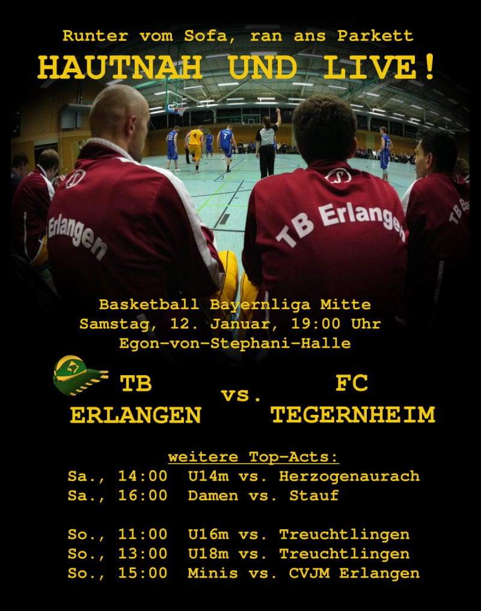
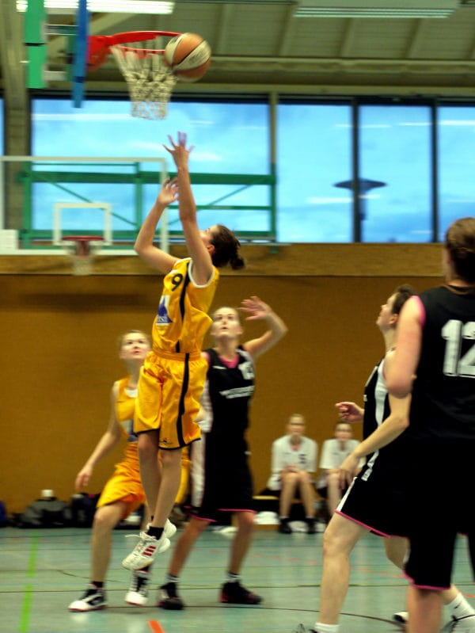
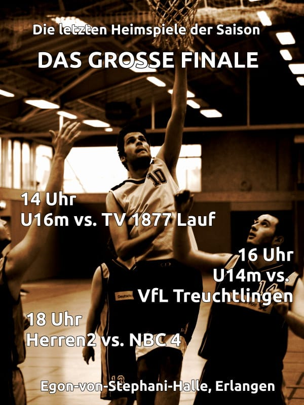

Jahreshauptversammlung 2021 der Basketball-Abteilung am 24. Juli
Einladung für die Mitglieder der Basketball-Abteilung zu unserer Jahreshauptversammlung 2021
Liebe Basketball-Abteilung,
der Termin für unsere diesjährige Hauptversammling steht fest. Die Sitzung findet statt am Datum: Samstag, 24. Juli 2021, um 14:00 Uhr (bis ca. 18:00 Uhr), Ort: TB 1888 Erlangen e.V. – Vereinsgaststätte, Spardorfer Str. 79, 91054 Erlangen
Tagesordnung:
- Zusammenfassung Jahr 2020
- Kassenbericht zum Jahr 2020
- Entlastung der ...
Es geht wieder los!
Bedingt durch die Pandemie mussten wir lange auf unseren Teamsport verzichten - aber nach einer langen Zeit des Lockdowns und der geschlossenen Hallen heißt es seit dem Beginn der Pfingstferien bereits: Wir sind zurück auf dem Court!
Wir trainieren während der Sommerzeit überwiegend auf den Outdoor-Plätzen vom Turnerbund mit unseren Teams. Wer bei uns mitmachen oder einfach mal ausprobieren möchte ist immer herzlich willkommen! Am besten vorher einfach über unser
Jahreshauptversammlung 2020 der Basketball-Abteilung am 20. September
Einladung für die Mitglieder der Basketball-Abteilung zu unserer Jahreshauptversammlung 2020
Datum: 20. September 2020, um 11:00 Uhr (bis ca. 13:00 Uhr), Ort: TB 1888 Erlangen e.V. – Vereinsgaststätte, Spardorfer Str. 79, 9054 Erlangen
Tagesordnung:
- Zusammenfassung Jahr 2019
- Kassenbericht zum Jahr 2019
- Entlastung der Abteilungsleitung
- Etat und Planungen 2020
- Anträge (bitte bis zum 10.09.2020 an den ...
Unser Trainerteam sucht Unterstützung!

Du bist engagiert, zuverlässig und natürlich ein wenig so richtig basketballverrückt? Du suchst Spaß, bist bereit, viel zu geben und viel gemeinsam zu erleben? Du willst mit einem Team Ziele erreichen, egal ob mit Jungs, Mädchen, Damen oder einer Herrenmannschaft? Dann runter vom Sofa und rauf aufs Parkett, denn: Wir suchen Verstärkung im Trainerteam im Jugendbereich.
Du bist interessiert? Dann ...
* Update Corona / COVID-19 * Keine Aktivitäten bis 19. April
Liebe Basketballgemeinde,
aufgrund der zunehmenden Verbreitung des Corona / COVID-19 Virus werden zunächst bis zum 19. April 2020 alle Aktivitäten der Basketballabteilung eingestellt. Von dieser Entscheidung sind sowohl die Trainings- und Spielzeiten betroffen als auch die Benutzung der Basketballplätze auf dem Aussengelände vom Turnerbund Erlangen (siehe auch https://turnerbund.de/news/corona-situation-am-tb/).
Neben den ...
* Kein Spielbetrieb und kein Training aufgrund Corona / COVID-19 *
Liebe Basketballgemeinde,
Aufrund der Absage der laufenden Spielbetriebs auf Bezirks- und Verbandsebene findet auch erstmal kein Training unserer Teams statt, um die Verbreitung des Corona-Virus zu verlangsamen.
Am Wochenende wird die Abteilungsleitung gemeinsam mit den Trainerinnen alles weitere besprechen.
Klaus Thielking-Riechert Abteilungsleiter
D1: Nach zäher erster Halbzeit, zünden die Damen 1 den Turbo bezwingen Neumarkt deutlich
- Knappe erste Hälfte, geschickte Defenseumstellung, deutliches Endergebnis - So lässt das Spiel der Damen 1 vom Sonntag gegen die Fibalon Baskets Neumarkt in Kürze zusammenfassen. Nach einem angespannten Start blieben beide Teams über die gesamte erste Halbzeit auf Augenhöhe. Erlangen spielte geduldig und schnell, traf gute Entscheidungen und ...
Damen 1: Sieger des Stadtderbys beim CVJM auch in der Rückrunde
Am Samstag, den 1. Februar, stand für die Damen 1 das Erlanger Derby gegen den CVJM an. Der Tabelle nach waren die TBlerinnen klare Favoritinnen. Die Ansage des Coaches vor dem Spiel war jedoch eindeutig: Der CVJM darf nicht unterschätzt werden. Zu Anfang des Spiels wurden die TB-Spielerinnen vom hohen Tempo und der aggressiven Defense in der Sponselhalle überrascht. Darüber hinaus trafen die Gegnerinnen gute Entscheidungen, bewegten den Ball gut und es fielen gleich drei Drei-Punkte-Würfe. Infolgedessen ...
D1 - auch im 3. Spiel der Rückrunde ungeschlagen
Trotz einer schweren Niederlage (49:70) gegen den Post SV Nürnberg in der ersten Saisonhälfte gelang der TB-Mannschaft an diesem Sonntag in einem spannenden Heimspiel ein Sieg. Der Post SV überraschte die TB-Spielerinnen mit einem schnellen und aggressiven Start, der in den ersten Minuten zu einem Rückstand von sieben Punkten führte. Doch die Mädels ließen sich nicht unterkriegen ...
D1 – Knapper Sieg gegen den drittplatzierten BBC Bayreuth
Zum ersten Heimspiel des Jahres 2020 empfingen die Damen 1 den direkten Tabellennachbarn und Favoriten BBC Bayreuth – Spannung vorprogrammiert! Nach dem Hinspiel, bei dem die Bayreutherinnen souverän gewannen (33:48), wollten die Erlangerinnen ihre kleine Chance nutzen und die Bayreutherinnen mit ihrem fokussierten und harten Spiel überraschen. Zusätzlich kam es zum lange ersehnten Wiedersehen mit Flügelspielerin Sara Faghih-Naini, die sechs Jahre beim TB spielte und maßgeblich die Teams der letzten ...
D1 – Rückrunde startet mit Sieg in Heroldsberg
Das erste Spiel nach den Weihnachtsferien, mit denen auch immer eine zweiwöchige Trainingspause einhergeht, ist meist ein ganz spezielles, da man weder weiß, wie die Gegner aktuell einzuschätzen sind und man auch den eigenen Status länger nicht testen konnte. Hinzu kommt, dass die Rückrunde startet und man nun zum zweiten Mal auf die gegnerische Mannschaft trifft. Das Hinspiel Anfang Oktober konnten ...
Knapper Sieg der Damen 1 gegen SC Kemmern 2
Nach der Niederlage im Pokalspiel gegen den SC Kemmern 2 letzten Monat kämpften sich die TBlerinnen am Sonntagabend zu Hause erfolgreich zum Sieg. Motiviert und konzentriert starteten die Damen 1 in die erste Hälfte der Partie. Durch kluge und schnelle Pässe konnte die Pressenverteidigung der Gäste ausgespielt und in der Offence gepunktet werden. Eine starke Teamleistung in der Verteidigung führte zudem ...
Damen 1 überraschen die Regensburger
Am Samstag spielten die Damen 1 auswärts gegen die Regensburg Baskets. Respektvoll und auf ein hartes Spiel gegen den Tabellenersten eigestellt reiste man an. Die Ansage vor dem Spiel des Coaches war ganz klar: „wenn ihr mit der Einstellung an das Spiel geht, dass ihr verliert, verlieren wir gnadenlos. Wenn ihr denkt, wir können das packen, dann werden wir es ihnen nicht leicht machen.“ Das Team startete positiv in das Spiel und konnte dem Gegner bereits im 1. Viertel zeigen, dass man nicht zu Unrecht in ...
Bayernliga Duell Damen (fast auf Augenhöhe)
Am Sonntag spielten unsere Damen 1 zuhause gegen den bisherigen Tabellenzweiten TS Herzogenaurach. Schon im ersten Viertel musste sich unsere Mannschaft auf eine hohe Spielintensität und –geschwindigkeit einstellen. Durch die harte Defense auf beiden Seiten fielen kaum Punkte und der Viertelstand war lediglich 7:6 aus Erlanger Sicht. Bis zur Halbzeit verlief das Spiel dann ähnlich und der Zwischenstand betrug 19:15 für die Heimmannschaft. Motiviert durch einen soweit unerwartet guten Zwischenstand gingen ...
Damen 1: Erster Auswärtsieg in der Bayernliga
Am Sonntag, den 17.11.2019 machten sich 10 Spielerinnen der D1 und ihr Coach Jan auf nach Neumarkt in der Oberpfalz. Vor diesem Spieltag befanden sich die Fibalon Baskets Neumarkt auf Tabellenplatz 3 und die TBler belegten Platz 6. Dementsprechend gemischt waren die Einschätzung der Siegeschancen. Das letzte Aufeinandertreffen dieser beiden Teams in der BOL lag schon eine ganze Weile zurück und die Neumarkter spielten seitdem in der Bayernliga. Die Marschroute, die der Coach vor dem Spiel vorgab hieß ...
Damen 1: Sieger im Stadt-Derby
Heute, Sonntag den 10. Nov 2019, stand das Derby der Damen 1 gegen den CVJM Erlangen an. Nach vielen Niederlagen unserer Damen gegen die Konkurrenz in der eigenen Stadt, sollte nun endlich der lang ersehnte Sieg gegen die Rivalen her, diese Saison in der Bayernliga. Der Kader war auch dementsprechend stark besetzt, denn alle wollten dabei sein. Die Damen 1 starteten auch konzentriert und smart ins Spiel und konnten in den ersten fünf Minuten eine Führung von 10:4 erspielen. Durch gutes Teamplay wurde ...
Pokalspiel der Damen1 gegen den SC Kemmern 2
Es ist Samstagmorgen, 8:50 Uhr, Treffpunkt zum Bayernpokalspiel gegen den SC Kemmern 2. Alle sind noch leicht verschlafen, doch Coach Jan hat mit Kaffee und Brezeln für das ganze Team vorgesorgt und uns wach bekommen. Auf ging es zu den Kemmerern, die bisher noch unbekannte Gegner waren. Auch sie spielen, wie der TB Erlangen, in der Bayernliga Nord. Dadurch ist das Pokalspiel sozusagen gleichzeitig ein ...
Harter Kampf in der Damen-Bayernliga
Am Samstag bestritten die Damen 1 ihr zweites Auswärtsspiel gegen den Post SV Nürnberg. Die Gegner waren keine Unbekannten, denn die Teams spielten bereits in der Vorbereitung ein Testspiel gegeneinander. Unsere Damen waren also eingestellt auf eine harte Pressverteidigung und eine junge, schnelle Mannschaft. Nach einem guten Start und einer zwischenzeitlichen 10 Punkte Führung, ließen wir die Gegnerinnen kurz vor der Pause noch einmal herankommen und nach den ersten zwei Vierteln stand es nur noch 32:27 ...
Niederlage im Aufsteiger-Duell
Am Sonntagnachmittag, den 13.10. trafen mit den Damen vom TB Erlangen und BBC Inviniti Bayreuth die beiden Aufsteiger der Bayernliga aufeinander. Das erste Viertel war anfangs noch etwas chaotisch und durch hohen Druck am Ball und vielen Ballverlusten auf unserer Seite dominierten zunächst die Bayreutherinnen. Doch nach einigen Minuten begegnete man sich auf Augenhöhe und ab Minute 14 konnten die Erlanger Damen den Ausgleich erzielen. Dieser Spielstand konnte fast über die gesamte erste Spielhälfte ...
First game, first win of the first Bayernliga season for TB Erlangen's women
Following 2 consecutive championship titles in the Bezirksoberliga, TB Erlangen's Damen 1 basketball team took on the challenge and leveled up into the Bayernliga for the 2019/2020 season, a decision that many say was long overdue. Coached by Jan Dominik for the sixth straight season, the team welcomes Mila to the returning lineup of Annika, Clara, Fabi, Friedi, Janina, Lisa, Luisa, Sophie, and Vroni. Juliette and Samira have returned from their time abroad to rejoin the roster, and Anouk, Conny, Eleen, ...
Trainingszeiten während der Saison
Der Trainingszeiten für September stehen fest und sind ab dem 1. Oktober gültig:
Details gibt es unter http://www.tb-basketball.de/informationen/trainingszeiten
Also dann nichts wie rein in die Halle, Ball in die Hände und rauf aufs Parkett!
Tombola beim TB Nachtlauf am 6. September
Beim Nachtlauf am Freitag (6.September) gibt es in diesem Jahr auch eine Tombola, deren Erlös der Basketballabteilung zu Gunsten kommt. Folgende Geräte haben wir von der Firma Beny Sports (https://benysports.de/) zum Verlosen zur Verfügung gestellt bekommen (Gesamtwert ca. 1200€): * 2X Boxset Pirat (Handschuhe und Boxsack) 3X Vibrationstrainer Elegance ...
Damen Training heute auf dem TB Freiplatz
Hallo Allerseits, das Training unserer Damen-Teams findet heute nicht in der Halle sondern auf dem Freiplatz im Sportgeländer vom Turnerbund an der Spardorfer Straße statt. Viele Spße bei der Trainingseinheit!
Nächste Station: Bayernliga – Mitfahrerinnen gesucht!
Nach zwei aufeinanderfolgenden Meistertiteln (17/18 und 18/19) in der BOL Mittelfranken/Oberpfalz und dem zusätzlichen diesjährigen Pokalsieg im Bezirk Mittelfranken, wagen wir das Abenteuer „Aufstieg in die Bayernliga“. Wie leider nach jede Saison müssen wir uns auch diesmal wieder von einigen Spielerinnen verabschieden und sind daher auf der Suche nach Verstärkungen für unser Team! Aktuell ...
Der Traininingsplan ab 1. Mai ist online
Der Trainingsplan ab 1. Mai ist online. Ihr findet ihn unter http://www.tb-basketball.de/informationen/trainingszeiten
Jahreshauptversammlung der Basketball-Abteilung am 7. April
Aufgrund der Teilnahme unserer Damen I und der Herren II im Bezirkspokalfinale müssen wir unsere JHV um einen Tag verschieben. Hier ist nun die offizielle Einladung:
Einladung für die Mitglieder der Basketball-Abteilung zu unserer Jahreshauptversammlung 2019
Datum: 7. April 2019, um 11:00 Uhr (bis ca. 13:00Uhr), Ort: TB 1888 Erlangen e.V. – Vereinsgaststätte, Spardorfer Str. 79, 9054 Erlangen
Tagesordnung:
- Zusammenfassung Jahr 2018
- Kassenbericht zum Jahr ...
Damen I: Schwarzer Samstag in Neustadt a. d. Aisch
Die erste Niederlage der Saison - D1 verlieren in Neustadt, behalten aber die Tabellenführung. Am Samstag, den 2.2. machten sich die Erlangerinnen auf zum zweiten Spiel der Rückrunde. Mit den Neustädterinnen wartete ein Gegner auf die D1, den sie seit langem kennen und wo bekanntermaßen die Spiele immer knapp sind. Im Hinspiel war der Sieg lange nicht in Sicht und erst in den letzten 3 Minuten konnten die TBlerinnen das Spiel zu ihren Gunsten drehen. Und auch diesmal sollte es ein sehr knappes ...
Damen 1: Als hätte es keine Pause gegeben!
Die Damen 1 knüpfen im ersten Spiel im neuen Jahr und in der Rückrunde der BOL direkt an ihre Form der Hinrunde an. Als hätte es keine Pause gegeben, gewinnen sie gegen den Post SV 2 deutlich mit 59:28. Zwei intensiven Trainingswochen nach der Weihnachtspause lagen hinter den Damen als sie sich top motiviert am Samstagabend zum Spiel gegen den Post SV 2 in der Röthelheimhalle trafen. Die Begegnung hieß Tabellenerster gegen Tabellenletzten, was aber definitiv nichts heißt. Die TBlerinnen wussten aus ...
U14m: Weihnachtsgrüße von der Tabellenspitze!
Die U14m (dieses Jahr in die BOL aufgestiegen) kann stolz auf eine makellose Hinrunde zurückblicken: Nach acht Spielen und acht Siegen steht die Mannschaft ungeschlagen und ungefährdet an der Tabellenspitze – mit einer Bilanz von +353 Punkten!
Nur der Post SV Nürnberg III konnte im (vorgezogenen) ersten Spiel der Rückrunde dem TB gefährlich werden, der sich jedoch am Schluss mit 64-58 durchsetzen konnte. Nach wie vor überzeugt die Mannschaft durch Teamplay, Spielspaß und viel Einsatz. Jetzt heißt ...
Damen1: mit weißer Weste in die Weihnachtspause!
Ein gemütlicher zweiter Advent? Von wegen: Adrenalin war angesagt!
Die Adventssonntage verbindet man mit Ruhe, Gemütlichkeit, Weihnachtsplätzchen und Kerzenschein. Dieses Jahr haben unsere Adventssonntage jedoch weniger mit diesen besinnlichen Dingen zu tun als viel mehr mit Fastbreaks, Defense, Traubenzucker und Hallenbeleuchtung: Nach unserem Sieg am 1. Adventssonntag in Ansbach, starteten wir diesen Sonntag zu Hause gegen die Damen der SpVgg Roth.
Im Training haben wir uns bereits ...
Drei Spiele - drei Siege: perfekter Saisonauftakt für unsere Damen!
Erfolgreicher kann der bisherige Saisonverlauf unserer Damen in der BOL gar nicht verlaufen. Hier ist ein kurzes Zwischenfazit:
Gelungener Start in die Saison: TB Erlangen beim Post SV Nürnberg 2
Nach einer starken Vorbereitungsphase mit vier Vorbereitungsspielen (wie berichtet) startete die Damen I Mannschaft vom TB mit einem Auswärtsspiel gegen Post SV Nürnberg 2 in die neue Saison.

Volles Programm am zweiten Adventswochenende!
Ein richtig volles Programm haben wir am Wochenende: 7 Heimspiele und 1x Auswärts!
Das einzige Auswärtsspiel hat unsere U18m am Samstag in Fürth - und da kommt der Tabellendritte zum Zweiten, ein echtes TOP-Spiel also!
Den Auftakt der Heimspiele gestaltet unsere U12mix am Samstag um 11:00 Uhr und empfängt den TSV Altenberg. Die U14m will um 13:00 Uhr die bitzsaubere weiße ...
Vorschau 10./11. November: Die Null muss weg!
Die Herbstferien sind vorbei und es heißt endlich wieder Gametime! Es geht 1x auswärts und 5x im Röthelheimpark auf das Parkett!
Am Samstag lassen wir es noch ein bisschen ruhiger angehen: zwei Spiele stehen auf dem Programm. Für unsere U18m geht es am Samstag nach Weißenburg zum TSV - und die Jungs wollen natürlich ihre weiße Weste in der BOL behalten. Abends um 19 Uhr gibt ...
Unsere Bayernliga-Herren feiern ihren zweiten Auswärtssieg!
Nach dem überraschenden Auswärtserfolg unserer 1. Herrenmannschaft letzte Saison war Eckersdorf auch heuer willkommenes Ziel für ein erfolgreiches Spiel. Axel Mees zeigte mit einem Dreier gleich die Richtung an, in die es gehen sollte. Aber unsere Herren hatten unter dem Korb Probleme mit den robusten Eckersdorfern und verloren viele 1on1-Duelle. Gut, dass sich Center Felix Geheeb unter dem gegnerischen Korb auch des öfteren durchsetzen konnte.
Herren I: Erster Saisonsieg in Eggolsheim!
Drei Viertel lang zeigten unsere Bayernligaherren in Eggolsheim erstmals in dieser Saison, wie gut sie Basketball spielen können. Von Beginn an wurde defensiv kaum etwas zugelassen und offensiv sah man ein sicheres Passspiel und dynamische Abschlüsse. Endlich fanden auch wieder Dreipunktwürfe ihr Ziel. Dominik Roth setzte gleich den ersten ins Netz, vier weitere folgten. Zur Halbzeit notierte man einen verdiente 35:21-Führung für den TB. Nach 15:10 und 20:11 gewannen unsere Herren auch das dritte Viertel ...
Herren II: Ein überzeugender erster Heimsieg!
Die zweiten Herren treten in diesem Jahr mit neuen Trainern und (fast) alter Besetzung wieder in der BOL an. Das neue Trainergespann aus Benni Höller und Jonas Ritzer hatten für das erste Spiel eine klare Vorstellung: Viel Defense, viel Einsatz, viel Teamplay und - natürlich – gewinnen. Mit dem Nürnberger BC II, der die letzte Saison mit der besten Punktebilanz abgeschlossen und nur 3 Spiele verloren hatte, stand auch gleich ein Härtetest bevor.
U14m: Ein makelloser Start in die BOL!
Nachdem die U14 im letzten Jahr in der Kreisliga ungeschlagen blieb und ein Großteil der Leistungsträger auch dieses Jahr erhalten blieben, beschlossen wir im Frühjahr, uns diese Saison in der Bezirksoberliga zu versuchen. Als Coach blickte ich der Sache mit etwas Skepsis entgegen, da der ältere Jahrgang zwar spielerisch stark war, jedoch nur 4 Spieler aus dem letzten Jahr blieben. In den ersten vier Spielen konnten wir jedoch zeigen, dass wir völlig zurecht in der BOL spielen: Deutlichen Siegen gegen ...
Damen 1: Powerful Pre-season
TB Erlangen's Damen 1, coached for the fifth season by Jan Dominik, will fight to keep their title as the reigning Bezirksoberliga Mittelfranken champions. New players Clara, Annika, Sophia, Anouk and Lena joined the veteran TB lineup, and together they have been training hard to seamlessly execute their offensive playbook. In September TB Erlangen hosted the Bezirksoberliga team TSV 1847 Schwaben Augsburg for a pre-season game, which ended in a strong win for Erlangen. The Damen 1 maintained their ...
Der Trainingsplan für den Winter ist online
Hallo Allerseits! Wir jedes Jahr starten wir Anfang Okober wieder mit dem Wintertraingsplan.
Juhuu, it's gameday, baby!
Leute, das lange Warten hat endlich wieder ein Ende: Am Wochenende starten wir so richtig in die neue Saison! Und mit 5 Heimspielen legen wir gleich richtig los! Und auswärts sind dazu am Samstag noch die U16w in Roth sowie am Sonntag die U14m bei Post SV Nürnberg 4 gefordert.
Das erste Heimspiel bestreitet am Samstag unsere U16m, die in der BOL um 15:00 Uhr den Post SV Nürnberg 2 empfängt. ...
Es geht wieder los: der Trainingsplan für September ist online
Hallo Allerseits! Mit dem Ende der Sommerferien geht nun auch wieder das Training richtig los. Hier ist der Trainingsplan für den September - zum Monatswechsel ändern sich dann nochmal die Hallenzeiten
Trainingszeiten während der Sommerferien
Während der Sommerferien sind ja bekanntemaßen viele in Urlaub - daher haben wir unsere Trainingszeiten etwas gestrafft. Wir üben und spielen an den folgenden Terminen:
- Damenteams: Dienstags 21.8., 28.8. und 4.9. jeweils 20-22 Uhr im Emmy-Noether-Gymnasium sowie Freitags, 24.8. und 31.8. von 20-22 Uhr in der Egon-von-Stephani-Halle
- Herrenteams: jeweils Montags von 20-22 Uhr in der Egon-von-Stephani-Halle
- Jugendteams: ab dem 22.8. jeweils Mittwochs von 17:30-19:00 Uhr auf ...
Unser Trainerteam sucht Unterstützung!

Du bist engagiert, zuverlässig und natürlich so richtig basketballverrückt? Du suchst Spaß, bist bereit, viel zu geben und viel gemeinsam zu erleben? Du willst mit einem Team Ziele erreichen, egal ob mit Jungs, Mädchen, Damen oder einer Herrenmannschaft? Dann runter vom Sofa und rauf aufs Parkett, denn: Wir suchen Verstärkung im Trainerteam!!
Du bist interessiert? Dann schicke eine ...
Oh Yes, It's Gameday!
Das Basketballwochenende wird eingeleutet von unserer U16 weiblich. Sie empfangen am Samstag den TTV Neustadt um 13:00 Uhr. Aus Fürth reist die U14 männlich an, um sich mit unseren Jungs um 15:00 Uhr zu messen.
Am Sonntag gehts um 12:00 Uhr los mit der U16 männlich gegen den Post SV Nürnberg. Vor dem Bayernligspiel am späten Nachmittag gibt es noch einen echten Kracher: TB vs. TB - unser ...
Yes! Unsere Damen sind BOL-Champions!
Es war am Samstag nochmal ein richtig anstrengendes Spiel beim Post SV Nürnberg für unsere Damen1: mit der Gewissheit, bei einem Sieg die Meisterschaft feiern zu können, hat das Team auch den Erkältungssymptomen getrotzt und nochmal alles eingeworfen! Zwischendurch ein enges Spiel, aber am Ende war es dann doch ein weiterer souveräner Sieg, den sich die Mädels erspielt haben! Herzlichen Glückwunsch an ...
U18w verliert unglücklich 43:45 nach Overtime-Krimi
Samstag Nachmittag, das letzte Heimspiel der U18w in der Saison 17/18 gegen Herzogenaurach steht an. Eine Mannschaft, die ebenso wie die TBlerinnen fast nur aus Spielerinnen besteht, die auch noch U16w spielen können. Aber nicht nur altersmäßig sollte es ein ausgeglichenes Spiel werden.
Die Mädchen der U18w starteten gut ins Spiel und dominierten die ersten 5 Spielminuten. Auch wenn sich die Aufbauspielerin des TB gleich in den ersten Minuten wieder auswechseln lassen musste um an der Hand ...
Jede Menge Derby und das Topspiel bei den Damen: die Vorschau zum Wochenende!
Also besser kann unser Programm fürs Wochenende ja kaum sein: #Derby und #Topspiel sind dieses Mal unsere Hashtags: Samstag:
- #LOKALDERBY! Unsere Herren 2 treten um 17:30 beim CVJM Erlangen an und wollen sich für das Hinspiel revanchieren!
- Die Herren 1 müssen etwas weiter zum #Mittelfrankenderby in der Bayernliga fahren: In Neustadt erwartet sie um 19:00 der Tabellenzweite der Bayernliga Nord! Können die Jungs die nächste harte Nuss ...
Herren1 mit Überraschung gegen Eckersdorf!
Nach der verheerenden 47:81-Heimniederlage gegen die TG Würzburg II war klar, dass es so nicht weitergehen konnte. Und tatsächlich trat gegen den BBC Eckersdorf wieder ein Team an, das diese Bezeichnung auch verdiente. Bis auf 2 schwache Minuten nach der Pause wurde konzentriert und hart verteidigt, laut und heiß waren in einer gespenstisch leeren und kühlen Halle nur die Erlanger, da wurde wieder kommuniziert, jeder kämpfte für den anderen und von der Bank kam jede Menge Unterstützung. Die Angriffe ...
Die Vorschau zum ersten großen Heimspielwochenende 2018!
Dieses Wochenende ist zu eurem Vergnügen wieder voll gepackt mit Heimspielen!
- Los gehts mit der U14 männlich gegen TV Altenberg (11:00), gefolgt von der u16w (13:00) gegen den TSV Weißenburg.
- Den Anschluss macht die U12 gegen den Post SV Nürnberg um 15:00.
- Die Damen1 treten um 17:00 gegen den TV 48 Schwabach 2 an.
- Abschließend werden die Herren3 den Samstag mit ihrem Spiel gegen den TSV 1946 Altenberg um 19:00 beenden
- Auswärts drücken wir natürlich der ...
Herren 1 feiern den fünften Sieg!
Die Durststrecke nach vier sieglosen Spielen scheint endgültig überwunden zu sein, denn nach dem hart erkämpften 67:60-Heimsieg gegen den TTL Bamberg II konnte auch der ATS Kulmbach mit 75:67 bezwungen werden. Zunächst lief der TB aber einem Rückstand hinterher; wie erwartet tat man sich vor allem gegen den Kulmbacher Center Niklas Jungbauer schwer. 16:21 war dank der 7 Punkte von Mike Grünert zu verkraften, da trat Ex-TBler Jakob Krüger auf den Plan und netzte gleich anfangs des 2. Viertels seinen ...
Und auf das nächste Türchen: das Programm zum 2. Advent!
Zum 2. Adventswochenende gibts wieder ein paar Schmankerl! Los geht es daheim mit den Damen 2 gegen Treuchtlingen um 17:00! Und anschließend heißt es dann Derbytime! Denn die Herren 4 empfangen den CVJM Erlangen 3 zum Kräftemessen!
Auswärts sind unsere Jungs aus der U16 um 13:00 beim NBC zu Gast während die Herren 2 den Basketballsamstag um 19:15 in Gr0ßschwarzenlohe abschließen.
Am Sonntag treten die Damen 1 um 16:45 in Fürth an - das wird ein hartes Stück Arbeit beim Spitzenreiter aber ...
U18w überwintert an Tabellenspitze!
Die TBlerinnen starteten gut in die direkte Revanche gegen den TTV Lauf. Man hatte sich moralisch gut darauf eingestellt und wollte an die intensive Leistung aus der zweiten Halbzeit der Vorwoche anknüpfen.
Die ersten 7 Minuten waren unsere Mädchen die deutlich bessere Mannschaft und führten die Partie an. Doch dann: Auszeit Lauf aus der die Gastgeber wie ausgewechselt zurückkamen. Plötzlich spielten sie eine gute Pressverteidigung der Einwürfe, womit unsere junge Mannschaft gar nicht zurecht ...
Der Advent startet mit jeder Menge Heimspiele!
Pünktlich zur Adventszeit steht ein dickes Heimspielwochenende an! Am Samstag gibts im Röthelheimpark volles Programm:
- 11Uhr: U16m gegen den TV Lauf
- 13Uhr: U18m vs. Höchstadt
- 15Uhr: U16w vs. Großlohe
- 17Uhr: die brandheißen Herren II vs. NBC II
- 20Uhr: und zum Abschluss Herren I gegen TTL Bamberg ...
U18w - eine gute Halbzeit reichte für Erlangen nicht zum Sieg gegen Lauf
Das Spiel gegen den TV Lauf begannen die TBler sowohl offensiv als auch defensiv stark. Ihre gute Leistung wurde aber leider nicht auf dem Punktekonto belohnt. Das Wurfglück war nicht auf Erlanger Seite und viele unkonzentriert gespielte Pässe kamen nicht an. Auf der anderen Seite hatten die Gäste einen guten Lauf und konnten sich bis zum Ende des 1. Viertels mit 11 Punkten bereits deutlich absetzen.
Leider ließen sich die die Mädchen davon ein bisschen den Schneid abkaufen und so ging auch das ...
Schluss mit dem Novemberblues - Jetzt drücken wir aufs Gaspedal!
Das Wochenende steht vor der Tür - und unsere Teams haben alles andere als Langeweile! Folgende Heimspiele erwarten uns am Samstag:
- Um 11 Uhr geht es los mit der U14m, gefolgt von der U16m um 13:00 - beide jeweils gegen den TTV Neustadt
- Die U18w tritt um 15:00 gegen den TV Lauf an
- Und um 17:00 Uhr beenden die Herren III den Heimspieltag mit ihrem Spiel gegen den TSV Weißenburg
Und 4x geht es Samstag Auswärts an den Start:
- In Weißenburg treten die ...
Volles Haus am Samstag: Das Programm am Wochenende 18./19. November
Ein voller Basketballsamstag steht morgen ab 11:00 Uhr in der Egon-von-Stephani-Halle bevor:
- U16m vs. Post SV Nürnberg 2 (11:00 Uhr)
- U18m vs Nürnberger BC 2 (13:00 Uhr)
- U16w vs. TV Lauf (15:00 Uhr)
- die Damen1 empfangen den TTV Neustadt und wollen ihren aktuelle Serie von zwei Siegen weiter ...
U18w startet mit Sieg in Saison 17/18
Nach der langen Durststrecke von 2 Jahren ohne Sieg, konnten gleich im 1. Spiel der Saison der 1. Sieg eingefahren werden!
Mit sieben Spielerinnen, davon vier aus der der U16w, startete man gegen Altdorf, die ihrerseits personell mit nur 5 Spielerinnen noch dünner besetzt waren, schlecht in die Partie. Die Verteidigung war nicht intensiv genug, die Laufbereitschaft ließ zu wünschen übrig und "einfache" Körbe gingen daneben, weshalb man nach den ersten 10 Minuten mit 7:16 hinten ...
Das gabs noch nie: TB II vs. CVJM I ! - Volles Programm am Martinswochenende
Nach den Herbstferien geht es endlich wieder rund! Umso besser, dass dieses Wochenende mal wieder so richtig vollgepackt mit Spielen ist. So stehen auch wieder einige Heimspiele unserer Mannschaften an!
Eingeläutet wird der Heimspieltag am Samstag von unserer männlichen U18, die sich um 13:00 Uhr gegen den NBC I behaupten muss. Anschließend startet um 15:00 Uhr das lang ersehnte erste Saisonspiel unserer weiblichen U18, die den TV Altdorf empfängt.
Mit bisher nur einem Spiel (knapp ...
Support Your Teams: Wir wollen unter den TOP200 bei der ING-DIBA Aktion!
Die Saison hat gerade begonnen und wir starten gleich in weiteren Wettbewerb! Denn wir machen wieder bei der ING-DIBA Aktion "Du und Dein Verein" mit und wollen mit Deiner Unterstützung unter die TOP200 Vereine kommen, die eine 1000€ Eure Spende für ihre Kasse erhalten! Also ran an die Tasten, denn wir können dabei jede Menge Unterstützung gebrauchen! Für Euch sind ...
"Derby Reloaded" - das nächste Topspiel im Röthelheimpark!
Zweimal auswärts und ein Heimspiel - so lautet das Programm für dieses Wochenende. Unsere "Zweite" und "Dritte" gehen beide auf die Reise, aber mit unterschiedlichen Vorzeichen. Die Herren2 wollen nach den beiden aufeinanderfolgenden Niederlagen am Sonntag beim TV Schwabach 2 endlich wieder ein Erfolgserlebnis, während die Herren3 mit dem ...
Herren1: Dritter Sieg im vierten Spiel!
Gut erholt von der ersten Saisonniederlage gegen Spitzenreiter Eckersdorf präsentierten sich unsere Bayernligaherren in Würzburg als bärenstarkes Team. Dabei hatte die TG Würzburg 2 deutliche Größenvorteile, die die Erlanger mit starker Physis und Teamdefense ausglichen. Ex-ProB-Center Lars Buss machte zwar 14 Punkte für sein Team, doch dann kam nicht mehr viel dazu. Vor allem im zweiten Viertel machten Wolfgang Vogts Spieler Ernst (28:13). Die Würzburger Presse war dagegen nur selten erfolgreich und ...
"On the Road" - fast nur auswärts am Wochenende!
Dieses Wochenende sind unsere Teams überwiegend auswärts gefordert: Am Samstag bestreiten die Damen 2 um 14:00 Uhr beim Post SV Nürnberg ihr erstes Ligaspiel während zeitgleich treten unsere Herren 4 in Weißenburg antreten.
Die Herren 1 machen sich am Samstag Abend auf den Weg in den Westen. Dort empfängt sie der TG Würzburg 2 um 17:30 Uhrin der Wolffskeelschule. Das Ziel ist klar: Mit einem Sieg kann der Anschluss an die Tabellenspitze gehalten werden!
Der Heimspielsonntag beginnt mit ...
"Leinen los!" - die Vorschau auf das Wochenende 14./15. Oktober
Mit neun Spielen auf dem Wochenendplan sind wir endgültig in der Saison 2017/18 angekommen und das schöne daran ist: Ein brandheißes Basketballwochenende steht bevor!
Besonders anstrengend wird es für unsere U18m, die gleich zweimal am Start ist: am Samstag empfängt das Team um 15 Uhr den TV Fürth und möchte sich für die Niederlage aus dem Hinspiel vor drei Wochen revanchieren. Am Sonntag nachmittag folgt dann gleich der nächste Auftritt bei den Alligator Baskets in Höchstadt.
Gleich drei ...
Herren1: Zäher Auftritt beim Auswärtssieg in Bamberg
Auf den glänzenden Auftaktsieg über HAMM Weiden ließen unsere Bayernligaherren einen mäßigen Auftritt bei Don Bosco Bamberg folgen. Am Ende stand ein 64:58-Sieg zu Buche, aber die Art und Weise, wie er zustande kam, interessierte bald keinen mehr -2 Punkte mehr waren auf dem Konto- schließlich möchten wir oben mitspielen. War es die merkwürdige Spielzeit um 13 Uhr oder wurde der Gegner unterschätzt? Unsere Herren brauchten jedenfalls ziemlich lange, um die Führung in diesem niveauarmen Spiel zu erringen. ...
Wir nehmen Fahrt auf: 6 Spiele am Wochenende!
Nach dem erfolgreichen Bayernliga-Auftakt am letzten Wochenende wollen unsere Herren1 am Samstag bei Don Dosco Bamberg nachlegen. Die Bamberger waren am vergangenen Wochenende ebenfalls erfolgreich - das könnte durchaus interessant werden. Das letzte Duell unserer Herren mit Don Dosco war ein echter Krimi, der erst in den letzten Sekunden durch Kapitän Andy Rothberger entschieden ...
Gelungener Start in die Bayernliga 2017/18: Glanzvoller 83:66-Auftaktsieg!
Der Kracher zum Saisonbeginn hielt, was er versprach, und nach etwas holprigem Beginn zeigten unsere Bayernligaherren den Gästen aus Weiden mit atemberaubendem Offensivbasketball ihre Grenzen auf.
Dabei gingen die TB-Herren allzu bedächtig ins Spiel, „verschliefen“ immer wieder gegnerische Angriffe und kassierten zu viele Punkte. Am Ende des 1. Viertels durfte man froh sein, dass es nur 17:23 stand. Doch dann platzte der Knoten: Der erste Weidener Feldkorb im 2. Viertel fiel nach neun Minuten! Da ...
Der Norden ruft! Bayernligastart 2017/18
Es geht wieder los! Unsere Herren starten am Samstag in die Bayernliga Saison 2017/18 und gleich zu Beginn kommt mit den HAMM Baskets Weiden ein echter Gradmesser in die Egon-von-Stephani-Halle.
Mit einer ordentlichen Portion Selbstvertrauen freuen sich unsere Jungs auf das Duell mit den "alten Bekannten" aus der Oberpfalz, denn obwohl sie am vergangenen Wochenende im ...
"Off-Season is over!" - Start frei für die neue Saison!
Jetzt ist es offiziell: die Off-Season ist vorbei! Traditionell beginnt die neue Saison mit dem Bayernpokal - und nach drei Jahren endlich auch wieder mal im Röthelheimpark. Unsere Herren stellen sich dem Regionalligateam der Regnitztal Baskets - und das wird alles andere als eine leichte Aufgabe! Der Tabellenachte der letztjährigen Regionalligasaison hat ...
Kein Training der Riesenflöhe am 14.9.
Wir müssen das heutige Training unserer Reisenflöhe / U10 leider kurzfristig absagen.
Heute kein Training in der Pöschkeschule!
Achtung: Heute am Mittwoch, den 13.9., findet kein Training in der Pöschkeschule statt!
TrainierInnen und Co-TrainierInnen gesucht!
Die Basketball-Abteilung des Turnerbund Erlangen hat in den letzten Jahren einen sehr starken Zulauf erfahren. Getragen wird sie durch die vielen ehrenamtlichen HelferInnen, ohne deren Engagement die Teilnahme an dem Spielbetrieb nicht möglich wäre. Mittlerweile kann die Abteilung auf ein über 25igjähriges Bestehen zurückblicken. Damit wir auch für die kommende Spielzeit unsere Mannschaften gut betreuen können, suchen wir Dich!
Idealerweise bist Du: verlässlich, teamfähig, kommunikativ, ...
Training während der Sommerferien
Während der Sommerferien gibt ein übergreifendes Trainingsangebot für die Jugendmannschaften Mittwochs auf dem TB Gelände sowie Trainingseinheiten für die Seniorenteams. Gerne kannst du jederzeit beim Training vorbeischauen. Informiere dich am besten vorher über die Kontaktfunktion ob das Training sicher stattfindet.
Kein Jugendtraining am 2. August!
Es sind Ferien, da sind einige Kinder und Jugendlich im Urlaub und es kann passieren, das auch das Jugendtraining auf dem Freiplatz nicht stattfindet. So auch heute am 2. August, da sich nur eine Teilnehmerin bei den Jugendtrainern angemeldet hat.
Unser Sommertraining beginnt!
Nach der Bergkirchweih heißt es bei uns “Schluss mit der Pause!“ Wir melden uns offiziell zurück und starten ab dem kommenden Montag mit einer Mix aus Team- und Individualeinheiten in unser Sommertraining, mischen die Trainingsgruppen, verbessern die Fitness und lassen natürlich auch das Spielen nicht zu kurz kommen.
Einer geht noch: Saisonfinale gegen den TSV Nördlingen!
"22-13-9!" - so lautet nicht die Telefonnummer von Coach Wolfgang Vogt, sondern das Motto für das letzte Saisonspiel unserer Bayernliga Herren am Samstag im Röthelheimpark. Denn im 22. Saisonspiel wollen die Jungs den 13. Sieg - und das mit 9 Punkten Differenz! Das letzte Saisonspiel kann die Mannschaft selbstbewusst beginnen, denn mit dem 54:61 ...
Die Rekordjagd der Herren I geht weiter!
Unsere Bayernligaherren machten in Ingolstadt da weiter, wo sie aufgehört haben und setzten die Rekordjagd mit einem Sieg weiter fort: 12 Siege und 9 Niederlagen stehen für die beste Bayernliga-Saison in der TB-Geschichte!
Ein Spiel steht noch aus, und natürlich soll daheim gegen Nördlingen ein Sieg eingefahren werden. Gelänge dieser, wäre das letzte Ziel möglich: ein positives ...
Abschiedsparty, Titel- und Rekordjagd: Die Vorschau zum 25./26. März
Kurz vor dem Ende der Saison haben wir nochmal ein richtig großes Spielwochenende! Während die U17w und Herren IV bereits in der Off-Season angekommen sind, dürfen alle anderen Teams am Wochenende nochmal auf das Parkett!
Auswärts starten am Samstag die U18m bei der SpVgg Roth. Ein Blick auf die Tabelle läßt vermuten, das unsere Jungs sich nicht um die ...
Jahreshauptversammlung 2017: Neue Abteilungsleitung an Bord!
Zu unserer aller Freude konnte am Samstag auf unserer Jahreshauptversammlung, sprichwörtlich in allerletzter Sekunde, eine neue Abteilungsleitungsmannschaft gefunden werden. Im Verlauf der Abteilungsversammlung konnte man auch einen ersten aufkommenden Geist des Aufbruchs wahrnehmen. Ich persönlich bin mit einem guten Gefühl aus der Sitzung herausgegangen, nach einigen Monaten der ...
Jetzt zählt’s – die Zukunft der Basketball-Abteilung seid Ihr!
Liebe Mitglieder und Freunde der Basketball-Abteilung,
am kommenden Samstag (18.03.) von 11 bis 13 Uhr wird in der Vereinsgaststätte des TB Erlangen die jährliche Jahreshauptversammlung der Basketball-Abteilung stattfinden. Dieses Jahr finden turnusgemäß die Neuwahlen der Abteilungsleitung statt. Es müssen einige Posten neu besetzt werden, u.a. die des Abteilungsleiters. Gerade für eine Fortführung des Spielbetriebes ist es zwingend notwendig, dass wir diese Stellen besetzt haben. Wir würden uns ...
Feuerwerk in Heroldsberg: Herren gewinnen Lokalderby!
Sensationeller Auswärtssieg beim Lokalrivalen - Viel Tempo auf beiden Seiten - Offensiv-Feuerwerk von unserer "Flügelzange" Dorberth & Schindler Damit hatte beim TB wohl keiner gerechnet: Unsere Jungs haben beim Tabellenzweiten TuSpo Heroldsberg sage und schreibe 90 Punkte erzielt und nur 76 zugelassen! Eine ganz starke Erlanger Mannschaft verlor beim ehemaligen Aufstiegsaspiranten kein einziges Viertel! Herausragender Rekord: Leon Schindlers 37 Punkte - noch nie hat ein Erlanger Spieler in ...
Titelrennen, Abstiegskampf und Lokalderby: Die Vorschau zum 11./12. März!
Jede Menge Spiele gibt es am kommenden Wochenende - Spannung versprechen vor allen Dingen die Duelle der U12, der Herren III und der Herren I!
Die Heimspiele starten am Samstag um 13:00 Uhr mit dem Duell der U17w mit dem CVJM Erlangen. Beide Teams haben bisher noch keinen Sieg auf dem Konto und wir sind gespannt, wer am Ende jubeln wird. Die U16m empfängt um 15:00 den TSV Ansbach. Im Januar waren unsere Jungs klare Sieger beim ersten Aufeinandertreffen - entsprechend selbstbewusst wird das Team am ...
Herren1 können Augsburger Express nicht stoppen
Auch unsere Herren1 konnten den Siegeszug des besten Rückrundenteams nicht stoppen und unterliegen dem TV Augsburg mit 52:67 In der Rückrunde der Bayernliga Mitte noch ungeschlagen stellte sich der TV Augsburg erwartet stark in Erlangen vor. Nach einer kurzen Eingewöhnungszeit –nach 2 Minuten führten unsere Herren mit 6:5- zeigten die Schwaben, warum sie auch den bis dahin ungeschlagenen Tabellenführer Wolnzach dominiert hatten. Geduldig spielten sie ihre Angriffe aus, um sie dann zielstrebig und ...
Topspiel, Lokalderby und harte Brocken: Die Vorschau zum 4./5. März
Fasching gefeiert und Kehraus gut überstanden? Dann kann es ja endlich wieder mit Basketball losgehen! Wir starten in den letzten Abschnitt der Saison und haben am Wochenende wieder ein volles Programm im Röthelheimpark - darunter gleich drei Highlights!
Topspiel in der U14-Kreisliga Am Samstag um 13:00 Uhr gibt es das Topspiel in der U14 ...
Herren1: Dreier-Feuerwerk beim TSV Schwaben Augsburg
Unsere Herren hatten bis zu diesem Spiel die wenigsten Dreier der Liga erzielt und wurden folgerichtig von einer Augsburger Zonenverteidigung empfangen - ein Trugschluss: Am Ende hatten sechs der acht TB-Spieler insgesamt 13 Dreier versenkt und Erlangen das Spiel mit 69:73 gewonnen. Bevor die Zone allerdings stand, stahl die Augsburger Presse den Erlangern gleich zwei Mal den Ball zum 5:0. Nach einem Dorberth-Sololauf von 8:0 stand es aber schnell 8:7! Mit zwei Dreiern von Andy Rothberger und Mike ...
Die Vorschau zum 18./19. Februar: Topspiele, Lokalderby und vielleicht schon der erste Meister!
Am letzten Spieltag vor Fasching geht es nochmal rund: 10 Teams sind am Wochenende auf dem Parkett, 4x davon mit Heimrecht und dazu ein Lokalderby in der Bezirksliga!
Mit dem Sieg vom letzten Sonntag im Rücken eröffnet unsere unsere U15w um 13:00 Uhr den Heimspieltag gegen den TSV Ansbach. Um 15:00 Uhr folgt die U18m und empfängt den Post SV Nürnberg I mit einer klaren Zielsetzung: Mit einem Sieg können unsere Jungs die Nürnberger vom Platz 4 der BOL verdrängen!
Die Herren III empfangen ...
Die Vorschau zum 11./12. Februar!
6 Spiele gibt es dieses Wochenende, 2x am Samstag auswärts und 4x am Sonntag im Röthelheimpark.
Während die Herren III am Samstag beim TV Fürth zu Gast sind will unsere "Zweite" beim Lokalrivalen CVJM Erlangen III den nächsten Schritt in Richtung Meisterschaft machen und die beeindruckende bisherige Bilanz von 12 Siegen in 13 Spielen weiter ausbauen.
Am Sonntag starten dann die Heimspiele um 10:00 Uhr mit Spiel der U15w gegen den Post SV Nürnberg III. Im Hinspiel gab es einen Sieg ...
Herren1 bezwingen Dingolfing auch im Röthelheimpark!
Obwohl unsere Herren weiter unter der Verletzungsmisere ihrer Pointguards leiden – Kapitän Andi Rothberger ist noch immer nicht fit, Michi Popp ging angeschlagen ins Spiel – haben sie mit dem 62:50-Sieg gegen den TV Dingolfing nun 16 Punkte erreicht und belegen den 5. Tabellenplatz. Das erste Ziel, den Abstieg zu vermeiden, ist somit schon sieben Spieltage vor Saisonende erreicht! Auf die Pflicht folgt nun die Kür, und die beginnt schon am kommenden Sonntag, wenn der Tabellenvierte Schwandorf bei uns zu ...
Die Vorschau zum 4./5. Februar!
Die Heimspiele am Wochenende stehen ganz im Zeichen der Herrenteams! Um 14:00 Uhr eröffnen die Herren III den Spieltag mit dem Duell gegen den Post SV Nürnberg IV. Unsere Jungs sind aktuell bereits etwas unter Zugzwang, stehen sie doch mit nur einem Sieg mehr auf dem Konto kurz vor dem Schlusslicht aus Treuchtlingen.
Eine ganz andere Perspektive hat dagegen unsere “Zweite”, die sich einen Platz an der Sonne in der Bezirksliga erspielt hat: Tabellenführer mit vier Punkten Vorsprung auf Verfolger ...
Herren1: „Letztes Aufgebot“ mit riesiger Moral!
Die personelle Misere bei den 1. Herren hat ihren Höhepunkt erreicht. Beim ungeschlagenen Tabellenführer in Wolnzach, der in Bestbesetzung zu zwölft antrat (zwei Spieler mussten sogar zuschauen) waren nur noch Jonas Ritzer, Julius Vogt, Fabian Wagner, Timon Schmidt und Marvin Gornik einsatzbereit. Ein Glück, dass Gabriel Beer aus der Herren 2 dazustieß und für ein wenig Entlastung sorgen konnte. Unsere „Iron Five“ begann das Spiel zu aller Überraschung frech und ging 5:0 in Führung! Doch erwartungsgemäß ...
#Topspiel und #Adrenalinalarm: Die Vorschau zum Wochenende!
Der Winter hat uns mit kräftigem Frost immer noch voll im Griff - allerdings sollte der "Rost der Weihnachtsferien" nach den ersten Spielen und Trainingseinheiten endlich abgeschüttelt worden sein. Gerade rechtzeitig, denn 10 TB-Teams sind am Wochenende am Start!
Am Samstag geht es für die Herren IV beim SV Burggrafenhof II um eine Verlängerung ihrer ...
Herren1 starten mit Auswärtssieg in die Rückrunde!
Die weite Reise hat sich gelohnt: Mit 49:71 gewannen die Herren I in Cham ihr erstes Spiel im Jahr 2017 und belegen nun mit 14 Punkten Platz 3 in der Bayernliga Mitte! Fünf Minuten waren vorbei, da hatten sich die Oberpfälzer, die auf ihre treffsicheren Schützen bauten, schon 2 Dreier von Julius Vogt eingefangen, der TB führte 2:12! Danach fand der ASV dank 8 Punkten seines Topscorers Simon Zierl ins Spiel und konnte zur Viertelpause zum 16:16 ausgleichen. Das 2. Viertel prägten unser Topscorer Leon ...
Es ist soweit: Rückrundenstart im Röthelheimpark
Ein frohes neues Jahr euch allen! Draußen tobt der Winter in vollen Zügen, aber kalt wird uns definitiv nicht, denn am Wochenende geht es mit Volldampf in die Rückrunde! 4 Heimspiele gibt es gleich am Samstag, dazu geht es am Wochenende auch noch 5x auswärts auf das Parkett. Und unsere Teams wollen nach einer erfolgreichen ersten Saisonhälfte natürlich gleich wieder mit Vollgas ...
Herren1 feiern Blowout in Nördlingen: 76:45 Auswärtssieg!
Wieder waren nur sieben Spieler in Nördlingen am Start, wieder fehlte ein Aufbauspieler und man war versucht, an die Pleite in Treuchtlingen zu denken, die unter den gleichen Voraussetzungen zustande gekommen war. Diesmal aber kam es ganz anders, denn unsere Mannschaft konnte das Handicap mit drei ballsicheren Guards kompensieren und zeigte, dass er die zweitbeste Defensive der Liga hat! Bis zum 8:8 in der 6. Minute passierte nicht viel, doch in den letzten vier Minuten des ersten Viertels gab unser Team ...
Die letzten 3 Games 2016!
Es ist der vierte Advent und so kurz vor der Weihnachtspause heißt es nochmal "Gameday voraus"! Da sind wird schonmal gespannt, ob es zum Abschluss der Hinrunde nochmal so einen Nervenkitzel wie am letzten Wochenende gibt? ;-)
Die letzten zwei Spiele im Röthelheimpark bestreiten am Sonntag unsere U18m und die U14m - und beide spielen gegen den Nürnberger BC: 15:00 Uhr U14m vs. Nürnberger BC 2 17:00 Uhr U18m vs. Nürnberger BC 2
Und zum Abschluss der Hinrunde ...
Nervenkitzel im Röthelheimpark: Herren bezwingen ESV Ingolstadt-Ringsee mit famoser Aufholjagd!
Drei klare Niederlagen, bei denen unsere Herren vor allem offensiv wenig zustande gebracht hatten, waren nicht spurlos am Team vorbeigegangen. So begann das Team gegen den ESV Ingolstadt defensiv nachlässig, offensiv unsicher und wenig erfolgreich.
Der ESV, der erst zwei Spiele gewonnen hatte, trat diesmal in Bestbesetzung auf. 3 Minuten waren bis zum 4:4 gespielt, da schloss Ingolstadt fast jeden Angriff mit einem Korb ab. Nach 5 Minuten stand es 6:15, weitere drei Minuten später 9:23, und das ...
Volles Programm zum 3. Advent!
Wir nähern uns mit Riesenschritten der Weihnachtspause und am Wochenende haben wir nochmal ein richtig großes Programm in der Röthelheimhalle bevor es am vierten Advent schon etwas ruhiger wird. Unter anderem sind auch die letzten Heimspiele des Jahres für unsere Damen I und Herren I im Programm:
Heimspiele am Samstag: 11:00 Uhr U12 vs. TTV Neustadt 13:00 Uhr U14m vs. Noris Baskets 15:00 Uhr Damen II vs. TSV 1880 Schwandorf 17:00 Uhr U18m vs. Noris Baskets
Auswärts am ...
Herren I in Treuchtlingen ohne Pointguards chancenlos
Nur sieben Spieler standen Coach Wolfgang Vogt für das Bayernliga-Duell der Herren beim VfL Treuchtlingen zur Verfügung – eindeutig zu wenig, um das Spiel zu gewinnen. Aufgrund von Verletzungen und Krankheiten waren unser Team gezwungen zu improvisieren und dabei machte ganz besonders das Fehlen eines Aufbauspielers bemerkbar. Die junge Treuchtlinger Truppe agierte zu Spielbeginn recht nervös, so dass die Erlanger Defizite nicht gravierend am Scoreboard zählbar waren. Reihenweise landeten Fehlwürfe der ...
Kurz und bündig: das Spielprogramm zum 2. Advent!
Diesmal wieder kurz und knackig: das Programm am 2. Adventswochenende!
Heimspiele am Samstag:
- 15:00 Uhr U16m (BOL) vs. Nürnberger BC 1
- 7:00 Uhr Herren III vs. VfL Treuchtlingen 3
- 19:00 Uhr Herren II vs. TSV 1860 Weißenburg
Auswärts am Samstag:
- 16:00 Uhr VfL Treuchtlingen 2 vs. Herren I
- 18:00 Uhr Post SV Nürnberg 3 vs. Damen II
Auswärts am Sonntag:
- 3:00 Uhr Post SV Nürnberg 1 vs. U17w ...
Herren1 verlieren Lokalderby gegen TuSpo Heroldsberg
In einem von beiden Seiten sehr fairen gestalteten Nachbarschaftsduell verlieren unsere Herren mit 48:66 gegen den TuSpo Heroldsberg. Bedingt durch den Ausfall ihres besten Offensivspielers Leon Schindler konzentrierte sich unser Tean auf die Defensivarbeit. Diese bekam es im ersten Viertel mit einer Heroldsberger Offensive zu tun, die guten Teambasketball mit einer hohen Trefferquote spielte. Aber trotz des 11:23-Zwischenstandes blieben unsere Herren bissig und hatten zur Pause nur 12 Punkte Rückstand. ...
Derbyalarm am 1 Advent!
Wer kennt sie nicht, diese besondere Atmosphäre, die so manche Spiele haben? Spiele, auf die man sich schon die ganze Zeit freut. Spiele, die Erinnerungen wecken. Spiele, an die man sich vielleicht besonders gern erinnert. Spiele, bei dennen man ganz intensiv mitfiebert. Ganz klar: Das sind die Derbys! Und davon haben wir am Wochenende gleich zwei im Programm!
Aber bevor wir uns diesen Highlights des ...
Damen 1: Souveräner Sieg gegen Neustadt!
Was im Pokalspiel vor drei Wochen ein Kampf bis zum Schluss blieb, beschränkte sich diesmal auf das erste Viertel. Nachdem die TB-Damen nach den ersten 10 Minuten noch mit einem Punkt zurücklagen, starteten sie ab dem 2. Viertel richtig durch und tischten den Gästen aus Neustadt eine 15-Punkte- Führung zur Halbzeit auf. Zwischen viel Umknickerei, Gerangel und Freiwürfen zwecks Teamfouls auf ...
Herren1: Deutliche Niederlage beim TV Augsburg
Mit vier Siegen in der Tasche fuhren unsere Herren selbstbewusst zum TV Augsburg, der bisher zwar nur einen Sieg erringen konnte, aber ein positives Korbverhältnis aufwies, da die Niederlagen alle sehr knapp ausgefallen waren. Unsere Jungs hätten gewarnt sein müssen, erlebten aber ihr blaues Wunder und fuhren am Ende mit einer noch schmeichelhaften 84:63-Niederlage wieder nach Hause. Von Beginn an zeigten die Schwaben Siegeswillen, während unser Team die ersten Minuten regelrecht verschlief und einen ...
Das Programm vom 19./20. November
In der Kürze liegt die Würze! Darum gibt es diese Woche die Vorschau einmal in der Minimalform:
Heimspiele am Samstag: 11:00 Uhr U14m vs. CVJM Erlangen 13:00 Uhr U12 vs. CVJM Erlangen 15:00 Uhr Damen II vs. TuS 1861 Feuchtwangen 17:00 Uhr Herren IV vs. Noris Baskets 2 19:00 Uhr Damen I vs. TTV Neustadt
Auswärts am Samstag: 11:00 Uhr TV 48 Schwabach II vs. U17w 19:45 Uhr CVJM Erlangen II vs. Herren II 20:00 Uhr TV 1847 Augsburg vs. Herren ...
Herren1 bleiben am Drücker: 72:58 Heimsieg gegen TSV Schwaben Augsburg
Mit ihrer wiederum starken Defensive sicherten sich unsere Herren gegen ersatzgeschwächte Schwaben aus Augsburg den vierten Sieg. Damit bleibt das Team weiterhin auf dem vierten Platz in der Bayernliga Mitte! Unsere Mannschaft legte los wie die Feuerwehr, so dass man beim Stand von 14:2 nach 6 Minuten dachte, es gäbe einen Kanterheimsieg, aber die tapferen 7 Schwaben wehrten sich und kamen bis zum Viertelende auf 15:11 heran. Verbissen kämpften die Gäste auch im 2. Viertel, allen voran Kevin Castek, der ...
Volles Programm nach den Ferien: die Vorschau zum 12./13. November!
Die Herbstferien sind vorbei und wir gehen gleich "in die Vollen"! Nicht weniger als 9 Spiele gibt es am Wochenende - und davon sind 7 im Röthelheimpark!
Vier Heimspiele stehen am Samstag auf dem Programm: um 13:00 Uhr geht es los mit dem Spiel der U12 gegen den TV Lauf. Um 15:00 Uhr folgt unsere U16m, die gegen den TV Fürth stark aufspielen ...
Herren1: Knappe Niederlage bei Defensivschlacht in Schwandorf!
Eine sehr gute Defensivleistung reichte unseren Herren beim TSV Schwandorf nicht, um die Punkte mitzunehmen. Offensiv ging gegen die defensiv ebenfalls gut eingestellten Oberpfälzer wenig, so dass am Ende eine ärgerliche 53:51-Niederlage herauskam. Dabei kam der TB nach zwei Minuten (4:0) so richtig in Schwung und zeigte bis zum 4:12 herrlichen Offensivbasketball. Die Hausherren erholten sich zwar ein wenig, aber vor allem Leon Schindler glänzte mit 10 Punkten zum 12:20! Im zweiten Viertel verlor unsere ...
"Do or Die" vor Halloween: Pokalfieber bei den Damen!
Das ist doch der Hammer: Halloween voraus und dazu ein Pokalfight am Samstag! Als einziges TB-Team gehen unsere Damen am Wochenende auf das Parkett und empfangen am Samstag Abend um 18:00 Uhr den TTV Neustadt. Es ist ein Duell zweier Teams, die sich schon sehr lange kennen, sich häufig begegnet sind und schon so manch legendäres Duell geliefert haben! Allein beim ...
Herren1: Siegreich beim Thriller in Dingolfing!
Riesenjubel auf Erlanger Seite – lange Gesichter bei den Dingolfingern, denn der Turnerbund feierte mit 66:68 seinen zweiten Auswärtssieg. Der allerdings hing bis zur letzten Sekunde am seidenen Faden! Unsere Herren waren gut auf den Gegner eingestellt: Jonas Ritzer „kümmerte“ sich um den Liga-Topscorer Eduard Hoffmann (84 Punkte nach 3 Spielen) und seine Mannschaftskollegen schalteten schnell von Angriff auf Abwehr um. Die 17:13-Führung für Erlangen nach dem 1. Viertel war verdient. Im zweiten Viertel ...
Kurz und bündig: die Vorschau zum Wochenende
Der letzte große Spieltag vor den Herbstferien hat es in sich: 9 Spiele! 4x zu Haus und 5x auswärts!
Die Heimspiele beginnen am Samstag um 15:00 Uhr und haben u.a. gleich zwei ein Lokalderby im Programm:
- 13:00 U17w vs. CVJM Erlangen
- 15:00 Damen II vs. ASV Cham
- 17:00 Herren IV vs. CVJM Erlangen
- 19:00 Damen I vs. TV Schwabach II
(Update: das Spiel der U17w wurde kurzfristig abgesagt, die Mannschaft nutzt die Spielzeit stattdessen zum ...
Herren1: Klar unterlegen gegen TSV Wolnzach!
Das dritte Spiel unserer Bayernligaherren gegen den TSV Wolnzach war zwar zunächst das Duell zweier ungeschlagenen Mannschaften, doch bald wurde deutlich, dass der TB den Gästen nicht Paroli bieten konnte. Bis zum 13:17 konnten die Erlanger einigermaßen mithalten, dann setzte sich Wolnzachs homogen besetztes Team erstmals ab. Nach einigen geschickt vorgetragenen Fastbreaks führten die Gäste 14:25 nach dem ersten Viertel. TSV-Center Johannes Wießnet wurde zwar in Doppeldeckung genommen, erzielte aber ...
"Feuertaufen!" - die Vorschau zum 15./16. Oktober
Nach einem Wochenende “on the road” wird es wieder Zeit für Heimspiele und wir haben dieses Wochenende wieder einen reich gedeckten Tisch! 8 Duelle wird es im Röthelheimpark geben, an Samstag und Sonntag jeweils vier!
Den Auftakt der Heimspiele gestaltet unsere U16m um 13:00 Uhr gegen den TV Altdorf. Nach dem Sieg im Auftaktspiel vor zwei Wochen ist unsere ...
Herren1: Wahnsinns-Comeback bringt Last-Minute-Sieg in Tegernheim!
Unglaublicher Endspurt der TB-Basketballer wird mit einem 84:82 Auswärtssieg in Tegernheim belohnt Nach dem klaren Auftaktsieg gegen Cham taten sich unsere Herren in Tegernheim sehr schwer. Nach Benjamin Kalenders Führungskorb hatte der TB Korbflaute, weil klarste Chancen vergeben wurden. Die Folge war ein 10:2 nach fünf Minuten. Doch nicht nur die Offensive stotterte, auch in der Abwehr hatten unsere Mannschaft enorme Schwierigkeiten, insbesondere mit dem Tegernheimer Michael Schmidl, der von Anfang an ...
On the Road: 8x auswärts am Wochenende!
Am kommenden Wochenende geht es nur „auf die Piste“: acht Spiele – und allesamt auswärts! Am Samstag geht es für unsere Herren III in die neue Saison am beim Aufsteiger SV Burggrafenhof. Die Herren II wollen dagegen nach dem erfolgreichen Auftakt mit dem Heimsieg am Sonntag nun gleich beim Post SV Nürnberg III nachlegen. Die Herren IV nehmen einen nach der erfolgreichen letzten Saison mit dem Fast-Aufstieg einen neuen Anlauf und gehen beim TV Lauf II auf das Parkett.
Die U17w und die U18m ...
Paukenschlag zum Saisonauftakt: TB Herren starten mit Kantersieg in die Bayernliga-Saison!
Ein Heimieg gegen den ASV Cham war das Ziel der neuformierten TB-Mannschaft in der Basketball-Bayerliga Mitte, dass es ein 107:64 Kantersieg werden würde, hatten weder Fans noch Spieler erwartet.
Heimkehrer Leon Schindler gab sofort die Richtung vor. Zwei Jahre Brasilien und der Jetlag hinderten ihn nicht daran, nach einer Woche Training 7 Punkte zum 9:2 beizusteuern und insgesamt sage und schreibe 30 Punkte zu erzielen. Bis zum 14:2 wurde der ASV förmlich überrannt, dann besannen sich die ...
Saisonstart im Röthelheimpark: Es geht wieder los!
Nach der langen Zeit ohne Basketball geht es am Wochenende wieder richtig zur Sache im Röthelheimpark: Die ersten Heimspiele der Saison 2016/17 stehen auf dem Programm!
Der Samstag steht ganz im Zeichen unserer Jugendteams, so geht es um 11:00 Uhr los mit der U14m, die in der Kreisliga die Alligator Baskets aus Höchstadt empfängt. Um 13:00 Uhr empfängt die U16m die ...
Sommerzeit ist Outdoorzeit: Sonntag wird gegrillt und gezockt!
Mit großen Schritten nähert sich unser jährliches Sommerfest! Am Sonntag ist es soweit und in diesem Jahr hat es ein etwas anderes Gesicht: wir beginnen um 11 Uhr am Bürgermeistersteg und testen den neuen Elektrogrill der Stadt Erlangen (siehe auch
Gemeinsames Sommertraining Seniorenmannschaften (m/w)
Hallo zusammen,
mittlerweile ist es ja bereits eine kleine Tradition geworden und so wird es auch diesen Sommer wieder ein gemeinsames, freiwilliges Training für alle weiblichen und männlichen Seniorenmannschaften geben. Der Schwerpunkt liegt wie immer auf grundlegenden Fitness- und Bewegungsübungen für alle. Basketballkenntnisse sind dafür so gut wie keine erforderlich.
Bitte denkt daran genügend zu trinken (min. 2l) und ein Handtuch mitzubringen. Und merkt Euch: Wer am Boden liegt muss ...
TB unterliegt zum Saisonabschluss Goldbacher Kunstschützen
Vor dem letzten Saisonspiel in der Bayernliga Nord wussten unsere Herren1 bereits, dass sie durch den hauchdünnen Sieg bei Don Bosco Bamberg den 10. Platz von 12 Mannschaften sicher hatten. Trotzdem fuhren 10 Erlanger nach Goldbach bei Aschaffenburg, um noch einen Sieg zu holen.
Der dortige TV allerdings war zum Saisonfinale in kompletter Besetzung am Start und setzte dem TB gewaltig zu. Während die Würfe auf den Goldbacher Korb allesamt zu kurz gerieten, fiel in den Erlanger Korb fast alles ...
Herren I gewinnen mit furiosem Finish in Bamberg!
Fünf Mannschaften der Bayernliga Nord, die alle 12 oder 14 Punkte aufweisen, kämpfen derzeit gegen den Abstieg, unter anderem die DJK Don Bosco Bamberg und der TB Erlangen, der dort zum vorletzten Ligaspiel antrat. Für alle fünf heißt es in erster Linie: Bloß nicht Letzter werden, denn der steigt automatisch ab. Der TB hatte das Hinspiel knapp mit 2 Punkten für sich entschieden. Zum Rückspiel bekam unser dezimiertes Team –zu den Langzeitverletzten Nils Rennert, Julius und Lorenz Vogt kam nun auch noch ...
Vergesst die Ostereier - Jetzt steht Adrenalin auf dem Speiseplan!
Für alle, die bereits unter Basketballabstinenz leiden kommt das Ende der Osterferien genau rechtzeitig, denn: Am Wochenende geht es Schlag auf Schlag!
Zwei TB-Teams gehen auf das Spielfeld und die Vorzeichen könnten nicht unterschiedlicher sein! Während unsere Herren1 um den Klasserhalt in der Bayernliga spielen geht es für unsere U18m um nichts anderes ...
Damen II: Kreisliga-Champion nach Showdown in Neustadt!
Das Drehbuch für das letzte Saisonspiel der zweiten Damenmannschaft des TB Erlangen hätte spannender nicht sein können. Die Zuschauer in der Markgrafenhalle des TTV Neustadt a.d. Aisch konnten ein echtes Endspiel um die Meisterschaft in der Kreisliga Mittelfranken verfolgen. Sowohl unsere Damen II als auch der TTV Neustadt II hatten bis dahin lediglich eine Niederlage in den Büchern. Somit war klar, dass an diesem Tag nur ein Team mit einem Lächeln aus der Halle gehen würde. Der Weg ins Finale war ...
Herren I in Bamberg chancenlos: 43:75 Niederlage beim TTL
Direkt nach dem spannenden Derby gegen Eggolsheim ging es für Herren I zum amtierenden Champion und Tabellenführer TTL Bamberg 2. Dass in diesem Spiel Coach Wolfgang Vogt aus beruflichen Gründen nicht seinen gewohnten Platz an der Seitenlinie einnehmen konnte, war bereits vorher klar - aber im Abschlusstraining gab es für die verletzungsgeplagten Erlangen die nächste Hiobsbotschaft: Mannschaftskapitän Florian Sobiegalla fällt mit einer Fußverletzung aus! Aus der Not eine Tugend machte Ersatzcoach Hartmut ...
Herren I unterliegen beim Thriller gegen Eggolsheim!
Spannung bis zur letzten Sekunde beim Rückspiel zwischen unseren Herren I und der DJK Eggolsheim -- Hauchdünn mit 73:77 verloren Nach den Pleiten in den letzten Spielen hatte sich unsere Mannschaft wieder gefangen und spielte gegen die DJK Eggolsheim auf Augenhöhe. Allerdings zog der TB gegen Lukas Pätzold ein ums andere Mal den kürzeren und konnte sich nur mit Fouls helfen, die dieser mit einer Freiwurfquote von 76% nutzte. Dem TB verlieh Martin Borgmeier unter dem Korb wieder Sicherheit, so dass sich ...
Herren I: Lehrstunde beim Tabellenführer
Seit Wochen bestreiten unsere Herren ihre Bayernligaspiele nicht mehr komplett, konnten zuletzt aber wenigstens halbwegs mithalten. Diesmal aber standen sie gegen das kompakte Team der BG Litzendorf auf verlorenem Posten. Beim 91:34 untermauerten die Oberfranken deutlich ihre Aufstiegsambitionen, während unsere Mannschaft in den noch folgenden vier Spielen gegen den Abstieg kämpfen muss. Fünf Minuten waren die beiden Teams auf gleicher Höhe (6:4), dann brach die Lawine über die Gäste herein. Bezeichnend ...
Herren I ziehen bei Hamm Weiden den Kürzeren
Für unsere Herren setzte es beim Tabellenführer der Bayernliga Nord in Weiden zwar eine nicht unerwartete Niederlage, allerdings nach einem unerwarteten Spielverlauf! Nur zu acht angereist hatte man sich auf die vier Weidener Topscorer eingestellt, von denen allerdings nur Jan Selinger (23 Punkte) und Radek Jezek (17 Punkte) eine Rolle spielten. Letztendlich waren es Weidener Bankspieler, allen voran Daniel Waldhauser (20 Punkte), die frisch und spielfreudig den TB-Spielern, die konditionell am Limit ...
Herren I: Die Pokalreise endet im Viertelfinale!
Trotz der nicht ganz unerwarteten Niederlage gab es nach dem verlorenen Viertelfinale gegen den BBC Bayreuth 2 zufrieden lächelnde Gesichter in unserem Team - völlig zu Recht, denn ungeachtet des klaren Ergebnisses haben unsere Jungs dem Favoriten immer wieder ein Schnippchen geschlagen und den Oberfranken gezeigt, das man auch in Erlangen Basketball zu spielen versteht! Das Spiel begann wie erwartet: Ruhig und effektiv spielten die Regionalligisten ihre Angriffe aus. Jede vergebene TB-Korbchance wurde ...
Do or Die im Bayernpokal: Vorschau aufs Viertelfinale!
Es ist kaum sechs Wochen her, als ein von Verletzungen arg gebeuteltes TB-Team im Röthelheimpark auf das Parkett ging, um sich dort in der dritten Runde des Bayernpokals der Mannschaft aus Eckersdorf zu stellen. Unsere Jungs waren definitiv nicht die Favoriten in diesem Duell: die ambitionierten Gäste hatten gerade zuvor den Meisterschaftsanwärter der Bayernliga Nord, BG ...
Herren I: Da wäre was drin gewesen gegen Schweinfurt!
Das Heimspiel der Herren I gegen die DJK Schweinfurt zeigte, dass Spiele nicht nur durch Technik, Taktik und Kondition entschieden werden, sondern auch durch die richtige Mentalität und Moral. Manchmal klappt eben gar nichts, wie beim TB im ersten Viertel; ein Basketballspiel hat jedoch vier Viertel, und in den verbleibenden drei Vierteln könnte man sich hängen lassen oder sich trotzig zurückkämpfen, wie es unsere Jungs taten. Eine sportliche Katastrophe bahnte sich an, als die Herren I gleich von Beginn ...
Herren I: Herbe Niederlage in Breitengüßbach!
Nach geglücktem Start in die Bayernligarückrunde waren unsere Herren1 zuversichtlich nach Breitengüßbach gefahren, um einen weiteren Sieg zu erringen. Dass daraus nichts wurde, lag an der vor allem in der zweiten Spielhälfte schwachen Offensive des Teams. Dabei begann alles nach Plan. Drei Dreier im ersten Viertel und Treffer von fünf verschiedenen Spielern waren das Ergebnis einer guten Mannschaftsleistung. Andreas Rothberger warf seinen zweiten Dreier und erhöhte die 17:15-Führung im 2. Viertel auf ...
Damen I: Sieg im Schlüsselspiel beim „Angstgegner“ Roth – Vize-Meisterschaft fest im Visier!
Nach dem Feuerwerk zum Rückrundenauftakt gegen den FC Tegernheim, bei dem mit Unterstützung von Katharina Barz und Amélie Rossmanith aus der zweiten Mannschaft mit einem 86:67 gleich die höchste Korbausbeute seit Jahren erzielt wurde, ging es mit viel Selbstbewusstsein am letzten Samstag gleich an die nächste große Aufgabe: in Roth wartete mit der SpVgg der „unbezwingbare Angstgegner“ der letzten Jahre, der so manches Spiel erst kurz vor Schluss für sich entschieden hatte! Nachdem das Hinspiel klar mit ...
Herren IV: Nächster Blow-Out vor dem großen Showdown!
Mit einem ungefährdeten 93:32 Sieg im ersten Heimspiel des neuen Jahres gegen den TV Lauf II festigen die Herren IV die Tabellenführung und untermauern ihre Aufstiegsambitionen!
Am Samstag den 23.01.2016 betraten die Herren IV zum ersten Mal im neuen Jahr den heimischen Hallenboden. Als Gegner reiste die Mannschaft vom TV Lauf II an. Das Hinspiel konnte bereits deutlich für Erlangen entschieden werden – jedoch erst nach einer holprigen Anfangsphase. Dementsprechend war es vor Spielanpfiff das ...
Herren I: Gelungene Revanche gegen Grombühl!
Ein schlechtes, mit 7 Punkten verlorenes Hinspiel war genug Motivation für unser erstes Herrenteam, um dem TSV Grombühl nicht nur die Punkte abzunehmen, sondern zu Hause auch den direkten Vergleich für sich zu entscheiden. Vielleicht waren unsere Jungs überrascht, wie viele Korbchancen sie in den ersten Minuten bekamen, oder übermotiviert. Jedenfalls verfehlten unzählige Würfe aus bester Position den TSV-Korb und Grombühl führte nach 4 Minuten mit 2:8. Dann kam unser Team ins Spiel und übernahm in der ...
Die Vorschau zum 16./17.1: "Jetzt wird nachgelegt!"
Nach den zahlreichen Auswärtsspielen am letzten Wochenende geht es nun auch wieder im Röthelheimpark los und wenn nun in Erlangen der Winter einkehrt, dann kann man sich in der Halle bei heißen und spannenden Spielen problemlos aufwärmen!
Von den 7 Spielen Spielen am Wochenende finden zwei auswärts statt: am Samstag darf erst die U16 und gleich danach die U18 beim VfL Treuchtlingen ...
Herren IV: Erneuter Kantersieg gegen Baiersdorf!
Im ersten Auswärtsspiel des neuen Jahres spielten die Herren 4 gegen den Nachbarverein aus Baiersdorf. Erneut gelang der TB-Mannschaft ein Kantersieg, diesmal mit einem 128 Punkte Vorsprung und einem Endergebnis von 22:150!
Trotz Weihnachts- und Silvesterpause startete die Gastmannschaft mit einer konsequenten Ganzfeldpresse, die bereits in den ersten Minuten des Spiels für leichte Erlanger Körbe sorgte. Entweder konnte den Gegnern bereits direkt unter dem Korb der Ball abgenommen werden oder die ...
Herren I: Hoher Auswärtssieg zum Rückrundenstart!
Zum Auftakt der Bayernliga-Rückrunde reisten 12 Erlanger Basketballer nach Rattelsdorf und trafen auf 12 Spieler der heimischen „Independents“. Volle Besetzung bedeutete harter Kampf und einige Fragen: Welche Mannschaft hätte mehr Spieler, die die Begegnung entscheiden können, welche mehr „Bankdrücker“? Wer würde bei der zu erwartenden Fülle von Fouls die bessere Freiwurfquote haben? Beide Teams hatten in der Vorrunde vier Siege eingefahren, allerdings hatte der TB das Hinspiel deutlich gewonnen. Das ...
Start frei für 2016!
Hallo und ein frohes neues Jahr 2016! Die Weihnachtspause ist dieses Jahr richtig kurz, denn gleich am Wochenende finden die ersten Spiele unserer Teams statt. Und mit dem ersten Heimspiel des neuen Jahres steht gleich ein ordentlicher Kracher auf dem Programm: das Pokalspiel unserer Damen gegen den Post SV Nürnberg I! Man kann es auch anders sagen: der aktuelle Tabellenführer (4 Siege / 6 Spiele) der BOL trifft ...
Damen I spielen außerordentlich erfolgreiche Hinrunde. Mit einer Bilanz von 4:2 Siegen stehen sie über Weihnachten an der Spitze der Tabelle der Bezirksoberliga
Der zweite Teil der Hinrunde in der Bezirksoberliga Damen begann mit dem Hammerspiel gegen die eigentliche Regionalligamannschaft Post SV Nürnberg 1. Trotz der sicheren Niederlage gingen die Damen I sehr motiviert in das ungleiche Duell. Die neuen Systeme gegen ihre gefürchtete 40 Minuten Ganzfeldpresse konnten erfolgreich erprobt werden. Von Beginn an wurde die Presse geschlagen und auch gegen eine aggressive Verteidigung einige gute Angriffe herausgespielt. Dennoch kamen unsere Mädels gegen ihre ...
TB überrascht im Bayernpokal – Spannende Schlussminuten gegen den BBC Eckersdorf
Trotz des verletzungs- und ferienbedingten Ausfalls von sieben Spielern bezwangen die Basketballer des Turnerbund Erlangen den ungeschlagenen Tabellenführer der Bezirksoberliga Oberfranken, BBC Eckersdorf, im Achtelfinale des Bayernpokalwettbewerbs knapp mit 67:66.
Eckersdorf war mit 11 Spielern angetreten, beim TB half Joshua Tuttle aus der 2. Mannschaft aus. Die Gäste begannen furios mit zwei Dreiern und lagen nach 5 Minuten 10:2 in Front - aber unsere Mannschaft konterte und weitere 5 Minuten ...
Herren1: Ärgerliche Heimniederlage gegen TV Goldbach
Schön wär´s gewesen: Mit einem Sieg hätten unsere Herren 10 Punkte in der Tasche gehabt und zum Ende der Vorrunde einen guten sechsten Platz belegt. Nach der 74:84-Heimniederlage gegen den Aufsteiger TV Goldbach, der davor erst zwei Spiele gewinnen konnte, wird es für den Turnerbund in der Rückrunde in erster Linie um den Klassenerhalt gehen. Vielleicht war der Ausfall mehrerer Stammspieler -am Spieltag erwischte es auch noch Pointguard Andreas Rothberger- der Grund, warum unser Team merkwürdig ...
"Vertraue der Macht!" - die Vorschau zum vierten Advent
Am vierten Adventswochenende haben wir ein letztes Mal vor Weihnachten ein volles Programm! Am Samstag sind unsere Damen II im Bezirkspokal gefordert und haben das gleich eine harte Nuss zu knacken: der TTV Neustadt! Die Aischgründerinnden sind hier sicher der klare Favorit, aber wie heißt es so schön: der Pokal hat seine eigenen Gesetze!
Am Sonntag hat die ...
U18m stürmt an die Tabellenspitze!
In einem mitreißenden Spiel am dritten Advent bezwang die U18 des Turnerbund Erlangen den noch ungeschlagenen Tabellenführer Post SV Nürnberg mit 79:75. Der Post SV hatte mit Sidney Egharevba (37 Punkte) den überragenden Scorer in seinen Reihen, aber der TB agierte mannschaftlich geschlossener. Zwei Minuten vor Schluss lag Nürnberg mit 2 Punkten in Front, dann sorgten Paul Koch, Kapitän Deniz Dittrich, der insgesamt 4 Dreier warf, und Center Timon Schmidt mit einem 8:2-Endspurt für den Sieg. Der TB führt ...
Herren1 bezwingen Don Bosco Bamberg!
Unsere Herren1 zeigten sich nach den verletzungsbedingten Ausfällen von Julius und Lorenz Vogt nicht geschockt, sondern entschlossen, das bisher magere Punktepolster aufzubessern. Zu Gast war die punktgleiche DJK Bamberg, die wie der TB bisher auch nur 3 Siege in 9 Spielen erringen konnte. Im ersten Spielviertel wechselte die Führung ständig. Sechs Punkte in Folge von DJK-Kapitän Christopher Neudecker bedeuteten den zwischenzeitlichen 6:9-Rückstand des TB, den Kevin Hilliard mit zwei Dreiern in den ...
"Wir wollen Spiele - keine Plätzchen!" - die Vorschau zum dritten Advent
Das letzte Wochenende ist kaum vorbei, da rauscht auch schon mit Vollgas das nächste heran! Am Samstag sind nur Auswärtsspiele auf dem Programm, aber die haben es gleich wieder in sich - und wie! Denn während die Herren IV, unsere einzige ungeschlagene Mannschaft bei den Männern, beim SV Burggrafenhof um ihre Weste kämpfen, dürfen sich unsere Herren III zum zweiten mal innerhalb einer Woche mit dem TV Fürth messen, dieses mal allerdings mit der ersten Mannschaft der Nachbarn! Ein ausgesprochen nahes ...
Herren I: TTL Bamberg eine Nummer zu groß
Die knappen Niederlagen gegen die erst- und zweitplatzierten Weidener und Litzendorfer ließen bei den Herren1 die Hoffnung keimen, den drittplatzierten TTL Bamberg bezwingen zu können. Dass dies nicht gelang, lag zum einen an der Routine der regionalligaerfahrenen „Altmeister“, zum anderen an einer Vielzahl eigener Fehler, die Ballverluste zur Folge hatten. Nach dem Auswärtssieg in Eggolsheim startete unser Team wie die Feuerwehr: Kapitän Florian Sobiegalla traf drei Mal zum 6:0, dann Lorenz Vogt, der ...
Weihnachtsduft und heiße Duelle: die Vorschau zum Nikolauswochenende!
YEAH! Nikolaus steht vor der Tür - und er hat einen großen Sack Spiele mitgebracht: 8 Heimspiele, 3x auswärts - jede Menge Herausforderungen für unsere Teams! Und dazu noch bescheren uns unsere Damen am Sonntag in der Röthelheimhalle wieder mit ihrem leckeren Nikolausbuffet!
Samstag geht der Rummel um 13:00 Uhr mit der U14m los, die den ungeschlagenen ...
Herren I: Erfolgreicher Endspurt in Eggolsheim!
In einem kampfbetonten Spiel behielten die Herren I bei der DJK Eggolsheim die Oberhand und siegten mit 67:70. Damit konnte unser Team mit 6 Punkten auf Platz 8 der Bayernliga Nord vorschieben, Eggolsheim belegt mit 10 Punkten den 5. Platz. Allerdings dauerte es eine Zeitlang, bis die Gäste auf Touren kamen. Der Anfangs-Jump ging an Eggolsheim, der Querpass zum freien Niklas Möhrlein, nach drei Sekunden sauste der erste Dreier durchs Erlanger Korbnetz. Und es ging so weiter: 7:0, 9:3, 20:10 waren die ...
Herren1 unterliegen BG Litzendorf nach hartem Kampf!
Trotz einer über weite Strecken gute Leistung unterlagen unsere Herren1 dem Tabellenzweiten BG Litzendorf mit 76:85. Bis Mitte des Schlussviertels hatte sich das Team von Wolfgang Vogt erfolgreich gegen die Niederlage gewehrt, wurde dann aber in den letzten fünf Spielminuten niedergerungen. Ab der 3. Spielminute (5:7) lief unser Team einem Vorsprung der Gäste hinterher. Ging das erste Viertel noch knapp mit 20:23 an die BG, baute diese ihre Führung im zweiten auf 35:26 (14. Minute), dann 42:31 in der 18. ...
Endlich wieder Heimspiele: die Vorschau zum 21./22. November
Nach den Auswärtsspielen des vergangenen Wochenendes geht es nun endlich wieder im Röthelheimpark aufs Parkett - auch wenn wir es mit 4 Heimspielen nach den Herbstferien noch etwas langsam angehen lassen.
Am Samstag gastiert um 17:00 Uhr die SpVgg Roth bei unserer U18m. Erst Ende September hat unser Team in Roth mit über 30 Punkten Differenz gewonnen. Die Rollen sind hier klar verteilt, was aber nicht bedeutet, das die Jungs das Spiel auf die leichte Schulter nehmen. Ganz im im Gegenteil, denn ...
Herren III: 90:48 Kantersieg in Burgfarrnbach!
Die Herren III "Wild Boys" vom TB Erlangen (2-2) bestritten am 15. November ihr fünftes Saisonspiel und wollten den Schwung aus dem letzten Blowout Game gegen den TSV Ansbach mitnehmen, um ein weiteres Ausrufezeichen in dieser hart umkämpften Bezirksklasse zu setzen. Für die Gegner aus Burgfarrnbach (0-3) war dies ein absolutes Must-Win Game, um nicht völlig im Keller der Conference zu versinken.
Coach Rok Rosnik schickte mit Jannick von Roden, Paul Meier, Benni Stoiber, Felix Jäger und ...
Herren I: Spannung beim Zittersieg in Würzburg
Spürbar erleichtert verließen unsere Herren I die Feggrube in Würzburg, obwohl die zwei Punkte alles andere als souverän erkämpft wurden. Ein Blick auf die Tabelle zeigt, wie wichtig sie waren, denn der Gegner TG Würzburg 2 steht nun auf dem letzten Platz. Trotz zweier Körbe des TG-Riesen und ehemaligen Bundesliga-Spielers Burkhard Steinbach zeigten unsere Jungs gleich zu Beginn Siegeswillen und führten in der 7. Minute mit 7:14. Dann erlaubte man dem Würzburger Benjamin Lutz drei Dreier hintereinander ...
Herren I verlieren in den letzten Sekunden gegen Weiden!
Die letzten Sekunden des Bayernligaheimspiels unserer Herren gegen den Tabellendritten HAMM Baskets Weiden waren an Dramatik nicht zu überbieten. 3 Sekunden vor Schluss führte unser Team mit 85:84, als der Weidener Vladimir Krysl mit einem Dreier die Erlanger Hoffnungen auf den zweiten Saisonsieg verpuffen ließ. Kevin Hilliard kam zwar noch zu einem Wurfversuch, der aber den Korb knapp verfehlte und wir konnten die 85:87-Niederlage kaum fassen. Zunächst zeigten unsere Spieler um den starken Kapitän ...
Herren1: Die Beste Zeit zum Durchstarten!
 Herbstferien? Also das ist dieses Jahr kein Thema für unsere Herren1! Denn nach dem erfolgreichen Zwischenstop im Bayernpokal geht es in dieser Woche gleich weiter in der Bayernliga mit einem ersten Highlight der Saison: am Sonntag ist HAMM Baskets Weiden zu Gast im Röthelheimpark. Weiden? Da war doch was .... JA KLAR! Das war mit Sicherheit die engste und spannendste Paarung unserer Herren in den ...
Herbstferien? Also das ist dieses Jahr kein Thema für unsere Herren1! Denn nach dem erfolgreichen Zwischenstop im Bayernpokal geht es in dieser Woche gleich weiter in der Bayernliga mit einem ersten Highlight der Saison: am Sonntag ist HAMM Baskets Weiden zu Gast im Röthelheimpark. Weiden? Da war doch was .... JA KLAR! Das war mit Sicherheit die engste und spannendste Paarung unserer Herren in den ...
Herren I: Happy End nach Fehlstart im Bayernpokal!
Zwei Gesichter zeigten unsere Herren in der Bayernpokalpartie gegen die Rattelsdorf Independents. Der Angriff fand zunächst kaum statt, denn geprägt von Ballverlusten, Fehlpässen und schlechter Reboundarbeit unseres Teams hatten die Gäste einfach mehr Ballbesitz und nutzten diesen immer wieder mit erfolgreichen Distanzwürfen. Einzig Kapitän Florian Sogiegalla verhinderte mit sechs Punkten ein Desaster, doch der 9:23-Rückstand nach dem ersten Viertel war trotzdem ernüchternd. Im zweiten Viertel glänzte ...
Damen I mit erster Saisonniederlage gegen Roth
Damen I werden in der Bezirksoberliga von der SpVgg Roth eingenordet -- 46:57 Niederlage Unsere Damen mussten ihre gewohnte Startformation umstellen, da Lena Dudek kurzfristig verletzt ausfiel. Also rückte Rebecca Petry mit etwas Trainingsrückstand in die Erste Fünf. Leider stand auch Samira Faghih-Naini nicht zur Verfügung, die in den beiden Siegen gegen Neumarkt und Tegernheim jeweils zweistellig punktete. Die ersten zehn Minuten begannen mit hohem Tempo und wenigen Punkten. Individuelle technische ...
Bayernpokal: Fortsetzung folgt!
Mit den Herbstferien gönnen sich die meisten unserer Team eine verdiente Pause nach dem ersten Saisonabschnitt - mit einer Ausnahme: unsere Herren1! An beiden Feriensonntagen geht das Team von Coach Wolfgang Vogt im Röthelheimpark auf das Parkett und gleich am kommenden Sonntag heißt es "Do or Die!" im Bayernpokal! Nachdem das Team in den letzten drei Jahren jeweils in der ersten ...
Klare Niederlage für Herren I beim Tabellenvierten DJK Schweinfurt
Ohne die drei Stammspieler Martin Borgmeier, Benjamin Kalender und Nils Rennert mussten unsere Herren I in Schweinfurt antreten. Sie begannen couragiert und gingen mit einem Dreier von Rok Resnik, der ein gelungenes Debüt gab, mit 7:4 in Führung. Hätten die Erlanger nur ihre guten Chancen unter dem gegnerischen Korb in dieser Phase besser genutzt! Selbst freie Würfe unter dem Korb gingen daneben, so dass Schweinfurt folgerichtig das Heft übernahm, mit 18:9 ins 2. Viertel startete und diese mit einer ...
Herren IV: Souveräner Auswärtssieg in Lauf!
Das zweite Saisonspiel absolvierte unsere Herren IV bei der zweiten Mannschaft vom TV Lauf. Nach dem Kantersieg gegen den TV Baiersdorf zum Saisonstart war die ganze Mannschaft auf den nächsten Gegner gespannt – schließlich ging es um eine weitere Standortbestimmung in der Liga!
Nach schweißtreibenden Trainingseinheiten in den vergangenen Wochen konnte unsere "Vierte" mit einer guten Besetzung von 9 Mann anreisen, was sich bezahlt machen sollte. Zum Spielstart war das Spielgeschehen noch ...
Trotz zweier Niederlagen: gelungener Saisonstart für die U17w!
Bereits am 3.10. fand das erste Spiel der neu gegründet weiblichen Nachwuchsmannschaft in Neustadt/Aisch statt. Das Team setzt sich aus Anfängerinnen und Mädchen der ehemaligen und aktuellen U15w zusammen. In dieser Besetzung bestritt das Team sein erstes Spiel überhaupt, weshalb die Nervosität zu Beginn deutlich bemerkbar war. So konnte die routinierte Heimmannschaft sich schon im 1. Viertel mit 30:5 absetzen. Auch der folgende Spielabschnitt war von schnellen Punkten und guter Defensivleistung der ...
Herren1: Knappe Heimniederlage gegen Aufsteiger
Gegen den Aufsteiger in die Bayernliga Nord, den TSV Breitengüßbach III, konnten unsere Herren I die erhofften Heimpunkte nicht einfahren und unterlagen knapp mit 59:62 Punkten. Dabei begann alles ganz gut für die Hausherren: Martin Borgmeier zündete ein Feuerwerk und warf 10 der 17 TB-Punkte im ersten Viertel. Das zweite verlief relativ ausgeglichen, aber die Erlanger konnten nur zwei Feldkörbe erzielen und lagen zur Pause mit 25:26 zurück. Natürlich war die Korbausbeute schon wieder viel zu gering, ...
Perfekter Saisonstart: Damen I siegen im ersten Auswärtsspiel!
Die Reise hat sich gelohnt: Am zweiten Spieltag kehrten unsere Damen I vom ersten Auswärtsspiel der noch jungen Saison beim FC Tegernheim mit einem 58:35 Sieg heim! Nach einer langen Fahrt und eingehenden Taktikbesprechung wurde sich in der großen Tegernheimer Mehrzweckhalle konzentriert aufgewärmt. Erlangen begann ersten zehn Minuten motiviert, entsprechend brachten Lena Dudek und Esther Llorente Alvarez die ersten Gästepunkte auf die Anzeige - darunter auch ein frecher Dreier von unsere Nr. 6. Am ...
Jetzt wird durchgestartet: 13 Games am Wochenende!
13 Spiele stehen am kommenden Wochenende auf dem Programm - wobei die U18m in der Bezirksoberliga gleich 2x auf das Parkett muß. Am Samstag geht es für die Damen II nach Schwabach, die Herren IV nach Lauf und die U12 zum Post SV Nürnberg. Die U18m II fährt zu den Noris Baskets während sich die U18 I mit den Nürnberger BC messen wird.
Unsere Herren III haben am ...
Damen1: Erfolgreicher Start in die neue Saison
Nachdem sich die ersten Damen des TB Erlangen am Ende der letzten Saison im Abstiegskampf der Bezirksoberliga befunden hatten, starteten mit einem deutlichen 67:49 Sieg über die Fibalon Baskets Neumarkt in die neue Saison vor heimischem Publikum. Am Sonntag empfing die erste Damenmannschaft mit den Neumarkterinnen einen der Aufsteiger aus der Bezirksliga zum Auftaktspiel der neuen Spielzeit. Nach einer intensiven Saisonvorbereitung mit zahlreichen Testspielen unter ihrem Coach Jan Dominik gingen unsere ...
Herren1: Herber Dämpfer beim Abschiedsspiel
In ihrem zweiten Saisonspiel in Würzburg-Grombühl bekam die Euphorie unserer Bayernliga-Basketballer nach dem Sieg gegen Rattelsdorf einen herben Dämpfer. Nach einer indiskutablen Erlanger Trefferquote kamen die keineswegs überzeugenden Grombühler zu einem 59:51-Sieg. Es sollte eigentlich nochmal ein richtig tolles Spiel werden - insbesondere, da es das Abschiedsspiel von Tobi Rieger war, der nun für seinen Master-Abschluss nach Freiburg ins Breisgau geht. Aber unser Team war an diesem Tag nicht ...
Herren1: Herber Dämpfer beim Abschiedsspiel
In ihrem zweiten Saisonspiel in Würzburg-Grombühl bekam die Euphorie unserer Bayernliga-Basketballer nach dem Sieg gegen Rattelsdorf einen herben Dämpfer. Nach einer indiskutablen Erlanger Trefferquote kamen die keineswegs überzeugenden Grombühler zu einem 59:51-Sieg. Es sollte eigentlich nochmal ein richtig tolles Spiel werden - insbesondere, da es das Abschiedsspiel von Tobi Rieger war, der nun für seinen Master-Abschluss nach Freiburg ins Breisgau geht. Aber unser Team war an diesem Tag nicht ...
Start frei und Nachlegen: die Ziele vom nächsten Wochenende!
Nach dem Auftakt am vergangenen Wochenende geht Samstag und Sonntag gleich mit Vollgas weiter: 5x auswärts und vier Heimspiele am Sonntag stehen auf dem Plan.
Die Herren III sind am Samstag beim Post SV Nürnberg IV gefordert. Nach der unglücklichen Heimniederlage am vergangenen Samstag wollen die Jungs nun aus ihrem Potential schöpfen und Punkte mit nach Hause ...
Herren1 gehen mit Heimsieg in neue Bayernligasaison!
Besser hätte es nicht laufen können für die Herren I in ihrem ersten Saisonspiel zu Hause gegen die Rattelsdorf Independents, die als Absteiger aus der 2. Regionalliga neu in die Bayernliga Nord gekommen waren. Trotz des kurzfristigen Ausfalls unseres Pointguards Andreas Rothberger nur wenige Minuten vor Spielbeginn zeigte das Team von Coach Wolfgang Vogt keine Nerven, gewann gegen die Oberfranken alle vier Viertel und das Spiel mit 85:51. Dabei begannen die Gäste selbstbewusst, gingen in der 4. Minute ...
"Spürst Du das Kribbeln?" - Die Vorschau zum Saisonstart im Röthelheimpark
"Von 0 auf 100 in Nullkommanix!" - so kann man es fast sagen, denn am kommenden Wochenende stehen 9 (neun!) Teams auf dem Parkett! Das schöne dabei: gleich 5x wird im Röthelheimpark um den Sieg gespielt!
Das erste Pflichtspiel der neuen Saison im Röthelheimpark startet am Samstag um 17:00 Uhr, wenn die Herren IV mit ihrem ...
Saisonstart mit zwei Kantersiegen!
Sowohl die 1. Herrenmannschaft als auch die männliche U18 feierten zum Saisonauftakt einen Kantersieg. Während die Herren in der Oberpfalz der DJK Pressath im Bayernpokalwettbewerb beim 41:83 keine Chance ließ, fertigte die U18 im ersten Saisonspiel der Bezirksoberliga die heimische SpVgg Roth mit 47:80 Punkten ab.
In Pressath konnte der Bezirksoberligist bis zur Pause einigermaßen mithalten (25:34), kam dann aber in der zweiten Hälfte mit 16:49 unter die Räder. Beim TB stimmte die Spielanlage, ...
Schluss mit der Pause: Es geht wieder los!
Die Ferien sind vorbei, das Training hat schon lang wieder begonnen und die Vorbereitungszeit neigt sich dem Ende zu! Wir haben in der neuen Spielzeit 13 Teams am Start - soviel wie nie zuvor! Mit 6 Seniorenteams (2x Damen, 4x Herren) und 7 Jugendmannschaften (Minis, U14m, U15w, U16m, U17w und 2x U18m), neuen Gesichtern in der Coachingzone und bei den Schiedsrichtern geht es mit jeder ...
Start des gemeinsamen Sommer-Trainings für alle Seniorenmannschaften (Damen/Herren)
Hallo zusammen, am kommenden Montag wird das für den gesamten Juni angesetzte gemeinsame Sommertraining (m/w) beginnen. Hier die wichtigsten Daten auf einen Blick: Halle: Franconian International School Zeit: 19:00 bis 20:30Uhr Es wird pünktlich begonnen, daher findet Euch bitte rechtzeitig umgezogen in der Halle ein.
Folgendes solltet Ihr mitbringen:
- Sportsachen
- ausreichend Flüssigkeit zum Trinken (min. 2 Liter)
- Handtuch(!) für ...
Würzburger Korbflut zum Saisonfinale der Herren1
Herren1 zum Abschluss mit 81:96 Niederlage gegen Würzburg - Beste Bayernliga-Spielzeit seit dem Aufstieg 2012 Nur noch sieben Spieler standen Coach Wolfgang Vogt zum letzten Spiel gegen die TG Würzburg 2 zur Verfügung, so dass zwei Spieler aus der zweiten Mannschaft aushelfen mussten. Trotzdem hatte sich der TB vorgenommen, noch einmal alles zu geben, zumal der Gegner nur mit sechs Mann angetreten war.
Die Erlanger gingen nach drei Minuten mit 8:4 in Führung. Die Gästetreffer hatte Würzburgs ...
Meisterschaft, Feueralarm und Turnierduft: die Vorschau zum Wochenende!
Am Ende einer langen Saison kommt am Wochenende das große Saisonfinale vor den Osterferien - und das hat es in sich!
Unser sehr junges U15w Team schickt sich am Samstag beim TTV Neustadt an, noch eine Überraschung zu landen und mit dem ersten Sieg heim zu kommen. Ebenfalls in Neustadt/Aisch startet unsere U16m, die bisher eine Wahnsinns-Saison in ...
Herren1 gewinnen Mittelfranken-Derby – Bestes Ergebnis seit Aufstieg in die Bayernliga!
Unsere Bayernliga-Basketballer haben auch das Rückspiel gegen den TTV Neustadt für sich entschieden. Neustadt wehrte sich vor allem in der zweiten Halbzeit nach Kräften gegen die Niederlage, doch nach dem 77:72-Sieg des Turnerbunds dürfte der Abstieg des Tabellenletzten nicht mehr abzuwenden sein. Der TB hatte sich trotz der Verletztenmisere fest vorgenommen, die letzten beiden Spiele zu gewinnen, und war gleich im ersten Viertel mit vollem Einsatz am Start. Nach acht Minuten und einem 13:0-Run hieß es ...
U17w: "We want you!"
Mädels aufgepaßt: Wir wollen in der kommenden Saison wieder mit einer U17w starten und suchen noch Verstärkung! Wer Lust und Interesse hat: Am kommenden Donnerstag gibt es ein erstes Treffen! Wir warten auf Euch!
(Und Jungs auch aufgepaßt: wenn Ihr Mädels kennt, die Interesse am Basketballen haben: Ruhig weitersagen und Werbung machen!)
"Ein Sieg muß her!" - Die Vorschau zum 21./22. März
Die Saison nähert sich mit großen Schritten dem Ende - und so verspricht uns das Wochenende nochmal richtig Spannung!
Ein ungewohntes Program haben unsere Minis vor sich: gleich zweimal dürfen sie auf das Parkett - und beide Spiele sogar gegen den gleichen Gegner: Post SV Nürnberg 4! Samstag geht es nach Nürnberg und Sonntag gibt es gleich am Nachmittag ...
Herren1: Weiter warten auf den nächsten Heimsieg!
Tapfere Erlanger unterliegen Bamberg – Drei Viertel Kopf-an-Kopf-Rennen Nach drei Auswärtssiegen hintereinander hätte man denken können, unsere Herren1 werden nun zielstrebig seine magere Heimbilanz aufbessern. Doch es kam schon im Training ganz anders: Topscorer Martin Borgmeier erlitt einen Bänderriss, zu den Langzeitverletzten kam noch einer hinzu. Lediglich sieben Spieler waren Coach Wolfgang Vogt aus dem ursprünglichen 14-Mann-Kader noch übrig geblieben, also musste Jonas Ritzer aus der zweiten ...
Die Vorschau zum Wochenende: "Coming Home!"
6 Spiele stehen am Wochenende auf dem Programm: 3x auswärts und 3x im Röthelheimpark.
Eine schwere Aufgabe erwartet unsere Minis beim TTV Neustadt, dem ungeschlagenen Tabellenführer. An das andere Ende des Bezirks darf unsere U15w reisen, um im Roth seine gute Entwicklung fortzusetzen.
Ebenfalls in Roth sind am frühen Abend unsere Damen1 gefordert - und ...
Herren1 auch in Würzburg siegreich – 62:52 Sieg beim TSV Grombühl
Die Herren1 feierten beim TSV Grombühl in Würzburg den dritten Auswärtssieg hintereinander und stehen nun mit 18 Punkten in der Bayernliga Nord punktgleich mit dem nächsten Gegner, dem Tabellensechsten DJK Don Bosco Bamberg. Grombühl igelte sich von Beginn an mit einer 2:3-Zonenaufstellung ein, wodurch Korberfolge der Erlanger am Brett meist verhindert werden konnten. Die fanden dafür schon nach ein, zwei Pässen einen freien Mitspieler auf dem Flügel, machten jedoch den Fehler, bereits nach wenigen ...
Die Vorschau: "Vergiss die Rollen - wir gehn einfach auf Attacke!"
Wir haben wieder ein volles Programm am Wochenende: 5 Spiele am Samstag (3x heim, 2x auswärts) und 3x am Sonntag (2x heim, 1x auswärts)! Los geht es am Samstag um 14:00 Uhr im Röthelheimpark mit dem Auftritt der U14m, die gegen den NBC 2 den Erfolg vom Saisonstart wiederholen wollen und gleich im Anschluss werden die Damen2 den TTV Neustadt 2 ...
Herren1 in Topform: nächster Auswärtssieg bei der BG Regnitztal!
Die Herren1 haben den Rückenwind vom Auswärtssieg beim nunmehr Tabellenersten TTL Bamberg zur BG Regnitztal mitgenommen und dort mit 76:60 klar gewonnen! Der Tabellenvorletzte Regnitztal ging mit enormem Elan ins Spiel und führte nach Erlanger Ballverlusten schnell mit 4:0. Unsere Herren allerdings behielten die Ruhe und fanden in Martin Borgmeier immer wieder den Spieler, den die BG-Abwehr nicht kontrollieren konnte. Regnitztal gelangen in acht Minuten nur drei Punkte, unser Team führte mit 7:15 und ...
Kehraus in Bamberg: Herren1 mit Sieg beim Tabellenzweiten!
"Auswärtsschreck" schlägt wieder zu – TB Herren mit 56:47 Sieg in Bamberg
Sieben Siege haben unsere Herren1 in der Bayernliga Nord bisher eingefahren, sechs davon in fremden Hallen! Und gestern hat es auch den Tabellenzweiten TTL Bamberg II erwischt, eine Mannschaft, gegen die unser Team bisher immer knapp den Kürzeren gezogen hatte!
Beide Mannschaften waren ersatzgeschwächt nur mit je 8 Spielern am Start. Unsere Jungs agierten im Angriff anfangs mit zu viel Respekt, zeigten den ...
Herren1: Starkes Comeback gegen den Tabellenführer!
Erwartete, aber knappe Niederlage gegen DJK Neustadt/Waldnaab - Schnellstart der Oberpfäzer Ohne die verletzten Dominik Roth und Martin Borgmeier hatten sich unsere Herren1 keine großen Siegchancen gegen den Tabellenprimus DJK Neustadt/Waldnaab ausgerechnet. Doch auch die Gäste hatten Personalprobleme und so entwickelte sich ein spannendes Match, das der TB nur knapp mit 64:69 verlor. Dabei begann das Spiel für unsere Mannschhaft alles andere als erfolgversprechend. Nach Lorenz Vogts Anfangskorb wurden ...
"Hard Work" - die Vorschau zum 7./8. Februar
Letztes Wochenende gab es nur Auswärtsspiele, aber am kommenden ist wieder ein volles Programm mit Heimspielen angesagt: 4x im Röthelheimpark am Samstag und dazu noch 3x auswärts!
Zunächst zu den Auswärtsspielen: die U15w (am Samstag) und die Herren3 (am Sonntag) sind beim Post SV Nürnberg gefordert. Unsere "Dritte" wird sicher noch eine gute Erinnerung an ...
Herren1: Chancenlos in Schweinfurt
Deutliche Niederlage in Unterfranken – Vom Verletzungspech verfolgt Ersatzgeschwächt mussten die Herren1 zum Tabellendritten DJK Schweinfurt reisen und verloren dort deutlich mit 77:53. Das Spiel begann zwar mit einem Korb von Lorenz Vogt, doch dann verwarfen die acht Erlanger jeden Angriff, während Schweinfurt mit zwei Dreiern von Fabian Hockgeiger sofort seinen Rhythmus fand. Ihm glückten bereits im ersten Drittel 14 Punkte zur 25:12-Führung. Natürlich monierte Coach Wolfgang Vogt die schlechte ...
Deja-Vu für die Herren1: Overtime-Niederlage gegen Litzendorf!
Wieder Verlängerung, wieder keine Punkte – 66:77 Niederlage gegen Litzendorf
Nach ihrem Auswärtssieg in Eggolsheim gingen die Herren1 voller Selbstbewusstsein ins Heimspiel gegen die BG Litzendorf. Was man erwarten konnte: 12 Litzendorfer gingen hart zur Sache, 8 Erlanger ließen sich nicht weichkochen. Unerwartet: unser Team kassierte 23 Fouls, wobei drei Mann den Platz nach fünf Fouls verlassen mussten, Litzendorf „verlor“ nach 21 Mannschaftsfouls nur einen Mann mit dem 5. Foul.
Von ...
"Legt noch eine Schippe drauf!" - die Vorschau zum 24.1.
Nach den starken Auftritten des letzten Wochenendes gibt es am Samstag nur eine Devise für unsere Teams: Nachlegen! Das gilt ganz besonders für die U14, Herren2 und Herren1, die auswärts erfolgreich waren und diese starke Form nun auch im Röthelheimpark zeigen wollen!
Bereits um 12:00 Uhr heißt es “Topspielalarm!”, wenn die U14 ...
U18m: Gelungene Revanche gegen TV Fürth!
Das Rückspiel gegen den TV Fürth stand unter schlechten Vorzeichen: TB-Topscorer Philipp Santer fiel wegen einer Virusinfektion aus, dazu fehlten Cedric Gillain und Joshua Schmidt mit Bänder- bzw. Sehnenriss. Andere Spieler mussten in die Bresche springen und taten das auf eindrucksvolle Weise.
Der TB spielte von Beginn an eine 2:1:2-Zone, an der sich die Fürther die Zähne ausbissen. Gezwungen, mit Distanzwürfen zum Ziel zu kommen, wurde die Verantwortung immer dem nächsten Spieler übergeben, bis ...
Herren1: Eiskalter Auswärtssieg in Eggolsheim!
Unerwarteter 79:49 Kantersieg in Eggolsheim – Erstmal siegreich gegen die Oberfranken Nach einer phänomenalen Leistung in der zweiten Halbzeit gewannen die Herren1 beim Tabellennachbarn DJK Eggolsheim mit 49:79 Punkten. Nach 12 Partien entwickeln wir uns mit fünf Siegen in der Fremde langsam zum Auswärtsschreck, während die Heimbilanz mit einem Sieg dürftig ausfällt. Im ersten Viertel ein fast schon gewohntes Bild: Die TBler nehmen das Heft in die Hand und Jakob Krüger wirft wie selbstverständlich zwei ...
Herren1: Overtime-Niederlage gegen Weiden!
COOCOON Baskets Weiden setzten sich in Verlängerung durch – 88:95 Niederlage nach einem sehr umkämpfem Spiel Trotz einer Superleistung unseres Pointguards Jakob Krüger, der acht Dreipunktwürfe traf, und gewohnt starken Vorstellungen von Martin Borgmeier und Andreas Rothberger reichte es für unsere Herren1 gegen die Coocoon Baskets aus Weiden nicht zum Sieg. Die Gegner waren zwar nur mit sieben Mann am Start, aber vier von ihnen punkteten deutlich im zweistelligen Bereich. Dabei begannen die Mannen um ...
Es geht wieder los: HAPPY NEW YEAR zum Rückrundenstart!

Auch wenn das neue Jahr schon ein paar Tage alt ist: wir wünschen Euch alles Gute 2015! Damit wir nun auch wirklich alle wieder in unseren typischen Basketballrhythmus reinkommen, starten wir am Wochenende gleich mit jeder Menge Spiele in die … Rückrunde!
Für unsere Damen2 geht es zuerst auswärts beim CVJM Erlangen2 an den Start, während die Damen1 am Samstag Abend ...
Herren1 siegen auch in Würzburg!
Zum Ende der Hinrunde der Basketball Bayernliga Nord präsentierten sich die Herren1 zwar ersatzgeschwächt, aber bärenstark, und gewannen drei der letzten vier Spiele. Diesmal musste die 2. Mannschaft der TG Würzburg dran glauben und verlor ihr Heimspiel mit 76:82! Nur zu acht waren die Erlanger angereist, dafür mit dem Rückenwind aus dem letzten Auswärtssieg in Neustadt. Körbe von Martin Borgmeier und Dominik Roth sorgten für eine 10:4-Führung nach vier Minuten. Danach kam Würzburg ins Spiel, doch unser ...
Herren1: Auswärtssieg in Neustädt/Aisch!
TB gewinnt erstmals Mittelfranken-Derby – Starker Spurt im Schlußviertel Im Duell der beiden mittelfränkischen Vereine in der Bayernliga Nord hatte der TB beim TTV Neustadt zum ersten Mal die Nase vorn. Unsere Herren1 zeigten nach der deprimierenden Niederlage bei Don Bosco Bamberg Charakter und gewannen verdient mit 61:71 Punkten. Die Gäste gingen voll konzentriert ins Spiel und agierten kompromisslos in der Abwehr, im Angriff kraftvoll und mutig, selbstsicher und erfolgreich an der Freiwurflinie. Nach ...
6. Dezember: Waffeln, Punsch und Basketball!
Alle Jahre wieder .... da duftet es einmal im Advent in der Egon-von-Stephani-Halle nach leckeren Waffeln, Punsch und Glühwein! Am kommenden Samstag ist es wieder soweit, denn am Nikolaustag verwöhnen unsere Damen-Teams die Besucher mit allerlei süßen und herzhaften Köstlichkeiten (nicht nur) aus der Weihnachtzeit! Alle Zuschauer, Freunde, Gäste und Basketballbegeisterte können somit sich ...
Herren1: Chancenlos bei Don Bosco Bamberg
Minimalismus in Bamberg – Herren chancenlos beim Tabellenzwöften Nach einem rabenschwarzen 2. Viertel verloren unsere Herren1 ihr Auswärtsspiel bei der DJK Don Bosco Bamberg mit 62:46 Punkten. Die magere Punktausbeute sorgt beim TB für Ratlosigkeit und ist für das kommende Derby beim TTV Neustadt alles andere als motivierend. Dabei übernahmen die Herren1 nach einer Bamberger 8:3-Führung in der 4. Minute das Kommando und führten nach sechs Punkten des verlässlichen Martin Borgmeier mit 16:9, ehe ein ...
Herren1: Souveräne Defense bringt den ersten Heimsieg!
Herren1 bejubeln ersten Heimsieg 2014/15 - TSV Grombühl machte es zum Schluss nochmal spannend Endlich ist er gelungen: Der erste Heimsieg gegen den TSV Würzburg-Grombühl hing allerdings wieder am seidenen Faden. Am Ende freuten sich die Herren1 aber nicht nur über den knappen 65:63-Heimsieg, sondern auch über den guten Teamgeist, der den Sieg ermöglichte und weitere möglich macht. Zu Beginn des Spiels machte die TB-Abwehr den Unterfranken gleich klar, dass sie nicht allzu viele Punkte zulassen würde. ...
"Pure Basketball": 8 Heimspiele, 1x auswärts, viel Tempo und jede Menge Leidenschaft!
Am Wochenende geht es wieder hoch her im Röthelheimpark: Samstag und Sonntag gibt es jeweils vier (!) Heimspiele von früh bis spät! Und dazu noch ein Auswärtsspiel!
Um 14:00 Uhr treffen die Damen2 zum zweiten mal auf den TV Fürth 2. Die Erinnerung an die erste Begegnung ist prächtig: auf dem Fürther Boden gab es einen 49:47 ...
Herren1: Hauchdünne Niederlage gegen BG Regnitztal
TB am Ende wieder ohne Punkte – Starke erste Hälfte unserer Herren, ein Wahnsinns-Comeback der Gäster im dritten und dann viel Spannung und Dramatik im letzten Viertel! Es ist wie verhext mit den Heimspielen der Herren1! Dabei sahen die begeisterten Anhänger von ihren Spielern am Samstag eine tolle erste Halbzeit, dann fassungslos einen massiven Einbruch im dritten Viertel, und am Ende ein spannendes Kopf-an-Kopf-Rennen! 71:72 lautete der nach diesem Spielverlauf deprimierende Endstand gegen den ...
Von wegen November-Blues: Start frei für den nächsten Gameday!
Das kommende Wochenende ist zweigeteilt: am Samstag stehen vier Heimspiele auf dem Programm, während am Sonntag fünf TB-Teams auswärts gefordert sind.
Die Herren4 wollen nach ihrem Erfolg am letzten Samstag gleich noch einen draufpacken, wenn es um 12:00 gegen SC Großschwarzenlohe auf das Parkett geht. Die Herren3 wollen um 14:00 Uhr ihre weiße Weste gegen ...
Herren1: 63:71 Niederlage gegen TTL Bamberg2
Wieder musste sich die Herren1 nach zwischenzeitlicher Führung und großem Kampf geschlagen geben und rutschen nach dem 63:71 gegen den TTL Bamberg 2 rutschten erst einmal in den Tabellenkeller. Gleich im ersten Viertel zeigten die Erlanger Center, dass an diesem Tag mit ihnen zur rechnen war. Martin Borgmeier, Florian Sobiegalla und Benjamin Kalender erzielten 13 der 16 Erlanger Punkte und trugen maßgeblich zur zwischenzeitlichen 16:13-Führung bei. Als Jakob Krüger mit seinem zweiten Dreier erfolgreich ...
Sparringspartner, Lokalderby und Missionen: die Vorschau zum Wochenende!
Bedingt durch die Ferien hatten wir an den letzten beiden Wochenenden etwas weniger Betrieb, aber nun geht es wieder so richtig mit Volldampf auf das Parkett, denn es ist ** Game Alarm**!
Und das Wochenende ist vollgepackt mit Attraktionen: 8 Heimspiele, 4x am Samstag und 4x am Sonntag und dazu noch ein Auswärtsspiel am Sonntag! Den Auftakt der ...
Herren1: klare Niederlage in der Oberpfalz
Keine Chance hatten unsere Bayernliga-Basketballer in ihrem fünften Pflichtspiel bei der DJK Neustadt/Waldnaab. Schon zur Halbzeit (51:27) war das Spiel gelaufen, so dass den Erlangern nur noch erfolgreiche Ergebniskosmetik zum 80:66 gelang. Die DJK erwischte unser Team von Anfang an auf dem falschen Fuss und dominierte die Eins-gegen-Eins-Duelle. Klar wehrten sich unsere Herren, doch liefen sie im Angriff immer wieder in dieselbe Falle: Neustadt doppelte geschickt und die TB-Spieler trennten sich zu ...
U15w: guter Start in die neue Saison!
Die Mädchenmannschaft des TB Erlangen besteht momentan nur aus sechs Spielerinnen. Trotzdem wurden die ersten beiden Ligaspiele in der Bezirksoberliga motiviert in Angriff genommen. Auch wenn bisher noch keine Punkte für die U15w abgefallen sind, so hat sich die neue Mannschaft gut geformt, spielt schön zusammen und hat einen enormen Kampfgeist entwickelt. Deshalb kann der Start in die Saison trotz der Niederlagen als erfolgreich angesehen werden!
Für manche Mädchen war es das allererste Spiel ...
Herren1: Heimniederlage gegen DJK Schweinfurt
Wieder war es nichts mit dem ersten Heimsieg unserer Bayernliga-Basketballer. Nach der 60:70-Niederlage gegen die DJK Schweinfurt ist der TB mit 4:4 Punkten im Mittelfeld der Liga platziert, in der jeder jeden schlagen kann, wie die bisherigen Ergebnisse zeigen. Mit viel Siegeswillen legte der TB los wie die Feuerwehr. Nach vier Minuten stand es 9:0 und nur der Schweinfurter Kapitän Benedikt Weber hielt seine Mannschaft im Spiel. Seine zwei Freiwurftreffer- insgesamt traf er 11 bei 13 ...
Erster Saisonsieg für die Damen1
Nach einer Niederlage im ersten Heimspiel der Saison vergangenes Wochenende, gelang den Damen1 am Samstag der erste Saisonsieg beim Gastgeber Noris Baskets. Mit einer starken Teamleistungund großer Motivation siegten die Damen zu siebt mit 54:51. Mit Respekt vor dem Absteiger aus der Bayernliga gingen die Damen zaghaft, aber siegesmutig in die erste Halbzeit (29:33). Der Gegner war zudem Spielerbedingt etwas ...
"Let's Do It Again, Boys!" - die Vorschau zum Wochenende
Auch wenn am Wochenende die Herbstferien beginnen: wer glaubt, dass wir deswegen Pause machen, hat sich geirrt! Und nachdem es am letzten Wochenende nur auswärts aufs Parkett ging, können wir uns wieder auf packende Heimspiele freuen - wenn auch nicht in der großen Anzahl wie vor 14 Tagen.
Um 14 Uhr startet am Samstag die U18m in ihren vierten Spieltag. ...
Herren1 mit Auswärtssieg in Oberfranken!
Herren1 feiern 66:55 Auswärtssieg gegen die BG Litzendorf – Führung nach starkem Beginn der Hausherren nicht mehr abgegeben Trotz des letztes Wochenende knapp nach Verlängerung verlorenen Heimspiels gegen die DJK Eggolsheim zeigten die Herren1 bei der BG Litzendorf eine tolle Moral und siegten verdient mit 55:66. Beeindruckend war die Ruhe, die die Mannschaft trotz der Aggressivität des Gegners in der hektischen Schlussphase bewahrte. Auch in der Anfangsphase des Spiels verloren die Erlanger beim ...
Herren1: Overtime-Niederlage gegen Eggolsheim!
Herren1 verlieren nach großem Kampf gegen Eggolsheim – Starkes Comeback in zweiter Halbzeit! Nach dem knappen Auftaktsieg in Weiden ging der TB hochmotiviert ins erste Heimspiel der Bayernligasaison. Gegner war die DJK Eggolsheim, deren Ziel bekanntlich die obere Tabellenregion ist. Die DJK hatte ihr erstes Spiel verloren, musste also unbedingt punkten, der TB allerdings hatte gegen die Oberfranken noch nie gewinnen können. Die Gäste kamen besser aus den Startlöchern und führten nach sechs Minuten mit ...
Endlich: Das erste große Heimspielwochenende!
Mit dem ersten großen Heimspielwochenende sind wir endgültig in der neuen Saison angekommen: 9 (!) TB-Teams treten auf dem Parkett an, davon 8x in der Egon-von-Stephani-Halle!
Am Samstag geht es bereits Mittags los, wenn um 12:00 Uhr die U14m den TV Fürth empfängt. Beide Teams haben ihr Auftaktmatch gewonnen - das verspricht interessant zu werden! Danach starten unsere beiden ...
Gelungener Start in der Bayernliga: Herren1 bezwingen Weiden mit Buzzerbeater!
Die Herren1 haben ihr erstes Saisonspiel bei Coocoon Baskets Weiden nach einer dramatischen Schlussphase mit 67:66 gewonnen! Beim Stand von 66:64 nahm Coach Wolfgang Vogt drei Sekunden vor Spielende seine letzte Auszeit. Der TB-Einwurf in der gegnerischen Hälfte kam zu Jakob Krüger, dessen Dreier zeitgleich mit der Schlusssirene den 66:67-Sieg für die Erlanger bedeutete.
Dabei waren die Gäste unerklärlich verschlafen in die Partie gestartet und lagen schon nach zwei Minuten mit 7:0 hinten. Dann ...
Saisonstart im Röthelheimpark: TB zieht knapp den Kürzeren gegen Bamberg!
Die Basketballsaison hat wieder begonnen und so freute man sich auf beim TB Erlangen auf den Einstand im Bayernpokal. Gegner war kein geringerer als der TTL Bamberg II, letzte Saison Tabellenzweite der Bayernliga Nord.
Das TB-Team waren im ersten Viertel lange ebenbürtig und lag nur knapp zurück. Erst in der letzten Spielminute war es der Bamberger Martin Jakob, der seiner Mannschaft mit einem Dreier eine 25:16-Führung bescherte. Der TB wusste, dass er in der Verteidigung zulegen musste, fiel aber ...
Starker Saisonauftakt: U18m startet mit Auswärtssieg in Neustadt/Aisch
So lassen wir uns doch den Einstieg in die neue Saison gefallen: als erstes TB-Team war die U18m am Abend zum Duell in der Bezirksoberliga beim TTV Neustadt/Aisch gefordert und rührte zu Beginn erstmal etwas Beton an. Die Mannschaft ließ sich dabei auch nicht von den ersten fünf Minuten ohne eigene Punkte beirren: Neustadt hatte auch erst drei erzielt, aber dann schlug der TB zu, führte 8:17 und sogar 16:29 im zweiten Viertel. Neustadt fing sich im Anschluss wieder und ging im dritten Viertel sogar mit ...
Good Bye, Sommerpause!
Es ist fast geschafft: am Sonntag steht das erste Heimspiel an und dann heißt es "Good bye Sommerpause! Welcome Saison 2014/2015!"
Also dann wird es doch mal Zeit für den offiziellen Trailer zur neuen Saison: Saison 2014/2015: der traditionelle Trailer zum Saisonstart!
Es geht wieder los: Die Saison 2014/2015 startet!
Es ist Ende September, die Tage werden kürzer, man spürt immer mehr dieses gewisse Kribbeln im Körper und je näher das Wochenende rückt, desto größer wird die innere Unruhe. Kommt das bekannt vor? "Aber sowas von!" Und die Diagnose ist ebenso glasklar, denn die Saison 2014/2015 beginnt!
Nach der langen Zeit ohne Basketball sind es gleich drei ...
Keine Zwei Wochen mehr: am 28.9. gehts wieder los!
Die lange Sommerpause ist schon fast vorbei: am 28.9. geht es wieder los im Röthelheimpark! Schonmal vormerken: Tip-Off ist um 15 Uhr. Demnächst mehr zum Spiel hier auf unserer Homepage.
Angebot für gemeinsames Sommerbewegungsprogramm für alle Seniorenmannschaften
Wie schon letztes Jahr sind alle Spielerinnen und Spieler der Seniorenmannschaften in den Monaten Juni und Juli eingeladen an einem gemeinsamen Sportprogramm teilzunehmen.
Dies findet während der angesprochenen Monaten an den folgenden Tagen statt: - Montag: 19:00 bis 20:30Uhr in der Franconian International School - Mittwoch: 19:30Uhr bis 21Uhr am Außengelände des TB Erlangen (bei schlechten Wetter (d.h. Regen) von 20Uhr bis 22Uhr in der Heinrich-Hiersemann Halle)
Bitte bringt dafür ...
Herren1: Mächtig Spannung zum Saisonfinale in Neustadt!
Herren1 verliert Mittelfrankenderby knapp – 63:71 Niederlage beim TTV Neustadt/Aisch Wieder hat es nicht ganz gereicht für unser Bayernligateam. Nach einer guten zweiten Halbzeit unterlagen sie erst in der Schlussphase eines sehr spannenden Spiels beim TTV Neustadt mit 71:63. Unsere Mannschaft begann mit einer Box-and-one-Verteidigung gegen Patrick Schnetzer, Topscorer seiner Mannchaft und der Bayernliga Nord mit 30,4 Punkten im Schnitt, und die starken Center der Neustädter. Im Angriff waren Lorenz Vogt ...
U18m: Starke Saison und dennoch hauchdünn geschlagen!
Im Röthelheimpark unbesiegt - beste Platzierung seit 2011!
Nach der unerwarteten Auftaktniederlage gegen den TV Schwabach hat sich das Team wesentlich gesteigert. Zum einen übernahm Kapitän Julius Vogt Verantwortung und die zunächst ungeliebte Position des Pointguards, zum anderen verstärkte Finn Siebert die Mannschaft wesentlich.
So konnte Tabellenführer Ansbach in einem dramatischen Match zu Hause mit 85:84 besiegt werden. Auch der Tabellenzweite Treuchtlingen zog beim TB, der keine ...
Herren1: Overtime-Niederlage bei der BG Regnitztal
Herren1 dominieren drei Viertel und verlieren am Ende doch – knappe 81:80 Niederlage in Oberfranken Einen Sieg bei der BG Regnitztal hatten unsere Herren1 fest eingeplant. Also zeigten sie dem Gegner defensiv die Zähne: Regnitztal machte die ersten fünf Minuten keinen Punkt und es stand 0:10! Nach 5:18 in der 9. Minute ging das erste Viertel mit 10:22 an den TB. Bis zur 16 Minute (20:27) hatten die Erlanger dann eine kleine Durststrecke zu überwinden, doch Jakob Krüger mit einem Dreier und zwei ...
Herren1: Niederlage im letzten Saisonheimspiel
Eggolsheim zu stark für unsere Herren1 – 65:82 Niederlage im letzten Heimspiel der Saison Mit vollem Elan gingen die Herren1 gegen den Tabellenvierten DJK Eggolsheim zu Werke. Der Lohn war eine 18:13-Führung in der 8. Minute. Doch der DJK reichten zwei Minuten, um mit 20:19 ins zweite Spielviertel zu gehen. Da hatte die TB-Abwehr Schwierigkeiten mit dem technisch versierten Maximilian Rahm und ermöglichte ihm sechs Punkte hintereinander. Außerdem trat schon jetzt die große Schwäche der Erlanger zutage: ...
Die Vorschau zum 15./16. März: "Man trifft sich immer dreimal!"
Das gute Wetter dieser Tage lässt es schon erahnen: es geht so langsam aber sicher auf das Saisonende zu. Und am Samstag haben gleich vier unserer Teams ihre letzten Heimspiele! Wer sie also nochmal anfeuern will: ab in die Halle!
Video: Letztes Bayernliga-Heimspiel der Saison 2013/14 aka Eggolsheim
Um 12:00 Uhr empfängt die U14m den TV Schwabach und will sich die knappe Hinspielniederlage revanchieren. Um 14:00 Uhr wollen die U18 ...
Herren1: Souveräner Sieg in Arnstein!
Souveräner 83:67 Sieg der TB Basketballer in Arnstein – Starke Verteidigung als Basis des Erfolges
Nach dem wenig überzeugenden Heimauftritt gegen die DJK Neustadt/Waldnaab (56:82) hatten sich unsere Bayernliga-Basketballer für die letzten vier Spiele Besserung fest vorgenommen. Das bekam zunächst der Tabellenletzte TB Arnstein zu spüren, denn die Erlanger waren in Unterfranken von Anfang an tonangebend und siegten verdient mit 67:83 Punkten.
Herren1: klare Niederlage trotz starker erster Halbzeit gegen DJK Neustadt an der Waldnaab
TB enttäuscht nach starker erster Halbzeit gegen Neustadt an der Waldnaab – deutliche 56:82 Heimniederlage Der Tabellendritte aus Neustadt an der Waldnaab war nur mit sieben Spielern in Erlangen angetreten, so dass man beim TB die Chance sah, den Sieg aus der Vorrunde zu wiederholen. Dementsprechend motiviert gingen die Hausherren ins Rennen und verteidigten die starken Tschechen Jan Selinger und Jaroslav Lejsek sowie den gegnerischen Aufbauspieler Michael Kurz nach Kräften. Dennoch gelangen diesen drei ...
Adrenalin-Alarm im Röthelheimpark: die Vorschau zum 22./23. Februar
"Zwei Tage Vollgas, 7 Heimspiele, 1x auswärts und jede Menge Adrenalin!", so lautet das Programm des kommenden Wochenendes in der Egon-von-Stephani-Halle!
Am Samstag startet es mit der U14, die um 12 Uhr den Nürnberger BC empfängt. Trotz einer starken Leistung hat das Team am letzten Wochenende leider in Schwabach verloren - diesmal soll es wieder ...
Herren1 gewinnen Overtime-Krimi in Marktheidenfeld!
Spannung pur in Marktheidenfeld – Auswärtssieg für TB-Basketballer nach zwei Verlängerungen – Jakob Krüger mit 33 Punkten! Die Bayernligapartie in Marktheidenfeld war an Spannung nicht zu überbieten: Zwei Mal lagen die TB-Basketballer Sekunden vor dem Ende der Spielzeit zurück, zwei Mal gelang ihnen mit der Schlusssirene der Ausgleich, um am Ende mit 84:86 die Oberhand zu behalten. Von Anfang an tat sich unser Team schwer mit den kräftigen Centern des TV Marktheidenfeld, war aber bis zum 12:11 nach acht ...
Herren1: Niederlage gegen TTL Bamberg2
Bamberg siegt überlegen mit 69:45 in Erlangen Der TTL Bamberg II war die erwartet harte Nuss, die der TB Erlangen zu knacken hatte. Außerdem ist der TTL seit Monaten ungeschlagen und rangiert nicht umsonst auf dem zweiten Tabellenplatz. Das Spiel der Gäste basierte auf einer knallharten Verteidigung –der mit Abstand besten der Bayernliga. Der TB ließ sich davon zunächst nicht beeindrucken, verteidigte genauso engagiert und führte nach acht Minuten sogar mit 10:7. Der Glückstreffer von Daniel Aas zum ...
Vorschau 8./9. Februar: "Knackt den Riegel!"
Der nächste Spieltag steht an: 6 Teams müssen am Wochenende aufs Parkett - 4 Heimspiele und zweimal auswärts!
Den Auftakt macht am Samstag die U15w um 12 Uhr, wenn sie den TSV 1860 Weißenburg empfängt. Für unsere Mädels geht es darum, weiter die weiße Weste zu wahren - bisher haben sie alle sieben Spiele der Saison gewonnen - und sich weiter für das große Finale mit ...
U18m: Heimsieg gegen den Tabellenführer!
U18m bezwingt bisher ungeschlagenen Tabellenführer TSV Ansbach mit 85:84
In der U18-Bezirksoberliga kam es am Samstag zum Aufeinandertreffen des Tabellenersten TSV Ansbach und des –zweiten TB Erlangen. Beide Mannschaften spielten mit Handicap: Bei Ansbach fehlte Sebastian Sommerfeld, bei Erlangen ging Julius Vogt krank ins Spiel, beide Stützen ihrer Mannschaft.
Herren1: 80:71 Heimsieg gegen DJK Schweinfurt!
Herren1 feiern klaren Heimsieg gegen DJK Schweinfurt und springen auf den achten Tabellenplatz Nach einem verdienten 80:71-Heimsieg über die DJK Schweinfurt belegen die TB-Herren punktgleich mit Litzendorf und Schweinfurt vor diesen den 8. Platz der Bayernliga Nord, da die Erlanger den direkten Vergleich nach Hin- und Rückspiel für sich entscheiden konnten. Schon abgeschlagen folgen auf den Plätzen 11 und 12 Regnitztal und Arnstein. Zunächst allerdings kamen die Mannen von Wolfgang Vogt schlecht aus den ...
Herren1: Eindrucksvoller Sieg bei der BG Litzendorf!
Starker 69:58 Auswärtssieg bei den Oberfranken - unbeeindruckt von Litzendorfer Sturm-und-Drang-Phasen Ein in der Spielanlage verbesserter TB Erlangen nahm aus Litzendorf nach einer starken zweiten Halbzeit beide Punkte mit, konnte sich aber vom zehnen Platz nicht nach oben schieben, da der der Tabellenneunte Marktheidenfeld bei Don Bosco Bamberg auch gewann. Gleich im ersten Viertel tobte die Halle, als der Litzendorfer Jonas May vier Dreier, teilweise aus acht Metern Entfernung, versenkte. Die Erlanger ...
Herren1: Knappe Niederlage gegen Tabellenvierten aus Bamberg
Herren1 nach begeisterndem Kampf geschlagen – Spannung bis zur letzten Sekunde Regionalligaabsteiger Don Bosco Bamberg wollte seine Heimniederlage im Hinspiel sichtlich schnell vergessen machen. 9:16 lag der TB in der 7. Minute hinten – und kam mit einem 7:0 zurück! Center Martin Borgmeier zeigte mit acht Punkten schon im ersten Viertel, dass heute mit ihm zu rechnen war. Das zweite Viertel war geprägt von starken Abwehrreihen, so dass mit einem 12:15 Viertelergebnis wenig Punkte fielen! Allerdings hatte ...
Es geht endlich wieder los: die ersten Heimspiele 2014!
YES! Nach vier Wochen ist es endlich wieder soweit: die ersten Heimspiele des Jahres stehen an! Die ersten Mannschaften waren am letzten Wochenende bereits auswärts am Start, jetzt geht es auf dem eigenen Parkett zu Sache - endlich! Weil es so schön ist, können wir gleich sieben Heimspiele anbieten.
Den Auftakt am Samstag machen die Minis, die den Schwung des ...
Herren1: Rückrundenauftakt mit Niederlage in Coburg
Herren1 verlieren wie erwartet beim Tabellenführer – Coburger waren am Ende gnädig Spieler wie den Coburger Yasin Turan darf man keine Sekunde aus den Augen verlieren. Wenn es trotzdem passiert, kassiert man bei eigener Führung von 18:21 zehn Punkte, acht davon von Turan inklusive zwei von insgesamt fünf Dreiern und geht mit einem 28:21-Rückstand ins zweite Viertel. Bis dahin hatte auch der zweite Coburger Trumpf Sinan Özdil gestochen. Der athletische Center war nicht zu halten und erzielte 11 ...
U14m: Mit Auswärtssieg ins neue Jahr gestartet!
So kann es ruhig weitergehen mit der Saison der U14m in der Bezirksoberliga: zum Abschluss der Hinrunde wurde am dritten Advent im Röthelheimpark der erste Heimsieg gefeiert - und gleich zum Auftakt des neuen Jahres wurde kräftig nachgelegt: das Team hat am Sonntag beim Post SV Nürnberg2 mit 61:49 gewonnen!
Im September gab es im Röthelheimpark eine klare 75:41 Niederlage gegen die ...
Frohe Weihnachten und Alles Gute für 2014!
Die letzten Spiele sind längst vorbei und die Sporthallen werden bald für den Jahreswechsel geschlossen. Für uns neigt sich ein berauschendes Sportjahr 2013 mit vielen spannenden Spielen, zahlreichen Erfolgen und Höhepunkten dem Ende zu.
An dieser Stelle möchten wir uns ganz herzlich bei allen Fans, Freunden, Eltern und Sponsoren für die großartige Unterstützung bedanken und wünschen Euch ...
Herren1: Zum Jahresabschluss Heimniederlage gegen TTV Neustadt
Neustadt nutzt Erlanger Schwächen – TB bleibt nach Niederlage auf dem 10 Platz Im letzten Vorrundenspiel der Bayernliga Nord konnte der TB Erlangen nach hartem Kampf den erhofften Sieg gegen den mittelfränkischen Nachbarn TTV Neustadt nicht einfahren. So rangieren die Erlanger weiterhin auf dem 10. Platz und müssen in der Rückrunde aufpassen, nicht in Abstiegsgefahr zu geraten.
Derby, Dunks und Weihnachtswaffeln: die Vorschau für den 3. Advent

Das Weihnachtsfest naht mit großen Schritten, aber vorher ist nochmal großer Sport in der Egon-von-Stephani-Halle angesagt! Noch vier Teams müssen an den Start bevor es in die Weihnachtsferien geht - und alle Spiele werden begleitet von weihnachtlichen Düften in der Halle! Denn passend zum dritten Advent nehmen am Sonntag unsere Damen-Teams das Catering in die Hand ...
Herren1: 82:50 Heimsieg über die BG Regnitztal
Hoher Heimsieg gegen die BG Regnitztal – Herren1 schaffen Anschluss ans Mittelfeld Unsere Bayernligabasketballer haben ihre Chance genutzt und gegen die ersatzgeschwächten Regnitztaler zwei wichtige Punkte eingefahren. Nach dem insgesamt vierten Sieg konnte sich der TB vom Tabellenende, an dem Regnitztal und Arnstein mit zwei Punkten stehen, deutlich absetzen. In der ersten Spielhälfte erkämpfte sich die aggressive TB-Verteidigung einige Ballgewinne, leistete sich aber auch wieder einmal viele ...
Vorschau 7./8.12.: Doppelter Einsatz!
Zum letzten Mal vor Weihnachten heißt es "Saturday Night Bayernliga" im Röthelheimpark, da das folgende letzte Spiel des Jahres Sonntag nachmittags stattfindet. Nachdem gegen Arnstein endlich der erste Heimsieg unter Dach und Fach gebracht wurde, gilt nun die Devise "Nachlegen!" und die Message an die Gegner ist klar: "This is our house!". Zu Besuch ...
Herren1: 54:68 Niederlage bei DJK Eggolsheim
TB unterliegt beim Tabellenzweiten mit 68:54 – DJK Eggolsheim nutzt Erlanger Unkonzentriertheiten – Aufbäumen in der zweiten Hälfte Mit dem knappen Heimsieg gegen TB Arnstein hatten sich die TB-Basketballer in der unteren Tabellenzone etwas Luft verschafft. Das führte wohl dazu, dass man in Eggolsheim zwar anfangs offensiv gut mitspielte, defensiv aber viel zu sorglos agierte. Eggolsheim bestrafte die Erlanger Nachlässigkeiten, fuhr 25 Punkte im ersten Viertel ein und hatte wenig mehr getan als auf ...
Herren4: Im Lokalderby fast den Spatz aus der Hand gegeben!
Herren4 gewinnen besiegen CVJM Erlangen 4 mit 78 : 76!
Die Herren4 des TB hatten sich nach einem ausgeglichenem ersten Viertel (11:11) in die Halbzeit mit einem guten Vorsprung (38:28) verabschiedet. Dieser Vorsprung wurde in den letzten 2 Minuten des zweiten Viertels heraus gespielt, immerhin ein 13:0 Lauf. Alles lief auf eine gute zweite Halbzeit hinaus, zumindest aus Sicht des TB.
Aber es entscheidet immer noch das Ergebnis in der 40. Minute. Nach der Halbzeitpause gönnten sich beide ...
Vorschau 30.11./1.12.: Lokalderby, Revanche und mehr!
“Voller Einsatz!” - mit diesem Motto gehen am Wochenende neun der zwöf TB-Teams aufs Parkett, lediglich unsere beiden Mädchenteams und die Damen1 haben Spielpause. Die vier Heimspiele des Programms finden alle am Samstag statt.
Den Auftakt machen unsere Minis um 14:00 Uhr gegen den Post SV Nürnberg 3. Direkt im Anschluß um 16:00 geht die U16m aufs Parkett, die auch gegen ...
Geschafft: Erster Heimsieg für die Herren1!
Hauchdünner erster Heimsieg - Herren1 besiegten TB Arnstein nach Verlängerung mit 77:75
Nun hat es also endlich geklappt: unser Bayernliga-Team hat das erste Heimspiel gewonnen, allerdings unter denkwürdigen Umständen. Die konsequenten Schiedsrichter pfiffen insgesamt 81 Fouls, fünf Arnsteiner und vier Erlanger mussten nach fünf persönlichen Fouls das Spielfeld vorzeitig verlassen!
Martin Borgmeier eröffnete das Spiel mit fünf Punkten, doch dann war schon wieder Flaute im TB-Angriff. Fünf ...
Vorschau 23./24. November: "Do it again, Baby!"
Es stehen sechs Spiele an diesem Wochenende auf dem Programm und diese teilen sich in drei Auswärts- und drei Heimspiele auf. Das einzige Samstagsspiel bestreitet unsere U14m, die nachmittags beim Nürnberger BC2 gefordert ist. Die weiteren Auswärtspaarungen finden am Sonntag statt: die Damen2 sind bei den Noris Basket 2 am Start, während die Herren2 beim ESV Flügelrad ...
Herren1: 85:70 Überraschung in der Oberpfalz!
TB erringt wichtigen 85:70 Auswärtssieg – unerwartet aber keineswegs unverdient! Vor dem Spiel bei der DJK Neustadt/Waldnaab standen die Vorzeichen ungünstig für die Bayernliga-Basketballer des TB Erlangen. Die Oberpfälzer lagen mit vier Siegen auf dem zweiten, unser Team mit einem auf dem vorletzten Platz. Wie immer ging unsere Mannschaft selbstbewusst aufs Parkett und ...
Vorschau 16./17. November: "On the Road"
9 Spiele stehen am 16./17. November auf dem Programm und für die meisten TB-Teams bedeutet es: Auswärtsspiel!
Die Herren4 starten am Samstag in Burggrabenhof und wollen nach dem Auftaktsieg im Oktober gleich den zweiten Sieg nachlegen. Die Minis und die U16m müssen in Fürth an den Start - und gerade für die U16m geht es um die Verteidigung der Tabellenführung. Die Herren3 sind beim Post SV Nürnberg3 gefordert und warten immer noch auf den ersten Saisonsieg.
Die Herren1 haben sicher den ...
Herren1: Niederlage im Overtime-Krimi gegen Marktheidenfeld
Wieder kein Heimsieg – TB verliert nach Verlängerung 74:79 gegen Marktheidenfeld Die Bayernligaherren des TB Erlangen zeigten gegen den punktgleichen TV Marktheidenfeld eine couragierte Leistung. Mit großem Kämpferherz glichen sie die Größenvorteile der Gäste aus und verloren doch knapp mit 74:79. Nach drei Spielminuten kam der TB ins Rollen und zog auf 13:5 davon Die Gäste hatten fünf Minuten Ladehemmung, kamen aber mit einem 7:2-Lauf zurück. Im zweiten Viertel hielt vor allem William Kalz mit einem ...
Vorschau 9./10. Oktober: ZEIT FÜR ROCK'N ROLL!
Nachdem die Herbstferien für die erste kleine Pause im Spielbetrieb gesorgt haben, geht es am Wochenende gleich mit großem Programm weiter: 9 Spiele sind angesetzt, 5 davon in der Röthelheimhalle!
Keine Ferienpause gab es für unsere Herren1, die an den letzten beiden Wochenenden in der Bayernliga auswärts am Start waren und jetzt am Samstag um 19:00 Uhr den FLYERALARM ...
Herren1: 55:67 Niederlage beim TTL Basketball Bamberg 2
TB nun auf Platz 11 der Bayerliga Nord - Unerklärliche Schwächephasen nach dem ersten Viertel Wieder hat es nicht gereicht: Trotz einer 9:24-Führung beim TTL Bamberg verloren die TB-Basketballer ihr viertes von fünf Spielen in der Bayernliga Nord und rätseln nach den Gründen für den plötzlichen Leistungsabfall nach einem Superstart. Ganze sieben Punkte erlaubten die Erlanger den Gastgebern im ersten Viertel. Das Häufchen Erlanger Fans jubelte, als der TB nach einem Dreier von Jakob Krüger in der 11. ...
Herren1: knappe Auswärtsniederlage in Schweinfurt
Herren1 mit 63:68 Niederlage bei DJK Mainfrankenbahn Schweinfurt – spannende Begegnung zweier Teams auf Augenhöhe Trotz der zuvor kassierten Heimniederlage gegen die BG Litzendorf haben sich Herren1 durchaus Chancen gegen die DJK Mainfrankenbahn Schweinfurt ausgerechnet, wo sie am Samstag zum Duell gefordert waren. Zweifelsohne hatten die Schweinfurter bei zwei Siegen aus drei Spielen den besseren Saisonstart als das TB-Team (1 Sieg / 2 Niederlagen) – wenn auch bei einem vermeintlich leichteren ...
Herren1 verlieren gegen Litzendorf
TB im Finale chancenlos – 64:74 Heimniederlage gegen die BG Litzendorf Die Herren1 hatten nach einem guten Saisonauftakt den ersten Heimsieg fest im Visier, obwohl einige Spieler wegen Erkältung die Woche über nicht trainieren konnten, Dominik Roth nach einer Fußverletzung noch nicht voll einsatzfähig war und Kapitän Leon Schindler erstmals wegen seines begonnenen Auslandssemesters fehlte. Wie beim letzten Spiel gegen die DJK Bamberg legte der TB los, als wolle er das Spiel gleich im ersten Viertel ...
Vorschau auf den 19. Oktober: "Showtime!"
Es wird am Samstag jede Menge los sein in Erlangen, aber bei all den vielen interessanten Veranstaltungen dürfte doch eins klar sein: Das größte Spektakel wird schließlich im Röthelheimpark stattfinden! ;-)
Und zwar nicht erst um 19 Uhr, wenn wieder Bayernliga-Basketball gespielt wird und unsere Herren1 die BG Litzendorf empfängt! Die Gäste haben bisher zwei ...
Damen1: Heimspiel verloren aber Zähne gezeigt!
Damen1 unterliegen der erfahrenen SpVgg Roth mit 51:61 - Unsere Aufsteigerinnen schlagen sich tapfer im ersten Heimspiel Am vergangenen Samstag hieß es wieder "Alles geben!" für unsere Damen1, denn in der heimischen Halle mussste man sich gegen die SpVgg Roth behaupten. Die starken Gegner, die bereits reichlich Erfahrung in der Bezirkoberliga sammeln konnten, ließen es sich nicht ...
Erster Sieg in der neuen Saison: Herren1 bezwingen DJK Don Bosco Bamberg
Auswärtssieg beim Regionalligaabsteiger - Herren1 holen erste Punkte in Bamberg
Hatte sich schon gegen den Ligafavoriten Coburg angedeutet, dass unsere Herren1 in guter Form ist, bestätigte die Mannschaft in Bamberg diese Leistung und siegte verdient mit 78:75!
Angeführt von einem glänzend disponierten Pointguard Jakob Krüger legten ...
Vorschau 12. Oktober: It's Girlsday!
Auch am zweiten Oktoberwochenende sind wieder zahlreiche Teams gefordert: es gibt 6 Spiele, 2x auswärts und 4x in der Egon-von-Stephani-Halle!
Eine ganz tolle Entwicklung gibt es am Samstag zu beobachten: alle vier Heimspiele werden von unseren weiblichen Teams ausgetragen, was es in dieser Art noch nie bei uns gab! Den Auftakt dieses “Girlsdays” bestreitet die U15w, die um 12 Uhr den TuS 1861 ...
Gelungener Auftakt für Damen: 57:56 Sieg in Neustadt
Erfolgreicher Einstand für die TB Damen – Revanche in OT geglückt Neustadt, 05.10.2013 - Die erste Damenmannschaft konnte ihr erstes Spiel als Aufsteigerinnen in die Bezirksoberliga gegen den TTV Neustadt gewinnen. Nach einer äußerst spannenden Partie endete das Spiel nach einer Verlängerung mit einem Punktestand von 57:56 zu Gunsten des TB Erlangen. Die letzte Begegnung der beiden Mannschaften - letzte Saison spielten beide Mannschaften noch in der Bezirksliga - konnte noch Neustadt mit einem Punkt ...
Gelungener Auftakt für Damen: 57:56 Sieg in Neustadt
Erfolgreicher Einstand für die TB Damen – Revanche in OT geglückt Neustadt, 05.10.2013 - Die erste Damenmannschaft konnte ihr erstes Spiel als Aufsteigerinnen in die Bezirksoberliga gegen den TTV Neustadt gewinnen. Nach einer äußerst spannenden Partie endete das Spiel nach einer Verlängerung mit einem Punktestand von 57:56 zu Gunsten des TB Erlangen. Die letzte Begegnung der beiden Mannschaften - letzte Saison spielten beide Mannschaften noch in der Bezirksliga - konnte noch Neustadt mit einem Punkt ...
Bayernliga: Herren ärgern Favoriten aus Coburg
Auftaktniederlage gegen Coburg - TB-Team macht es dem Aufstiegsaspiranten schwer

Die zahlreichen Coburger Schlachtenbummler trauten ihren Augen nicht, als ihr favorisiertes Team gegen den Underdog aus Erlangen gleich in Rückstand geriet. Während der BBC alles verwarf, spielte der TB frech auf und führte nach drei Minuten mit 8:0. In der 9. Minute waren die Gäste dann dank 7 ...
Blockbuster-Alarm beim ersten Heimspielwochenende 2013/2014 !
Kaum ist der Saisonauftakt mit dem Bayernpokal vorbei geht es gleich mit Volldampf in den Spielbetrieb: Sieben Teams stellen sich am Wochenende dem Wettbewerb, 1x auswärts und sechs Heimspiele. Derbys, Dauerbrenner und ein richtiger Hammer - beim TB ist wieder alles im Warenkorb!
“Ladies first!” heisst es, also beginnen wir auch mit unseren Damen1. Wir erinnern ...
Bayernpokal: Aus gegen Ligakonkurrenten Eggolsheim
Herren1 verlieren Pokalspiel gegen Eggolsheim mit 74:83 - Starkes Comeback im drittel Viertel
Zum Auftakt der neuen Basketballsaison empfingen die Herren1 die DJK Eggolsheim zum Bayernpokalspiel. Die Vorfreude bei der Fangemeinde und den Spielern war groß, zumal die Hausherren gleich zielstrebig zu Werke gingen: Neuzugang Martin Borgmeier sorgte für die ersten Punkte der Saison und hob die Spiellaune im Team, das weiter munter die Offensive suchte. Die Gäste konnten bis dahin kaum selbst Akzente ...
Der Countdown läuft: Saisonstart mit Bayernpokal!
Nach einer nahezu halbjährigen Pause ist es wieder soweit! Der Hallenboden wird geputzt, die Stühle werden aufgereiht, und das gewisse Kribbeln wird von Tag zu Tag intensiver, denn ”Es geht wieder los!”
Und nicht irgendein Spiel läutet die neue Saison ein, sondern gleich ein richtiger Leckerbissen: in einem Do-or-Die-Spiel empfängt unsere Herren1 im ...
Es geht wieder los: nur noch eine Woche bis zum ersten Spiel!
Es ist fast geschafft! Das lange Warten auf die neue Saison neigt sich dem Ende zu: in einer Woche ist Auftakt mit dem Bayernpokalspiel der Herren1 gegen die DJK Eggolsheim (dazu wird Anfang der Woche noch ein separater Bericht bekommen). Um das Warten in den letzten Tagen leichter zu überbrücken, gibt es heute den Trailer für die Saison 2013/2014. Also dann: Let's go TB!
Offenes Vorbereitungstraining Mittwoch 19:30Uhr auf dem TB Vereinsgelände
Offenes Vorbereitungstraining, 12.06.2013, 19:30 Uhr auf dem TB Vereinsgelände (vorderer Basketball-Platz) Bitte bringt wieder Sportschuhe für den Außenbereich mit. Es gibt keinen Ausweichtermin für schlechtes Wetter, da die Hiersemann-Halle renoviert wird.
Am kommenden Mittwoch, den 05.06.2013 wird das Vorbereitungstraining auf dem TB Vereinsgelände um 19:30 Uhr (bis 21:00 Uhr) beginnen. Bitte findet euch auf Basketballplatz neben den Tennisplätzen ein Bei starkem Regenfall werden wir in ...
Start des offenen Vorbereitungstrainings (Seniorenteams + U18 männlich)
Am kommenden Montag, den 03. Juni 2013 startet die gemeinsame, offene Vorbereitung der Seniorenteams und der U18 männlich. Dies ist, mit Ausnahme der Herren II, ein Angebot zur freiwilligen Teilnahme. Der Fokus liegt auf der konditionellen Vorbereitung und der Erlernung und Wiederholung der Basketball-Grundlagen. Diese gemeinsame Vorbereitung wird bis Ende Juli angeboten werden. Daneben besteht selbstverständlich die Gelegenheit an den spezifischen Trainingsangeboten der einzelnen Mannschaften ...
U15w: Saisonabschluss mit Sieg in Schwabach

Saisonabschluss mit mächtig Spannung: wie hier beim Spiel in Herzogenaurach war unsere U15w auch in Schwabach erfolgreich!
Beim ersten TB-Spiel der Saison war unsere U16m erfolgreich - und vom letzten Saisonspiel aller TB-Mannschaften hat unsere U15w nochmal einen Sieg mit nach Hause gebraucht! Am Sonntag gab es in Schwabach ein schwer erkämpftes 55:54 für unsere Mädels! Nach einem ...
Herren3: Im Kessel - Niederlage im letzten Saisonspiel
TB Erlangen3 vs. TSV Weißenburg2 endete 66 : 71 – starke Aufholjagd in der zweiten Halbzeit
Am letzten Spieltag in der Kreisliga der Saison 2012/2013 ging es noch einmal voll zur Sache. Vor der gut gefüllten Spielhalle des TB sollte es richtig dramatisch zu gehen.
Im ersten Viertel legten die Herren3 nur den zweien Gang ein, so dass die Gäste auf einen Vorsprung von 12:4 kamen. Doch nach eine Kurzansprache von Trainer Thomas Wiese in einer Auszeit rissen sich die Hausherren zusammen und ...
Herren3: Vollgas beim letzten Saisonspiel!
Unsere Herren3 haben in ihrer Premierensaison eine starke Leistung gezeigt und waren lange ganz vorn mit im Meisterschaftsrennnen. Und zum Abschluß gibt es noch einmal eine starke Aufgabe: zu Gast am Samstag ist Weissenburg2 - und die können noch aufsteigen! Nichtsdestrotz wollen unsere Jungs sich unbedingt mit einem Sieg aus der Saison verabschieden - das Team und der Coach sind ...
Herren1: Finale verpatzt, aber Saisonziel erreicht!
Voller Enthusiasmus gingen unsere zwölf TB-Basketballer ins letzte Heimspiel gegen den TV Passau. Sie wollten für die Fans noch einmal ein Feuerwerk auf den gegnerischen Korb abbrennen, doch es kam alles ganz anders. Die ersten sechs Minuten lang trafen nur die Passauer! Bestürzt registrierten die Erlanger einen 0:13 Rückstand und hörten den ersten Jubel erst nach Freiwurftreffern von Lukas Kneisel. Zum 6:16 nach dem ersten Viertel hatte der TB genau einen Feldkorb erzielt – Negativrekord zum Saisonende. ...
Vorschau 23. März: Ziellinie - das große Finale!
Am ersten Ferientag gibt es noch einmal zur Sache in der Halle. Den Auftakt machen um 10 Uhr die U17w, die den TV Schwabach empfängt. Das erste Aufeinandertreffen in der Saison war sehr eindeutig - aber unsere Mädels werden sich auf alle Fälle gut verkaufen!
Zum Saisonabschluß haben die U18m und die U16m jeweils den TSV Ansbach zu Gast, wobei als erstes Team die U18m um 12 Uhr auf das Parkett geht. Im Dezember sah es im Hinspiel nach dem ersten Viertel nach einem richtig guten Ergebnis aus - aber ...
Herren3: Comeback vs. SC Großschwarzenlohe2 mit 80 : 59
Arg gebeutelt nach der letzten Niederlage gegen Post SV Nürnberg5 ging das Team der Herren3 des TB erhobebenen Hauptes in das Spiel gegen SC Großschwarzenlohe2. Neue Gesichter auf der Bank, Stephan Ippisch als Trainer der Herren2 bekannt, übernahm auf Wunsch von Head-Coach der Herren3 das Spiel, unterstützt durch Adam Schaub als Co-Trainer.
Die Startegie war, von Anfang an Druck zu machen und wie tut man dies? Ganz klar, Manndeckung ab der ersten Minute mit einer starken und voll besetzten Bank im ...
Herren1: Riesiges Comeback beim Derby in Nürnberg!
Herren1 gewinnt Auswärtskrimi in Nürnberg mit 75:70 – 20 Punkte Rückstand aufgeholt Nach der Niederlage Donauwörths am Samstag in Nördlingen waren die Herren1 (16 Punkte) bereits vor dem Sonntags-Spiel beim Post SV Nürnberg von allen Abstiegssorgen befreit. Der Post SV (12 Punkte) hingegen brauchte aber einen Sieg um jeden Preis. Allen Grund zum Jubeln haben Kevin, Patrick, Coach ...
Vorschau 16./17. März: Revierderby Reloaded!
Das nächste volle Wochenende steht vor uns und es hat nicht weniger als sechs (!) Heimspiele und ein Revierderby auf dem Programm! Man kann sich also wieder auf jede Menge großartigen Sport freuen!
Dreimal lautet die Paarung TB vs. TV 1860 Fürth: gleich drei Jungendteams messen sich mit den Nachbarn. Den Anfang macht am Samstag um 14 Uhr die U14m, um 16 Uhr folgt die U16m ...
Herren3: herbe Niederlage beim Post SV Nürnberg 5
49:82 Niederlage beim Post SV Nürnberg5 -- guter Start -- chancenlos in der zweiten Hälfte
Einen herben Rückschlag mußte das Team der Herren3 des TB Erlangen auswärts beim Post SV Nürnberg5 einstecken. Nach einem anfänglichen guten Spiel im ersten Viertel und auch noch hinnehmbaren 2.Viertel geriet das Team des TB Erlangen in der zweiten Spielhälfte gehörig unter die Räder.
Das TB Team konnte den Gegner nicht in den Griff bekommen. Es gab natürlich auch ansehnliche Szenen, die sich über ...
Herren1: 94:80 Sieg über TG Landshut
Basketball Bayernliga Mitte: TB Erlangen gewinnt eine „Heimschlacht“ gegen die TG Landhut!
Die Messer waren schon vor dem Spiel gewetzt, da beide Mannschaft abstiegsbedroht waren, Landshut mit 10 Punkten akut, aber auch der TB war mit 14 Punkten noch nicht gerettet.
Vorschau 9./10. März: High Noon im Röthelheimpark!
"Titelkampf" und "Klassenerhalt" - so lauten die herausragenden Themen am kommenden Wochenende! Wenn ich nun schreibe, dieses Wochenende stehen die Spiele der Damen und Herren1 im Fokus, dann ist das sicher keine Übertreibung! Das soll auch bitte niemand missverstehen: damit soll in keiner Weise die Leistung der U17w (Samstag um 14 Uhr ...
Herren1: 77:86 nach großem Kampf in Augsburg
Herren1 mit couragiertem Auftritt in Augsburg – 77:86 Niederlage nach großem Kampf beim TVA Es fehlte nicht viel und die Herren1 hätten dem Tabellenzweiten TV Augsburg zum zweiten Mal ein Bein gestellt. Für die Augsburger wäre das ein Rückschlag im Aufstiegsduell mit dem MTV Ingolstadt gewesen, für den TB hätte es den Klassenerhalt bedeutet. Bei den Gastgebern übernahm der überragende Aufbauspieler Yann Sauter gleich zu Spielbeginn mit zwei Dreiern die Verantwortung. Der TB blieb zwar dran, verteidigte ...
Damen: klarer Sieg im Lokalderby beim CVJM2!
Aufsteigerinnen gewinnen 62:46 bei CVJM Erlangen 2 – Perfekte Vorzeichen für Saisonfinale Erlangen, den 2.3.2013 – Unsere Damenmannschaft konnte auch das zweite Derby gegen den CVJM Erlangen für sich entscheiden! Trotz eines teilweise zerfahrenen Spiels stand am Ende ein ungefährdeter 46:62 Erfolg der Auswahl des Turnerbundes. Die ersten Punkte, die in den Spielberichtsbogen eintragen wurden, gehörten der gastgebenden Mannschaft des CVJM, so stand es folgerichtig nach den ersten zwei Minuten 6:2 für die ...
Vorschau 2./3. März: Lokalderby, Topspiel und vieles mehr!
8 Spiele: 4 Heimspiele, 4x auswärts
Damen mit Lokalderby, Topspiel bei Herren3, Herren1 in Augsburg
Die Saison befindet sich auf der Zielgeraden, keine Wunder, das es am Wochenende wieder einen vollen Spielplan gibt. Den Auftakt macht die U15w am Samstag um 12 Uhr gegen Schwabach. Die Aufgabe wird schwer, denn unsere jungen Damen können verletzungsbedingt nicht in Bestbesetzung auftreten. Logisch, hier ist eine lautstarke Unterstützung von der Seite gefordert!
Herren3: Knapper Sieg bei CVJM4 !
Spannung bis zum Ende im Lokalderby beim CVJM - 47:46 Sieg für die Herren3
Mit einem kompletten Spielerkader trat der TB Erlangen auswärts beim CVJM Erlangen an. Mit dem ersten Viertel sollte sich eine spanndende Partie ankündigen: der TB lag mit 18:15 vorn, ein Punktergebnis, was sich sehen lassen kann, auch für die 3 mitgereisten Fans des TB Teams.
Schlagabtausch im 2. Viertel, aber die rote Kugel fand einfach ihren Weg nicht, mit der Punkteausbeute von 7:6 aus TB Sicht ein eher ...
Herren1: unglückliche Niederlage in Donauwörth
Dramatisches Finale in Donauwörth – Herren1 verlieren mit 64:63 beim VSC Ganze drei Sekunden fehlten dem TB zum Sieg beim VSC Donauwörth, der wahrscheinlich bereits zum Erhalt der Bayernliga gereicht hätte. Nach zwei individuellen Schnitzern schenkte der TB den Donauwörthern, die unbedingt gewinnen mussten, um im Abstiegskampf nicht vorzeitig ins Hintertreffen zu geraten, in der letzten Spielminute den Sieg. In der Anfangsphase des Spiels fielen auffallend wenig Körbe. Donauwörth war nervös und der TB ...
Zehn Spiele, volles Programm: die Vorschau für den 23./24. Februar
Volles Programm: 5 Heimspiele und 5x auswärts!
Zehn TB-Teams sind an diesem Wochenende am Start und gleich sechs mal heißt der Gegner Post SV Nürnberg. Den Auftakt dieser Serie machen die Minis am Samstag um 12 Uhr mit dem Beginn der Heimspiele. Das Hinspiel war sehr spannend und ging am Ende mit 68:64 für das Nürnberger Team aus (siehe auch den
Herren1: Festung verteidigt!
Umjubelter Heimsieg gegen Schwandorf – TB holt wichtige Punkte im Abstiegskampf Nach zwei Niederlagen in Folge hatte sich der TSV Schwandorf, der schon das Hinspiel mit elf Punkten für sich entscheiden konnte, einen Sieg beim TB Erlangen fest vorgenommen. Doch wieder einmal erwies sich die Egon-von-Stephani-Halle als Festung, die nicht zu stürmen war. Unser Herren-Team ließ sich von der einmaligen Stimmung mitreißen und feierte nach einer geschlossenen Mannschaftsleistung einen verdienten ...
Vorschau 16. Februar: "Auf in die Crunchtime!"
Ein kurzer Blick in den Spielkalender und alles ist klar: nach der zweiwöchigen Spielpause geht es mit dem 17. Spieltag in den letzten Abschnitt der Bayernliga-Saison. Das Ziel lautet Klassenerhalt und die direkten Konkurrenten heißen Donauwörth, Landshut, Passau und Post SV Nürnberg - und weil es spannender nicht geht, darf man im Restprogramm auch noch direkt gegen diese Teams spielen! Mit anderen Worten: die Crunchtime beginnt am Samstag!
Herren1: nach Niederlage in Ingolstadt im Abstiegskampf
Basketball-Bayernliga Mitte: Herren1 mit 55:71-Niederlage in Ingolstadt Nun wird die Luft wieder etwas dünner für die Herren1. Wähnte man sich nach sechs Siegen bereits fast auf der sicheren Seite, steckt man nun nach Erfolgen der Tabellennachbarn plötzlich mitten im Abstiegskampf. In Ingolstadt bekam der TB zunächst gar nichts gebacken und lag flugs mit 10:0 hinten. Die Ingolstädter dachten wohl, das gäbe heute ein Schützenfest und verloren ihrerseits völlig den Faden. Nach neun Minuten stand es ...
Vorschau: Spiele am 2./3. Februar
Drei Heimspiele stehen am Samstag an und den Auftakt macht um 16 Uhr die U16m, die den TTV Neustadt zu Gast hat. Im November gab es in Neustadt einen 94:81 Sieg, das spricht für einen Vorteil auf Seiten unserer Jungs in einem sicher spannenden Spiel!
Um 18 Uhr empfangen die Herren3 das Team vom VfL Treuchtlingen 3. Hier ist alles klar definiert: unsere Jungs kämpfen um die Meisterschaft und die Gäste sind derzeit Tabellenführer. “Schlüsselspiel” ist sicher die passende Bezeichnung für das ...
Herren3: weiter im Rennen um die Kreisligakrone!
Die Herren3 schlagen NorisBaskets3 mit 64 : 46 - weiter gute Karten im Aufstiegskampf
Es hat eine Weile gedauert bis sich der Gastgeber TB Erlangen gegen den ersatzgeschwächten Gegner aus der Noris durchsetzen konnte. Nämlich genau 36 Spielminuten. Bis dahin waren beide Teams gleich auf, gaben sich nichts. Im ersten Viertel - der TB erobert sich einen leichten Vorsprung mit 8:2 , Noris zieht nach und dann steht es zum Ende des ersten Viertels 10:9 für Erlangen.
Herren1: Heimniederlage gegen Schrobenhausen
Herren1 unterliegen Schrobenhausen mit 62:73 – Kuriose Schlussminuten Nach vier Heimsiegen in Folge ist die Serie gerissen, denn der TB verlor in eigener Halle gegen den SSV Schrobenhausen mit 62:73 Punkten. In den letzten sieben Spielen wird es nun gegen den Abstieg gehen, da die Konkurrenten Landshut und Passau offensichtlich Verstärkung bekommen haben und Siege einfahren konnten. Noch liegt der TB punktgleich mit Tegernheim, Nürnberg und Passau (alle 12 Punkte) vor Donauwörth und Landshut (acht ...
Vorschau 26./27. Januar - Heimspiele!
Es ist soweit: das nächste große Heimspielwochenende steht vor der Tür: 5 Spiele! Fünf mal Spannung! Fünf mal Action! Es startet gleich am Samstag um 14:00 Uhr mit einem wahren Klassiker: das Lokalderby der U18m mit dem CVJM Erlangen! Die Paarung allein ist schon Werbung genug, da braucht man keine zusätzlichen Sätze mehr.
Um 16:00 Uhr folgen die Herren3, welche die Noris ...
Herren1: Wacker geschlagen im Nördlinger Ries!
Wacker geschlagen - Herren1 verlieren in Nördlingen mit 70:80 Mit nur sieben Spielern waren die Herren1 zum Tabellennachbarn nach Nördlingen gereist und konnten sich nach der klaren Heimniederlage im Hinspiel wenig Siegchancen ausrechnen. Trotzdem wollten die Erlanger sich nicht verstecken und begannen das Spiel beherzt, allerdings nur die ersten drei Spielminuten. Danach war der TB im Übergang von der Offensive zur Denfensive viel zu langsam, während der TSV Nördlingen einen Fastbreak nach dem anderen ...
Vorschau 19./20. Januar
Kurz vor den Spieltagen hier noch ein Überblick über das Programm: 5 Spiele, allesamt auswärts.
Im Vergleich zu den Sonntagsspielen haben unsere Teams am Samstag ganz klar die schwereren Brocken zu knacken, so gab es doch in den Hinspielen jeweils eine Niederlage. Zuerst sind die Minis beim Tabellenführer Nürnberger BC gefordert. Die Rollen sind klar verteilt: der NBC ist Favorit - und er hat das Hinspiel mit 15 Punkten gewonnen. Auf der anderen Seite: unsere Jungs lassen sich momentan von ...
Herren1: Jahresauftakt gelungen - 66:65 vs. FC Tegernheim
Basketball-Bayernliga Mitte: TB Erlangen klettert auf Platz 7 – Hauchdünner Sieg gegen den FC Tegernheim
Nach den erwarteten Niederlagen zum Saisonbeginn, mit denen man als Liganeuling rechnen muss, haben die TB-Herren nun schon den sechsten Sieg errungen. Die Egon-v.-Stephani-Halle entwickelt sich langsam zur Festung, die auch der FC Tegernheim, der vor dem Spiel einen Tabellenplatz vor dem TB lag, nicht stürmen konnte. Allerdings fiel der vierte Heimsieg mit 66:65 Punkten wieder denkbar knapp aus.
Die Pause ist vorbei! Vorschau auf die ersten Heimspiele 2013
Die Weihnachtsferien sind vorbei, die ersten Trainingseinheiten bereits gelaufen und endlich finden wieder Heimspiele statt:

Den Auftakt macht am Samstag um 14:00 Uhr die U14m, die den Tabellenführer TS Herzogenaurach empfängt und eine schwere Aufgabe zu lösen hat.
Um 16:00 Uhr starten die Damen ins neue Jahr und empfangen die FILTRALON Baskets Stauf. ...
Frohe Weihnachten und Alles Gute für 2013!
Die letzten Spiele sind längst vorbei und die Sporthallen werden bald für den Jahreswechsel geschlossen. Für uns neigt sich ein berauschendes Sportjahr 2012 mit vielen spannenden Spielen, zahlreichen Erfolgen und Höhepunkten dem Ende zu.
An dieser Stelle möchten wir uns ganz herzlich bei allen Fans, Freunden, Eltern und Sponsoren für die großartige Unterstützung bedanken und wünschen Euch allen ein ...
Herren1: Neustadt war wieder nicht zu knacken!
TB Herren spielen 55:74 beim TTV Neustadt - verletzungsbedingt mit kleinem Kader angetreten Neustadt/Aisch, 15.12.2012. Mit einer positiven Einstellung des gesamten Teams starteten die Herren1 in die Rückrunde gegen TTV Neustadt. Das Herrenteam wurde vom Gastverein sehr freundlich begrüßt, jeder einzelne Spieler wurde mit Nummer und Namen über den Hallensprecher angesagt, desweiteren hatten einige TB-Fans mit "Pauken und Trompeten" die Reise nach Neustadt angetreten. Beide Teams starteten stark ...
Vorschau 15./16. Dezember: Rückrundenstart!
Das letzte Spielwochenende des Jahres steht vor der Tür: 7 Teams sind gefordert und wiederum sind die Spiele allesamt auswärts.
Wie so oft machen den Auftakt die Minis, die an diesem Wochenende in Herzogenaurach in ihre Rückrunde starten. Die beiden letzten Spiele wurden knapp verloren, allerdings war es jeweils eine starke Vorstellung unserer “Kleinen” und das Ziel ist klar: das Team will den 65:48 Erfolg aus dem Hinspiel wiederholen!
Als zweite Mannschaft ist die U14m in Herzogenaurach ...
Herren1: Hinrunde mit 72:64 Sieg in Passau abgeschlossen
72:64 Sieg beim TV Passau – Hinrunde auf dem achten Platz abgeschlossen Die lange Fahrt hat sich gelohnt: Der TB entführte beim 64:72 Sieg in Passau beide Punkte und kletterte auf den achten Tabellenplatz. Die Hausherren lagen zwar fast während des ganzen Spiels in Führung, doch der TB behielt die Ruhe und drehte im letzten Viertel das Spiel eiskalt. Die Niederbayern legten flott los und gingen nach sieben Punkten ihres Topscorers Stefan Schamberger mit 11:7 in Führung, die Philip Moschek zum ...
Herren3: Arbeitssieg in Großenschwarzenlohe
Herren 3 gewinnen 59:48 bei Großenschwarzenlohe 2
Eine schöne Sporthalle bei gefühlten 25°C Zimmertemperatur wartete auf die Gäste aus Erlangen. Mit 7 Gegnern nahmen es die 10 TBbler auf. Im ersten Viertel immer wie gewohnt, heran tasten, der TB setzte sich leicht ab, die Gäste holten leicht auf, Viertelstand 16:13 für den TB.
Im 2. Viertel konnten die Herren3 leicht Oberwasser gewinnen, dieses wurde ihnen aber ab der 6.Minute wieder abgegraben, ausgeglichenes Viertel mit 13:13 ...
Vorschau 8./9. Dezember: "On the road again!"
Das zweite Adventswochenende steht vor der Tür - und es ist zugleich das erste von zwei "on the road" Spielwochenenden. Bis Weihnachten haben unsere Teams nur noch Auswärtsspiele auf dem Programm und den Anfang machen am Samstag die Minis und die U14m, die bei der SpVgg Roth zu Gast sind.
Die Herren 3 wollen nach den beiden jüngsten Niederlagen weiter im Titelkampf mitmischen und hierzu siegreich beim SC Großschwarzenlohe 2 abschneiden. Vom Papier her eine lösbare Aufgabe, aber das ist ...
Dringender Aufruf: TV und Netbook gesucht!
Wir benötigen dringend Ersatz für unsere defekte elektronische Anzeigetafel und sind daher auf der Suche nach einem funktionsfähigen * LCD-Fernseher, am Besten 32" ( 37" auch noch okay, aber schon recht schwer) sowie einem * Note- oder Netbook, auf welchem die "Kampfgericht-Applikation" laufen kann.
Wenn also jemand solche Geräte loswerden möchte: Wir würden nicht ...
Herren1: Heimsieg im Revierderby
Basketball-Bayernliga Mitte: Herren1 schlägt Post SV Nürnberg – Hauchdünner Sieg nach dramatischem Finale Erlangen, den 1.12.2012. Da tobte die proppenvolle Egon-von-Stephani-Halle, als die Schiedsrichter nach minutenlangen Beratungen beim Stand von 71:70 für den TB Erlangen das Spiel beendeten. Zuvor gab es ein mitreißendes Kopf-an-Kopf-Rennen der Tabellennachbarn mit insgesamt 13 Dreipunkttreffern. Der Erlanger hatten besser ins Spiel gefunden und lag in der 6. Minute mit 17:12 in Front. Doch dann riss ...
Vorschau 1./2. Dezember: Revierderby voraus!

Fünf mal heißt es am kommenden Wochenende TB vs. Post SV Nürnberg. Drei Teams (Minis, U14m und U17w) treten am Samstag in Nürnberg an, während die Herren1 und und Herren3 Heimrecht genießen werden. Darüber hinaus finden noch zwei weitere Heimspiele der Herren2 und U15w statt.
Das Highlight ist zweifelsohne das “Revierderby” der Herren1 gegen den Post SV in der Bayernliga, ...
Herren1: Lange Gesichter in Landshut
Herren verlieren 66:85 beim Schlusslicht - knappe Führung zur Halbzeit - "englische Härte" nicht geahndet Landshut, den 24.11.2012. Das hatte man sich beim TB ganz anders vorgestellt, denn mit zwei Siegen im Rücken war die Truppe von Coach Wolfgang Vogt selbstbewusst nach Landshut gereist, um zwei Punkte mitzunehmen. Daraus wurde nichts: Die kampfstarken Niederbayern holten mit einem deutlichen 85:66 Sieg ihre ersten beiden Punkte. Schon im ersten Viertel hatten die Erlanger ungewohnte ...
Damen: Souveräner Sieg im Lokalderby!
Aufsteigerinnen gewinnen 82:56 gegen CVJM Erlangen 2 – weiterhin mit weißer Weste Tabellenführer Erlangen, den 24.11.2012 - Die Damenmannschaft des TB Erlangen konnte auch ihr fünftes Punktspiel vor gefüllter Heimkulisse gewinnen. Das Lokalderby mit den Damen II des CVJM Erlangen konnte, obwohl der Gegner zu Beginn des Spiels gut dagegen hielt, wie auch die letzten Ligaspiele souverän mit 82:56 zu Gunsten des TB entschieden werden. Der Beginn des Spiels war geprägt von einigen Unsicherheiten auf beiden ...
Herren3: Knappe Niederlage, aber Spannung pur!
Herren3 verlieren bei Weißenburg2 mit 54:51 - Spannung bis zum Ende der Verlängerung
Mit dem Wissen eines schweren Spieles fuhren die Herren3 des TB am Samstag nach Weißenburg, vielmehr Gunzenhausen, in dem die Punktspiele des Gegners angesetzt sind. Ein junges, dynamisches Team aus Weißenburg traf auf ein erfahrenes, dynamisches Team aus Erlangen.
Das erste Viertel wir gewohnt ein Beschnuppern der Lage, beide Teams ausgeglichen, Stand 10:12 aus Sicht des TB. Während sich der Gastgeber ...
Herren2: Spiel vs. Burgfarrnbach fällt aus
Achtung: Das Spiel der Herren2 am Samstag (24.11.) gegen Burgfarrnbach wurde kurzfristig abgesagt!
Vorschau 24. November: "Volldampf voraus!"
Ein Heimspieltag jagt den anderen, so haben wir auch am kommenden Samstag wieder ein volles Programm.
Ihr überhaupt erstes Saisonspiel hat die U17w, die um 12 Uhr den TV 48 Schwabach empfängt. Der Gegner hat einen Sieg und eine Niederlage auf dem Konto und wir sind schon gespannt, wie der Auftakt unsere jungen Damen verläuft.
Um 14 Uhr folgen die Minis, die mit ...
Herren3: klarer Sieger im Lokalderby!
Die Herren3 gewinnen souverän gegen den CVJM Erlangen 4 mit 57:43
Erlangen, 17.11.2012 - mit Hochspannung erwartet und mit etwas Nervosität behaftet fand am Samstag das Lokalderby der beiden Erlanger Basketballsportclubs statt. Hoch konzentriert auf beiden Seiten begann die Partie um Punkt 16.10 Uhr Erlanger Zeit. Ausgeglichen bis zur 5. Minute beschnupperten sich beide Teams, nachdem dann die TB Herren3 sich einen leichten Vorsprung erarbeiten konnten. Zwei Dreier auf Seiten des CVJM konnte der ...
Damen: weiter mit Volldampf voraus - Sieg beim Post SV Nürnberg!
Nürnberg, 18.11.2012 - Die Damenmannschaft des TB Erlangen hat auch ihr viertes Punktspiel gewonnen. Gegen die zweite Mannschaft des Post SV Nürnberg gelang den Erlangerinnen ein souveräner 67:42 Auswärtssieg – der vierte Sieg im vierten Spiel. Wie in den vergangenen Partien konnte auch in diesem Spiel bereits im ersten Viertel der Grundstein für den erfolgreichen Auftritt gelegt werden. Während die TB Damen im ersten Viertel 17 Zähler verbuchen konnten, hielt man den Gegner bei lediglich fünf Punkten. ...
Herren1: Überraschungssieg gegen Augsburg!
Damit hatte keiner gerechnet: Der bisherige Tabellenzweite TV Augsburg verlor mit 65:80 gegen unsere Herren, die mit einem souveränen Spiel ihren dritten Sieg feiern konnten!
Mit viel Einsatz unterwegs: Topscorer Lukas Glöser
 Haben allen Grund zur Freude: die TB Herren nach dem Spiel
Das Augsburger Team ...
Haben allen Grund zur Freude: die TB Herren nach dem Spiel
Das Augsburger Team ...
Vorschau 17./18. November: "Jetzt wird nachgelegt!"
Den Auftakt machen dieses Wochenende die Minis. Unsere jüngste Mannschaft hat bisher zwei Niederlagen auf dem Konto, wenn sie allerdings dort anknüpft, wo sie im letzten Spiel in der zweiten Halbzeit aufgehört hat, dann hat sie alle Chancen, am Samstag um 12:00 Uhr gegen den TS Herzogenaurach als Sieger vom Platz zu gehen.
Um 14 Uhr folgt die U16m, die am vergangenen ...
Herren3: Aufholjagd in Treuchtlingen belohnt!
Gastgeber Treuchtlingen hatte nach Vierteln mit 3:1 gewonnen, nach Punkten waren aber die TB Herren3 mit einem 61:58 die strahlenden Sieger - drittes Viertel entscheidend für den TB.
In der 1. Hälfte des Spieles traten die Gastgeber überlegen auf: das erste Viertel haben sie mit 18:9 gewonnen, das zweite Viertel 14:10, so dass der TB mit 13 Zählern Rückstand in die Halbzeitpause ging!
Die Taktik wurde besprochen, aber es war der Wille des Teams, der zu einem furiosen ...
Herren1: TB feiert ersten Heimsieg in der Bayernliga!
65:62 gegen VSC Donauwörth – Überlegenheit im zweiten und dritten Spielabschnitt – Spannung in den Schlußminuten Nun hat es endlich mit dem ersten Heimsieg des TB Erlangen in der Bayernliga Mitte geklappt. Mit einem knappen 65:62 gegen den VSC Donauwörth behielt der Aufsteiger die beiden dringend benötigten Punkte. Immer noch mit Handicap auf dem Parkett: Center Florian ...
Damen: Aller guten Dinge sind drei!
Damen gewinnen 60:38 bei der SG Burglengenfeld/Schwarzenfeld – starke Leistung wurde mit einem in der Höhe verdienten Sieg belohnt – dritter Sieg im dritten Spiel Burglengenfeld, 10.11.2012. Wie in den vergangen Partien war der Start der Erlanger Damen ebenfalls etwas verhalten: Die ersten drei Körbe erzielten die Gastgeber. Nach einigen vergebenen Korbchancen gelang es den Erlanger Damen dann aber doch, die ersten Punkte in dieser Partie zu machen. Durch konzentriertes Zusammenspiel gewannen sie ...
Zusammenfassung: Ergebnisse vom 10. November
Ein langer Spieltag ist vorbei, hier ist die Zusammenfassung der Ergebnisse:
- die U15w schlägt in einem tollen Spiel Herzogenaurach mit 73:52 die U16m verliert leider deutlich gegen den Nürnberger BC mit 55:105
- die U18m ist drei Viertel mit dem Nürnberger BC auf Augenhöhe, verliert dann aber doch mit 49:62, die Herren3 gewinnen in Treuchtlingen und behalten die weiße Weste
- die Herren2 unterliegt in einem kämpferischen Spiel dem TSV Nürnberg und verliert vorerst den Kampf um ...
Damen: Zweites Spiel, zweiter Sieg!
Die Damenmannschaft des TB Erlangen konnte am 04.11.2012 in ihrem ersten Auswärtsspiel der noch jungen Saison auch gleich den ersten Auswärtssieg einfahren. Gegen die FILTRALON Baskets aus Stauf gewannen die Erlangerinnen völlig verdient mit 61:45. Somit konnten die Damen auch das zweite Punktspiel der Saison erfolgreich gestalten.
Nach einem verhaltenen Start konnte sich Erlangen zur ersten Viertelpause nur leicht mit 10:8 von der Mannschaft aus Stauf absetzen. Sehr viel deutlicher wurde ...
Damen: Pokalsensation knapp verpasst!
Die Damen haben am Samstag, dem 03.11.2012, nur knapp die Sensation verpasst und gegen den eine Liga höher agierenden Gegner aus Ansbach mit 56:66 verloren. Nach einem phasenweise hochklassigen Spiel mussten sich die Erlangerinnen letztendlich verdient geschlagen geben. Nach einem guten Start der Erla  nger Damen – Ansbach konnte bis zur 4. Minute keinen Korb erzielen – kam Ansbach doch besser ins ...
Vorschau: Langer Spieltag am 10. November
Die kleine Zwangspause durch die Herbstferien ist zum Glück vorbei: der nächste lange Gameday steht vor der Tür! Basketball von morgens bis abends, was will man mehr?
Den Auftakt machen unsere jungen Damen von der U15w, die um 10:00 Uhr im ersten Heimspiel dieser Saison den TS Herzogenaurach empfangen. Wir sind gespannt, wie sich schlagen werden!
Im Anschluss folgen zwei ...
Herren1: Niederlage in der Oberpfalz
56:67 beim TSV Schwandorf – Handicap auf Centerposition – Leon Schindler mit 20 Punkten Schwandorf, 3.11.2012. Auch beim TSV Schwandorf konnte der TB seine Negativserie nicht stoppen und verlor nun schon das vierte Spiel hintereinander. Dabei hielten die Erlanger durch Dreier der Aufbauspieler Joram Gruber und Jonathan Schmidt bis zum 8:8 in der 5. Minute gut mit. Dann aber wurden wie schon so oft die Freiwürfe reihenweise verworfen –nur 3 von 10 fanden das Ziel– und so lag man am Ende des ersten ...
Vorschau 3./4. November: Damen und Herren am Start
Es sind Herbstferien - kein Wunder, dass das Programm an diesem Wochenende etwas dünner als üblich ist. Die einzige Heimspiel am kommenden Wochenende bestreiten am Samstag im Bezirkspokal die Damen, bevor sie am Sonntag in der Bezirksliga auswärts antreten müssen. Ebenfalls auswärts sind die Herren in der Bayernliga gefordert.
Im Bezirkspokal der Damen geht es am Samstag um 16:00 Uhr gegen den TSV Ansbach aufs Parkett. Die Gegnerinnen spielen eine Liga höher als unser Team, haben jedoch mit einem ...
Herren1: Dritte Heimniederlage gegen MTV 1881 Ingolstadt
TB Herren verlieren mit 62:82 - Einbruch im dritten Spielviertel - Leon Schindler mit 29 Punkten Erlangen, 27. Oktober 2012. Nach den Niederlagen gegen Tabellenführer Neustadt und Nördlingen, das ebenfalls ganz oben in der Tabelle rangiert, rechnete man sich beim TB auch gegen den Tabellendritten MTV 1881 Ingolstadt nur wenig Siegchancen aus. Doch die Erlanger gingen frech ins Spiel, verteidigten engagiert und schlossen im Angriff immer wieder erfolgreich ab, allen voran Kapitän Leon Schindler (siehe ...
Vorschau 27. Oktober: "Nichts ist unmöglich!"
Zwei Auswärtsspiele und zwei Heimspiele, so lautet das Programm für das kommende Wochenende.
Unsere U16m und U18m dürfen jeweils am Samstag beim VfL Treuchtlingen antreten. Dabei von Herausforderungen zu sprechen ist sicher angebracht: in beiden Jahrgängen hat Treuchtlingen bisher 3 Siege und noch keine Niederlage - vor allen Dingen bei Treuchtlingens U16m steht auch ...
Mission Saisonstart: TB Herren3 bei den Noris Basket3 - 53 : 44
Gelungene Premiere für die Herren3: 53:44 Auswärtssieg bei den Noris Baskets 3
Am Sonntag, 21.10.12, war es dann endlich so weit. Mit einem vollen Kader von 12 Spielern begann für die Herren 3 des TB Erlangen die Spielsaison 2012/13. Zu Gast bei Noris Baskets 3 in Nürnberg kam die Partie anfangs schwer in Gang, auf beiden Seiten. Insbesondere Ballverluste auf Seiten des TB brachten die Gäste zu Ende des ersten Viertels in Führung. Die Verteidung wurde auf klassisch 2-1-2 umgestellt, damit kam ...
Herren1: bittere Niederlage in Schrobenhausen
Es sah nach dem zweiten Auswärtssieg aus, aber nach einer völlig verkorksten zweiten Halbzeit verlor der TB Erlangen in der Bayernliga Mitte beim SSV Schrobenhausen mit 52:61. Dabei fing alles gut an: Der TB war von Anfang an die spielbestimmende Mannschaft und lag nach erfolgreichen Dreier von Kevin Hilliard und Tobias Rieger mit 16:8 in Front. Schrobenhausen hatte viele Ballverluste und der TB wähnte sich früh auf der Siegerstraße, zumal auch das zweite Spielviertel mit einem Sturmlauf der Gäste ...
Zusammenfassung: Ergebnisse vom 20./21. Oktober
Die Ergebnisse vom Wochenende - kurz zusammengefaßt:
Die U16m und U18m haben beim NBC jeweils dem Kürzeren gezogen und mit 49:69 (U16m) bzw. 52:72 (U18m) verloren. Gerade bei der U18m war das sehr schade, denn sie war zumindest bis zur Halbzeit gleichauf.
Die Herren1 lagen sogar zur Halbzeit in Schrobenhausen deutlich in Führung, mussten sich aber dann doch mit 52:61 geschlagen geben.
Die U15w hatte wie erwartet einen schweren Stand in Feuchtwangen: 31:78 hieß es am Ende nach ...
Vorschau 20./21. Oktober: "On the road again!"
Nach den zahlreichen Heimspielen am letzten Wochenende heißt es nun wieder: Reisetage! Unsere Teams haben ausschließlich Auswärtsspiele zu bestreiten.
Den Auftakt machen am Samstag die U16m und U18m, die beim Nürnberger BC um 10:00 Uhr (U16m) und 12:00 Uhr (U18m) zu Gast sind. Bei diesen Paarungen muss man unweigerlich an das starke Auftreten im letzten Jahr denken. Nicht nur, weil die U16m in Nürnberg gewonnen hat (am grünen Tisch, der Gegner hatte vergessen, das Spiel ordentlich abzusagen ...) - ...
Herren1: Kampfstarker TB unterliegt Nördlingen
Die Basketballer des TB Erlangen kämpften wie die Löwen, aber unterlagen dem TSV Nördlingen trotzdem relativ deutlich mit 57:73. Erlangen, 13. Oktober 2012. Im zweiten Heimspiel war die Truppe von Coach Wolfgang Vogt nicht wiederzuerkennen. Die Gäste aus Nördlingen waren sichtlich überrascht von der intensiven Erlanger Verteidigung, die im ersten Viertel nur sieben Punkte zuließ, allerdings auch nur zehn Punkte erzielen konnte. Neuzugang Dominik Roth erzielte die letzten beiden Körbe, traf aber leider ...
TB-Teams: Ergebnisse vom 13./14. Oktober
Am Wochenende war einiges geboten bei unseren Teams: Absagen, Siege, Niederlagen und auch ein vorzeitiger Spielabbruch. Die U14m durfte beim Nürnberger BC2 antreten und hat sich wacker gewehrt , mußte sich aber mit 76:41 geschlagen geben. Im Vergleich zum Auftritt in Fürth aber großer Schritt nach vorn! Das Spiel der U17w in Neustadt wurde kurzfristig auf einen anderen Termin verlegt. Die Minis haben am 54:84 gegen den TSV Nürnberg verloren. Ausschlaggebend waren dabei die ersten beiden Viertel, denn in ...
Spieltage 13./14. Oktober: Vorschau
Es wird langsam Zeit für die Vorschau auf das kommende Wochenende, denn es gibt jede Menge Heimspiele!
Aber zuerst widmen wir uns den beiden Teams, die am Samstag auswärts gefordert sind: die U14m wird um 10:00 Uhr beim Nürnberger BC 2 antreten und wird nach zwei Auftaktniederlagen sicher hart um den ersten Sieg kämpfen. Den lang ersehnten Saisonauftakt bestreitet dagegen die U17w, die um 14:00 Uhr in Neustadt auf Parkett geht.
Den Auftakt der Heimspieltage gestalten am Samstag die Minis, ...
Herren 1: Liganeuling siegt im zweiten Spiel!
Bereits im zweiten Punktspiel konnte der TB Erlangen mit einem 61:48-Sieg beim FC Tegernheim seinen ersten Sieg in der Bayernliga Mitte bejubeln! Tegernheim, 7. Oktober 2012. Im ersten Spielabschnitt hatten die Erlanger noch Abstimmungsprobleme; die Manndeckung hielt zu großem Abstand vor den Angreifern und ermöglichte diesen vier Dreipunkttreffer, zwei davon dem Tegernheimer Topscorer Tatli, was man unbedingt hatte verhindern wollen.Es sollten die einzigen FC-Dreier gewesen sein. Beim Umschalten von ...
Vorschau 6./.7. Oktober: Reisetage!
Das kommende Wochenende steht ganz im Zeichen von Reisetätigkeit - alle Teams haben Auswärtsspiele zu absolvieren.
Den Auftakt machen am Samstag die Damen, die um 16:30 bei den FILTRALON Baskets Stauf antreten und dort bei ihren Leistungen vom Auftaktsieg gegen Roth anknüpfen wollen.
Am Sonntag sind unsere männlichen Jugendmannschaften U14m, U16m und U18m alle beim TV Fürth gefordert. Die U14m ist nach der Auftaktniederlage in Schwabach hungrig auf den ersten Sieg. Dieses Erfolgsgefühl ...
Damen: teuer erkaufter Auftaktsieg bei Bezirksligapremiere
Erlangen, 30.09.2012. Die Basketballdamen des TB Erlangen sind am Sonntag mit einem Heimsieg in die neue Saison gestartet! Gegen die ebenfalls aufgestiegene Spvgg Roth II gelang den Damen ein verdienter 46:38 Sieg. Dabei war das Spiel der Erlangerinnen teilweise noch davon geprägt, dass einige Neuzugänge in das Spiel integriert werden mussten. Im weiteren Verlauf zeigte sich aber, dass gerade diese Spielerinnen eine echte Verstärkung darstellen! Das erste Viertel konnten die Erlanger knapp mit 11:9 für ...
U18m landet Kantersieg gegen Schwabach
Erlangen, den 30.09.2012. So hatte man sich das beim TB vorgestellt: Im ersten Heimspiel ging die TB-Jugend gegen den TV Schwabach sehr konzentriert zu Werke. Schwabach erzielte gegen die schnelle und stellungssichere TB-Abwehr ganze zwei Punkte im ersten Viertel und kam erst Mitte des zweiten Viertels zum ersten Feldkorb. Da führte der TB bereits mit 27:4 und baute den Vorsprung nach der Pause kontinuierlich auf 46:9 aus.
Geduldig wurde der Ball gegen die Schwabacher Zonenabwehr gepasst und zum ...
Herren1: Auftaktniederlage beim Bayernliga-Debüt gegen Neustadt
Erlangen, den 29.09.2012. Aller Anfang ist schwer. Nach vier Aufstiegen in Folge wurden den TB-Herren im ersten Bayernliga-Heimspiel vom TTV Neustadt/Aisch ihre Grenzen deutlich aufgezeigt. Dabei konnten sie im ersten Viertel noch gut mithalten und ließen bis zur 6. Minute nur einen Feldkorb ihrer Gegner zu. Der TTV ging zwar mit einigen Freiwurftreffern in Führung, aber der Rückstand des TB betrug bis dahin nur fünf Punkte. Bis zum Ende des Viertels baute Neustadt den Vorsprung allerdings auf 18:8 ...
Letze Meldung: Spiel der Herren 2 vs. NBC4 fällt aus!
Ganz kruzfristig eine Änderung im Spielplan vom Samstag, den 29. September: das um 16 Uhr geplante Spiel der Herren 2 gegen den NBC4 fällt aus und wird zu einem späteren Zeitpunkt nachgeholt.
Um alle Unklarheiten auszuschließen: das Spiel der Herren1 um 19 gegen den TTV Neustadt findet natürlich statt.
Vorschau: die ersten Heimspiele der neuen Saison
Das lange Warten hat endlich ein Ende: die neue Saison ist da! Nachdem am vergangenen Wochenende bereits die U14m (leider verloren) und U16m (mit 72:46 gewonnen!) zu Auswärtsspielen in Schwabach antreten durften - und damit Ligabetrieb der neuen Saison eröffnet haben - stehen jetzt die ersten Heimspiele an.
Wir machen es diesmal kurz mit der Intro und lassen dann lieber die Bilder sprechen.
Den Auftakt in der Egon-von-Stephani-Halle am Röthelheimpark macht dieses Jahr die Herren 2, die am ...
Saison 2012/2013: die Spannung steigt!
Mit großen Schritten nähert sich die neue Saison und die Spannung steigt: neue Teams, neue Ligen, neue Gegner, neue Trikots, letzte Testspiele und natürlich auch der neue neue Spielplan! Den Auftakt machen am nächsten Wochenende unsere U14 und U16 im Schwabach bevor es eine Woche später mit den ersten Heimspielen losgeht. Nein, die sind nicht in einer neuen Halle, sondern nach wie vor in der Egon-von-Stephani-Halle im Röthelheimpark.
Wer es noch nicht entdeckt hat: alle Spiele der TB-Teams sind ...
Tipp: Sportfestival 2012
Am kommenden Sonntag, 8. Juli, findet in den Erlanger Regnitzwiesen das "Sportfestival 2012" statt. Wer sich an die "Mission Olympic" von 2008 erinnert hat sicher noch das fröhliche und bunte Treiben im Kopf. Keine Frage: wir sind natürlich auch wieder mit einer Station dabei und freuen uns über alle, die bei uns vorbeikommen, sich am Korbwurf probieren oder einfach mit uns plaudern möchten.
Die Veranstaltung beginnt um 09:30 mit einem Sternlauf aus allen Richtungen zu den ...
NBBL: Meisterschaft für Breitengüßbach - Herzlichen Glückwunsch, Johannes!
An diesesm Wochenende fand in Hagen das TOP4-Turnier der NBBL (Nachwuchsbundesliga der U19-Mannschaften) statt. Für dieses Turnier hat sich auch der TSV Tröster Breitengüßbach erfolgreich über Gruppenspiele und PlayOffs qualifiziert - und wer den TB schon über eine gewisse Zeit verfolgt, der weiß, das dort seit der Saison 2010/2011auch Johannes Thiemann ...
Herren2: Erfolg im letzten Saisonspiel gegen den NBC IV
Die zweite Herrenmannschaft hat ihr letztes Saisonspiel zu Hause mit 65:60 gewonnen und die Saison mit einem positiven Punkteverhältnis abgeschlossen.
Nach verhaltenem Start auf beiden Seiten gelang im ersten Viertel keiner der Mannschaften sich entscheidend abzusetzen. Im zweiten Viertel konnten wir uns einen kleinen Vorsprung erarbeiten und sind mit einer Führung von 35:24 in die ...
Vorschau: Spieltag 28. April

Ende April, der Frühling zeigt sich von seiner schönen Seite und unsere Teams bestreiten am Samstag die letzten Heimspiele der Saison 2011/2012 in der Egon-von-Stephani-Halle.
Um 14 Uhr startet die U16m mit ihrem letzten Saisonspiel gegen den TV 1877 Lauf. Im Oktober gelang den Jungs ein souveräner 75:55 Sieg, zu dem allein Julius Vogt 38 Punkte beisteuerte! Zweifelsohne wird daran angeknüpft und die ...
Herren2 gewinnt umkämpftes Auswärtsspiel beim TV Lauf II
Die 2. Herrenmannschaft gewann am Samstag, den 21.04.2012 ihr letztes Auswärtsspiel der laufenden Saison nach knappem Spielverlauf letztlich nicht unverdient mit 74:67.
Das 1. Viertel konnte mit stabiler 2-1-2 Zonenverteidigung und einem disziplinierten Offensivspiel mit 15:9 für uns entschieden werden. Im 2. Viertel wendete sich das Blatt zu Gunsten der Hausherren, die jetzt hochprozentig von jenseits der 3-Punktelinie trafen und wir schließlich nur mit knappem Vorsprung in die Halbzeitpausen ...
Spannender Schlussspurt in Erlangen - TB Damen vs. NorisBaskets2 35:33
Spätestens seit dem 21.04.2012 wissen die Damen des TB, wie schwer ein letztes und wichtigstes Endspiel einer Saison sein kann. Ein spannungsgeladenes Spiel, mit dem Hintergrund, Erlangen muss gewinnen um den Aufstieg nicht zu verpassen, Noris hatte nichts zu verlieren, war aber in der Lage, sich mit einer guten Leistung aus der Saison zu verabschieden. Mit einer Komplettbesetzung von 12 Spielerinnen traten die TB Damen gegen 6 Noris Basketballerinnen an. Das erste Viertel hat der TB mit 9:4 für sich ...
Vorschau: Spieltag 21. April
Die Osterferien sind vorbei und die Saison nähert sich mit zwei verbleibenden Spieltagen unweigerlich dem Ende entgegen. Am kommenden Wochenende steht ein Auswärtsspiel und drei Heimspiele auf dem Programm. Ihr letztes Auswärtsspiel bestreiten unsere Herren 2, die 15:30 Uhr beim TV Lauf 2 antreten. Das Hinspiel ging mit 79:61 deutlich an unsere Jungs und entsprechend können sie dort auch mit einer ordentlichen ...
Herren I: Revanche gegen Noris geglückt
Im Spiel "um die goldene Ananas" der 1. Herren gegen die Noris Baskets Nürnberg ging es ums Prestige, denn der TB hat als Tabellenerster den Aufstieg in die Bayernliga bereits geschafft, aber im Hinspiel in Nürnberg mit 89:104 den kürzeren gezogen. Es sollte das einzige verlorene Spiel bleiben.
Pointguard Kevin Hilliard gab mit zwei erfolgreichen Dreiern die Marschrichtung vor und brachte den ...
Souveräner Sieg der TB Damen bei SG PostSV/NBC Nürnberg 42 : 26
Am vergangenen Samstag fand in Nürnberg die letzte der 3 Begegnungen dieser Saison gegen die SG statt. Im direkten Vergleich stand es 1:1. Das Spiel begann sehr aussichtsreich für die Damen des TB, die Angriffe wurden mit System eingeleitet und erfolgreich abgeschlossen. Die Verteidigung machte es den Gegnerinnen schwer, sicher über die Mittellinie zu gelangen. So stand es aus Sicht des TB nach dem ersten Viertel 15:6. Zu Beginn des 2. Viertel wurde auf Seiten des TB geschlampert, wie es der Franke zu ...
Vorschau: Spieltag 24. März
Das letzte Spielwochenende vor den Osterferien startet mit unserer U16m, die am Samstag um 13:00 Uhr in der Egon-von-Stephani-Halle gegen Herzogenaurach antreten wird. Das Spiel verspricht spannend zu werden, nicht nur, weil die Herzogenauracher in der Bezirksliga der direkte Verfolger von unserem Team sind, sondern auch, weil beim Hinspiel in Herzogenaurach ein gehöriges Maß an Emotionen in der Halle ...
Wichtiger Auswärtssieg der TB Damen gegen SpVgg Roth2 – 52 : 46
Mit je einem Sieg und einer Niederlage für beide Teams ging es im dritten und letzten Aufeinandertreffen der Saison um die Tabellenführung. In der Gesamtheit des Spielverlaufs war es an Spannung nicht zu übertreffen. Beide Teams gaben sich gegenseitig keinen Freiraum, 5-mal war der Punktestand ausgeglichen, die Führung wechselte ebenso oft. Es lagen sehr viel Emotionen im Spielgeschehen, dennoch war das Spiel nie gefährdet, aus dem Ruder zu kommen. Im ersten Viertel beschnupperten sich beide Teams (10:9 ...
Herren I: Sieg in Lauf bedeutet Platz 1 und Aufstieg in die Bayernliga
Ziemlich dezimiert wollte die 1. Herrenmannschaft in Lauf nicht klein beigeben, sondern den nächsten Sieg einfahren, um den ersten Tabellenplatz zu sichern. Die TB-Truppe mit einem Durchschnittsalter von knapp 19 Jahren hatte sich mit einer Laufer Mannschaft zu messen, in der immerhin schon vier Spieler Regionalligaluft geschnuppert hatten. Dass das Spiel dennoch mit 66:55 relativ eindeutig für den TB ausging, spricht für die Qualität der Erlanger Jugend.
Das Match begann wie vom Erlanger Coach ...
Vorschau: Spieltage 17./18. März
An diesem Wochenende ist Reisen angesagt: fünf Teams sind auf dem Parkett gefordert und allesamt sind es Auswärtsspiele. Drei Jugendmannschaften spielen am Samstag in Schwabach: die U18m, U14m und U16m. Für die U18m startet dort um 14 Uhr das letzte Spiel einer Saison, in der sich das Team durchaus mehr als den jetzigen vierten Platz im Bezirk ausgerechnet hatte. Das Team möchte sich daher mit einem Paukenschlag in die Sommerpause verabschieden!
Um 16:00 Uhr folgt die U14m, die mit einem Sieg ...
Herren I: Heroldsberg geschlagen, Tor zur Bayernliga offen
Auch der Tuspo Heroldsberg konnte dem Tabellenführer kein Bein stellen. Obwohl ohne Center Wolfgang Kirsch und Michel Gitter angetreten nutzten die 1. Herren die prächtige Heimspielatmosphäre zu einem knappen 75:72-Sieg. In der 8. Spielminute ging der TB durch einen Hilliard-Dreier erstmals mit 17:16 in Führung und baute diese anfangs des zweiten Viertels auf 32:19 aus. Apropos zweites Viertel: ...
Vorschau: Spieltage 10./11. März

Das letzte Viertel der Basketballsaison ist in vollem Gange und am Samstag sind gleich vier Heimspiele in der Egon-von-Stephani-Halle angesetzt. Den Auftakt macht unsere U19w um 13 Uhr gegen Weissenburg. Das Spiel wird alles andere als eine leichte Aufgabe, denn es ist kein geringerer als der Tabellenführer, gegen den unsere jungen Damen spielen. So gab es auch zum Saisonbeginn eine deutliche Niederlagen. ...
Starke Abwehr der Herren I: Sieg in Schwabach
Trotz einiger Ausfälle (Gitter, Fischer und Glöser) zeigten die 1. Herren in Schwabach eine starke Mannschaftsleistung und gewannen verdient mit 57:39 Punkten.
Schwabach startete mit einem Dreier von Christian Toader besser ins Spiel, was den TB jedoch nicht irritierte. Eine mit ganz wenigen Ausnahmen konzentrierte Manndeckung ließ fast keine Schwabacher Chancen zu, provozierte überhastete Würfe und brachte die Gegner im Verlauf des Spiels immer mehr zur Verzweiflung. In der Offensive gestatteten ...
Vorschau: Spieltage 3./4. März
Nach den Faschingsferien gehen unsere Teams erholt in die letzte Phase der Saison. Am Samstag stehen zwei Heimspiele in der Egon-von-Stephani-Halle an gegen den TV Fürth an.
Den Auftakt macht um 16:00 Uhr die U19w, die alles daran setzen wird, nach zwei siegreichen Spielen die Siegesserie zu verlängern. Wenn das nicht Motivation genug ist: mit einem Erfolg kann die Mannschaft in der Tabelle an Fürth vorbeiziehen!
Um 18:00 Uhr folgt unsere U16m, die aktuell auf Platz zwei der Bezirksliga ...
Das Jahr 2012 – 20 Jahre Basketball beim Turnerbund Erlangen
Das Jahr 2012 ist bereits schon einige Wochen alt, dennoch möchte ich allen Basketballerinnen und Basketballern des TB Erlangen sowie unseren ständigen Wegbegleitern, wie Eltern, Verwandten und Freunden alles Gute, viel Erfolg und Gesundheit in 2012 wünschen.
In 2012 wird der Basketballsport 20 Jahre alt oder sollte ich eher sagen, 20 Jahre jung. Gegründet im Jahre 1992, nach einem abendlichen Beisammensein eines Basketball-Freizeitreff, kommt eben das heraus, was wir heute sehen und haben. Ideen ...
Herren I souverän
Mit einem souveränen 100:57-Heimsieg gegen den TSV Burgfarrnbach untermauerten die 1. Herren ihre Aufstiegsambitionen in die Bayernliga. Gleich im ersten Viertel machten die TB-ler kurzen Prozess und gewannen 31:11. Die Center Kneisel (9) und Sobiegalla (8) nutzten ihre Lufthoheit unter den Körben und Kapitän Schindler glänzte mit zwei Dreiern. Im zweiten Viertel konnte der TSV mithalten, kam aber aufgrund der guten Defensive des TB kaum ...
11.02.12: TB Damen siegen im eigenen Haus gegen Noris Baskets2 – 32:18
Ein Schritt in die richtige Richtung. Während das 1.Viertel mit wahrlich wenig Punkteausbeute verlief (6:3), fanden die Damen des TB Erlangen im 2.Viertel besser ins Spiel und so setzten sie sich bis zum Halbzeitstand mit 17:8 gut ab. Als Fazit der ersten Hälfte, ein kontrolliertes Aufbauspiel, jedoch im Abschluß mit mehr Ruhe und Konzentration hätten mehr Bälle den Weg in den Korb gefunden. Zu Beginn des 3.Viertels kamen die Damen von Noris Baskets gut ins Spiel und verkürzten bis zur 5.Minute auf ...
Vorschau: 11./12. Februar
Die Faschingsferien werfen ihre Schatten voraus und am kommenden Wochenende finden die letzten Spiele vor der damit verbundenen Wettkampfpause statt. Vom TB gehen am Samstag drei Mannschaften in Heimspielen an den Start, gefolgt von derr U16m, die am Sonntag auswärts antreten wird.
Den Auftakt macht am Samstag die U15w, die um 15 Uhr den TV 48 Schwabach 2 zu Gast hat. Die Schwabacher liegen in der Tabelle ...
Herren I besiegt Tabellenzweiten
Nach ihrem 93:86-Auswärtssieg beim Tabellenzweiten Post Nürnberg II führt die 1. Herrenmannschaft die Bezirksligatabelle mit vier Punkten Vorsprung an. Im ersten Viertel wurde schon klar, dass sich beide Mannschaften der Brisanz des Spiels bewusst waren und sich nichts schenken würden. Der TB geriet zu Beginn des Spiels 0:5 in Rückstand, führte aber in der 5. Minute mit 10:5, dann ging Post mit 12:10 in Führung. Der Pausenstand von 20:20 wäre für den TB akzeptabel gewesen, wenn nicht drei Dreier von ...
4./5. Februar: 6 Teams am Start
Dieses Wochenende sind sechs TB-Mannschaften gefordert: drei Teams dürfen auswärts antreten, drei weitere spielen am Samstag in der Egon-von-Stephani-Halle!
Den Auftakt bei den Heimspielen macht die U19w, die um 14:00 Uhr gegen die Noris Baskets antreten wird. De U19w hat am letzten Wochenende beim Post SV Nürnberg gewonnen und will sicher gleich einen Sieg nachlegen. Um 16:00 Uhr spielt anschließend ...
U15w: 50:70 Niederlage beim Post SV Nürnberg

Die U15 weiblich unterlag heute nach einem harten Kampf mit 50:70 gegen Post SV Nürnberg. Bereits in der ersten Minute fiel Ina (Center) aus und konnte erst nach einer langen Pause wieder in das Geschehen eingreifen. Die Mannschaft spielte von Anfang an sehr konzentriert und hat durch eine engagierte Defense die gegnerischen Angriffe immer wieder erfolgreich abgewehrt. Durch das sehr aggressive Spiel von Post ...
Spiele am Wochende
Das kommende Wochenende bedeutet für die TB-Teams durch die Bank Auswärtsspiele, darunter vier mal gegen den Post SV Nürnberg: Am Samstag (28. Januar) muss zuerst um 14:00 die U14m in der Peter-Vischer-Schule antreten. Direkt an Ort und Stelle folgt dann um 18:00 Uhr die U18m.
Am Sonntag morgen beginnen unsere Minis um 10:00 Uhr in Altdorf (Grundschule). Um 10:30 Uhr ist die U15w in der Berthold-Brecht-Schule Nürnberg dann gegen den Post SV Nürnberg am Start, wiederum direkt gefolgt von der U19w ...
Herren 1: 72:57 Sieg gegen Altdorf
Erlangen, 21. Januar 2012. Zum Auftakt der Rückrunde hatte die erste Herrenmannschaft vom TB am Samstag den TV 1881 Altdorf zu Gast. Altdorf, aktuell auf Platz acht in der Liga, wurde zum Saisonauftakt mit 70:66 besiegt – ein Punktgewinn, denn man gerne wiederholen wollte.
Und genau wie im Oktober begann Altdorf mit einer furiosen Wurfquote und setzte die Erlanger Mannschaft frühzeitig unter Druck. Bis zur ...
Herren 1: Rückrundenauftakt gegen Altdorf
Am kommenden Wochenende sind drei TB-Mannschaften gefordert: das einzige Heimspiel haben am Samstag Abend (21. Januar) um 20 Uhr die Herren in der Egon-von-Stephani-Halle in der Bezirksliga Mittelfranken. Gegner ist der TV Altdorf, achtplatzierter in der Liga mit aktuell zwei Siegenauf dem Konto. Auch wenn es auf dem Papier als leichte Aufgabe erscheint: unsere Jungs werden sicher nicht den Gegner ...
Herren 2: glücklicher Sieger im Krimi mit dem NBC 4
Am Samstag, den 15.01.12 fand ein packendes Spiel zwischen unserer zweiten Herrenmannschaft und der vierten Mannschaft des NBC in der Bertolt-Brecht-Schule in Nürnberg statt.
In einer zerfahrenen und von vielen Fehlern auf beiden Seiten geprägten Partie rettete sich unsere Mannschaft mit einem 3-Punkte-Wurf von Michael Olschok sehr glücklich in die Verlängerung.
Mit viel Kampf in der sehr hart geleiteten Partie gelang es, die Verlängerung ausgeglichen zu gestalten. Seinen finalen ...
Herren I starten mit Sieg ins neue Jahr
Mit frischen Kräften gingen die 1. Herren zuversichtlich ins erste Bezirksligapunktspiel 2012 gegen den Nürnberger BC III. Verstärkt durch die beiden Centerspieler Lukas Kneisel und Wolfgang Kirsch waren Mannschaft und Coach sicher, die Tabellenführung mit einem Sieg zu untermauern, doch die Nürnberger warteten mit einer erstaunlich guten Trefferquote auf und machten dem TB das Leben schwer. Beim Stand von 6:11 im ersten Viertel dachte man noch an gewisse Startschwierigkeiten, zumal man kurz darauf mit ...
Vorschau: erster TB-Spieltag 2012
Das Warten hat ein Ende: Am kommenden Wochenende starten die TB-Mannschaften mit den ersten Spielen in das Jahr 2012!
Der Jahresauftakt in der Egon-von-Stephani-Halle beginnt mit unseren Juniorenteams U18m, U16m und U14m, die allesamt in ihrer jeweiligen Bezirksliga gegen den TSV Ansbach spielen. Für die U18m ist die Situation dabei mehr als spannend, auch wenn der erste Platz in dieser Saison dem NBC ...
Alles Gute für 2012
Wir sagen Danke für ein tolles und spannendes Jahr 2011 und wünschen allen Fans, Freunden, Sponsoren, Aktiven und Teams ein großartiges und verletzungsfreies 2012 mit vielen Höhepunkten!
Eine Neuigkeit gibt es zum Jahresanfang bereits zu vermelden: seit heute sind wir ebenfalls auf Facebook und
Herren 2: mit starker Leistung zum ersten Heimsieg
Erlangen, 10.12.2011. Mit einem souveränen 79:61 gelingt es der zweiten Herrenmannschaft gegen den TV Lauf 2 den ersten Heimsieg der Saison zu erringen. Durch diesen wichtigen Erfolg rückt der TB mit ausgeglichener Bilanz auf Platz drei der Tabelle vor.
Der Beginn des Spiels war von großer Nervosität auf beiden Seiten geprägt. Viele Ballverluste und eine ungünstige Wurfauswahl sorgten für eine zerfahrene Anfangsphase. Der Spielstand 8:9 nach dem ersten Viertel spiegelt diese Phase wider. Im ...
Damen: Überlegenheit im Spiel gegen SG PostSV/NBC – 65 : 21
Kräftetechnisch waren die Damen des TB am Spieltag in Erlangen den Spielerinnen der SG PostSV/NBC von Anfang an überlegen - 10 gegen 5. Das hat nicht unbedingt etwas zu sagen. Aber der Spielverlauf zeigte bereits von Anfang an dennoch die Überlegenheit des TB. Bereits in den ersten Minuten des Spieles stand es 12:0 bevor die Gegnerinnen einkorben konnten. Es stand nach dem ersten Viertel 15:3, das 2.Viertel mit einer grandiosen Wiederholung bescherte sogar ein 18:6, so dass es zur Halbzeit bereits 33:9 ...
Herren 1: Team feiert Kantersieg in Fürth
Die 1. Herrenmannschaft hat die erste Niederlage gegen Noris Baskets am letzten Wochenende gut verdaut und sich beim TV Fürth eindrucksvoll rehabilitiert. Fünf Spieler -davon die herausragenden Topscorer Schindler und Gitter- punkteten beim 105:67-Sieg zweistellig. Jedoch spielte die ganze Mannschaft gegen die Zonenabwehr geduldig, ließ Ball und Gegner gut laufen und fand fast immer den freien Spieler zum erfolgreichen Abschluss. Stellte Fürth auf Manndeckung um, nutzte der TB seine individuellen ...
Spiele am Wochenende - Showdown in der Egon-von-Stephani-Halle
Am kommenden Samstag ist großer Spieltag in der Röthelheimhalle, wobei sicherlich die Spiele der U16 und U18 gegen den NBC im Fokus sind: gilt es hier doch wieder einmal gegen mit JBBL-Spielern gespickte Teams zu bestehen.
Bei der U16 ist der NBC garantiert auf eine Revanche für die (selbstverschuldete) Niederlage (am grünen Tisch) aus und sicherlich alles andere als ein einfacher Gegner für die TB-Jungs.
In der U18-Bezirksliga muss das Erlanger Team gewinnen, wenn es seine Chancen zur ...
Herren 2: zweiter Auswärtssieg nach starkem Auftritt
Hilpoltstein, 4.12.2011 - Am Sonntag feierte die zweite Mannschaft des TB Erlangen einen weiteren Saisonerfolg. Mit 64:70 gewann das TB-Team ein Spiel, welches weniger durch hohe Spielkultur sondern eher durch viel Kampf geprägt war.
Dem TB gelang es, dass erste Vierte souverän mit 23:11 für sich zu entscheiden. Im Laufe des Spiels kamen die Gastgeber allerdings immer wieder zu leichten Punkten unter dem Korb. Durch diese kleinen Nachlässigkeiten fand der TV Hilpoltstein immer besser ins ...
Herren 1: Verflixtes 7. Spiel
Nun hat es die Bezirksligaherren erwischt: Im verflixten siebten Spiel bezogen sie bei Noris Baskets Nürnberg mit 89:104 ihre erste Niederlage. Dabei begann der Tabellenführer souverän, stand gut in der Abwehr und fand im Angriffs-Setplay einen guten Rhythmus. Die Chancenverwertung -drei Mal eins gegen null wurde liegengelassen- ließ allerdings zu wünschen übrig und auch einige Fehlpässe hätten nicht sein dürfen, was sich rächen sollte. Zunächst setzte sich der TB im zweiten Viertel ab und führte zur ...
U18m: 132:40 Kantersieg gegen den TV 48 Schwabach
Der U18 des TB Erlangen gelang am Wochenende in der Bezirksliga Mittelfranken ein überragender Sieg im Heimspiel gegen das Team vom TV 48 Schwabach.
Gleich von Beginn an war die Erlanger Mannschaft spielerisch überlegen und setzte die Schwabacher mit einer aggressiven Verteidigung unter Druck. Durch das Full Court Pressing wurde das Gästeteam bereits vor der Mittellinie zu vielen Ballverlusten ...
TB Damen unterliegen Roth in Spiel 2 – 22 : 38
Beim Rückspiel des TB gegen SpVgg Roth 2 kamen unsere Damen mächtig unter die Räder - im wahrsten Sinne des Wortes. Bereits in den ersten Minuten fanden die TB Damen nicht ins Spiel. Ob Nervosität eine Rolle gespielt hat, wer weiß, aber Fehlpässe, unkontrollierte Abspielversuche, misslungene Korbwürfe und trotz Offensive-Rebounds vergebene Körbe, alles zusammen einfach zu viel, um hier erfolgreich zu werden. Während Roth in den ersten beiden Vierteln konstant Leistung zeigte, stand es nach dem 1. Viertel ...
Samstag 20:00 Uhr: Heimspiel TB Damen vs. Roth 2
Nach einem packenden Hinspiel in Roth vor einem Monat, findet am Samstag die Rückbegegnung um 20:00 Uhr in der Heimhalle im Röthelheimpark statt. Zuletzt konnten Auswärts zwei Siege eingefahren werden, was der Mannschaft Zuversicht gibt an diesem Wochenende endlich auch mal Zuhause punkten zu können. Wie schon im ersten Aufeinandertreffen wird es ein hart umkämpftes Spiel werden, dessen Endergebnis hoffentlich erneut positiv für den TB ausfallen wird. Darum: Kommt vorbei, feuert ordentlich an und genießt ...
Herren 2: ganz knappe Heimniederlage gegen Tabellenführer Weißenburg
Erlangen, 19.11.2011. Eine unglückliche 70:74 Niederlage musste die zweite Mannschaft des TB Erlangens gegen den TSV 1860 Weißenburg hinnehmen. Das über weite Strecken extrem knappe Spiel, konnten die Gäste in den letzten Minuten des vierten Viertels für sich entscheiden.
Der TB startete mit einem starken 1. Viertel, welches der Leistung entsprechend mit 28:21 beendet wurde. Leider wurden vergleichsweise viele Fouls geahndet, sodass insbesondere die großen Spieler der Heimmannschaft mit ...
Herren I übernimmt Tabellenführung
Nach einem begeisternden 70:60-Heimsieg gegen den TV Lauf und der Heimniederlage des ebenfalls bis heute ungeschlagenen NBC Nürnberg III haben die Bezirksligaherren des TB die Tabellenführung übernommen! Die Heimpartie gegen Lauf begann mit Gästepunkten zum 6:2, ehe der TB ins Spiel kam, und wie! Nach einem Dreier von Topscorer Michel Gitter führten die Gastgeber in der achten Spielminute mit sage und schreibe 22:10 ...
Herren 2: Souveräner erster Saisonsieg beim Auswärtsspiel in Nürnberg
Nürnberg, 12.11.2011. Mit 86:58 gewannen die Herren 2 souverän gegen eine geschwächte Mannschaft vom Post SV Nürnberg 4 und feiern damit ihren ersten Saisonerfolg. Entscheidend war eine starke zweite Hälfte des Erlanger Teams: der Halbzeitvorsprung von 5 Punkten konnte bis zum Ende des Spiels auf 28 Punkte ausgebaut werden.
Der Beginn des Spiels gestaltete sich ausgeglichen. Beide Mannschaften versuchten ins Spiel zu kommen und ihre Systeme zu etablieren. Beim TB machten sich die ...
U 16 schlägt Treuchtlingen
Die U16-Jungs bezwangen am 12.11. in einem hart umkämpften Basketballkrimi das Team des VfL Treuchtlingen. Der TB spielte eine schwache erste Halbzeit, in der das Team zeitweise mit bis zu 17 Punkten zurück lag und zur Pause einen 13-Punkte-Rückstand zu verkraften hatte! Das Spiel war vonseiten des TB vor allem durch zahlreiche Turnovers, vergebene Korbchancen und zu wenig Druck auf den Korb geprägt. Doch dann gelang unserem ...
Herren 1: Herzschlagfinale in Heroldsberg
Man spricht über die Phantome aus Erlangen im Bezirk. Vor drei Jahren in der Kreisklasse gestartet ist die 1. Herrenmannschaft des TB nicht nur plötzlich in der Bezirksliga gelandet, sondern siegt dort weiter.
Gegen die Tuspo Heroldsberg hat der TB schon viele Freundschaftsspiele ausgetragen und meist deutlich verloren. Also starteten die Tuspo-Hausherren das Bezirksliga-Punktspiel selbstbewusst und gingen mit 7:2 standesgemäß in Führung. Die TB-Zonenverteidigung hatte Abstimmungsprobleme und ...
TB Damen gegen Noris Baskets 2: 1 Viertel an Noris, 3 Viertel an den TB
Nachdem Noris alle Kräfte gebündelt und doch eine Mannschaft zusammen gestellt hat, traten wir am 13.11.2011 mit 9 Spielerinnen in Nürnberg an. Ein wenig Aufregung und Adrenalin am Anfang, das gehört dazu. Im 1. Viertel wurde schnell klar, wenn nicht alle 5 auf dem Feld 120% bringen, dann wird es sehr schwierig, zumal in den Reihen von Noris erfahrene Spielerinnen auf dem Platz standen, dem war auch so, es stand 9:7 für Noris nach den ersten 10 Minuten. Druck mußte aufgebaut werden und viel über Fast ...
Herren 2: Spannendes Derby gegen den CVJM verloren
Erlangen, 22.10.2011. Mit 65:69 verloren die Herren 2 ihr erstes Heimspiel der Saison gegen die dritte Mannschaft des CVJM Erlangen. Die Mannschaft steht damit nach dem zweiten Spieltag noch ohne Saisonsieg auf dem vorletzten Tabellenrang.
Das Spiel gestaltete sich über weite Strecken eng, obwohl der CVJM die ganze Zeit über in Führung lag. Zur Halbzeit (30:39) und zum Ende des ...
Mordsspiel in Roth – Unsere Damen gewinnen 41 : 30
Alle medizinisch bekannten biologischen Register konnte man ziehen: Adrelanin, Bluthochdruck, Glückshormone etc…Bereits im ersten Viertel gelang den TB Damen ein guter Start (10:6). Unachtsamkeit im 2.Viertel, viele Ballverluste und viele verschenkte Korbwürfe machten den Gegner stark (es stand 10:14), bis zur 9. Minute gab es keine Punkte auf der TB Seite zu vermelden, die Ruhe war aus dem Spiel und der Trainer hoffte auf eine etwas ruhigere 2.Halbzeit. Doch dann, in nur 2 Minuten drehten die ...
Knappe Niederlage der U18
Am zweiten Spieltag war der TB zu Gast beim Nürnberger BC und musste nach einem hart umkämpften Spiel eine 76:72 Niederlage hinnehmen. Wissen muss man dazu, dass der NBC mit einer Mannschaft antrat, die letztes Jahr noch in der Jugend-Bundesliga (JBBL) spielte. Dementsprechend hatte der TB seine besten Jugendlichen dagegen aufgeboten. Gleich zu Beginn wurde der TB förmlich überrannt, und musste nach einem 10:0-Lauf des NBC schon in der 1.Minute eine Auszeit nehmen.
Mit dem Full-Court-Pressing der ...
Herren 1 schlagen Schwabach
Die 1. Herren haben in ihrem vierten Bezirksligaspiel den vierten Sieg gelandet und stehen damit punktgleich mit dem Nürnberger BC auf Tabellenplatz 2.
Gegen den TV Schwabach offenbarten die sonst so treffsicheren Erlanger Distanzschützen allerdings Wurfschwächen, dabei gewährte die Schwabacher Defensive ihnen immer wieder freie Würfe. Trotz der schwachen Wurfquote und obwohl die Mannschaft fast das gesamt Spiel ...
Herren 2: unglückliche Niederlage zum Auftakt
Altenberg, 9.10. - Die 2. Herrenmannschaft ist mit einer unglücklichen Niederlage gegen den TSV Altenberg II in die neue Spielzeit gestartet. Mit 65:73 hatte die junge Altenberger Mannschaft das nicht unverdiente, aber auch etwas glücklichere Ende für sich.
Was auf Erlanger Seite sehr erfreulich ist, ist der Umstand, dass im Laufe der Vorbereitung viele neue Mannschaftsmitglieder hinzugewonnen werden konnten. Wir sind damit weiterhin die erste Anlaufstelle für neu zugezogene Basketballbegeisterte ...
Herren 1 marschiert weiter
Die Bezirksliga-Herren haben auch ihr zweites Auswärtsspiel in Burgfarrnbach mit 80:59 Punkten gewonnen. Damit setzt sich der TB nach drei Spielen ungeschlagen im oberen Tabellenbereich fest und fiebert bereits der nächsten Heimpartie gegen den TV Schwabach am 22.10. um 20.00 Uhr in der Egon-v.-Stephani-Halle entgegen, in der die nächsten zwei Punkte winken. Der TB begann die Partie in Burgfarrnbach mit einer Manndeckung, die allerdings einige Konzentrationsschwächen offenbarte und dem freistehenden ...
U 18 männlich zermürbt Nürnberg
Auch der Saisonauftakt der männlichen U 18 verlief erfolgreich. In einem rassigen Spiel gab sie dem Post SV Nürnberg mit 72:49 das Nachsehen. Der überragende Nürnberger Romero-Martinez wurde abwechselnd von drei, vier TB-Spielern über das ganze Spielfeld in Pressdeckung genommen. So erlaubte ihm der TB nur fünf Feldkörbe und doch kam er dank einer exzellenten Freiwurfquote (15 Treffer bei 20 Versuchen) auf 25 Treffer. Beim ...
Herren 1 gewinnen erstes Heimspiel
Die ersten Herren haben auch ihr zweites Bezirksligaspiel gewonnen. Gegen die zweite Mannschaft des Post SV Nürnberg konnte der TB erst in der Schlussphase den 84:73-Sieg unter Dach und Fach bringen. Dabei verlief bereits das erste Viertel zur vollen Zufriedenheit von Coach Wolfgang Vogt mit 20:13 recht vielversprechend. Im zweiten Viertel konnte sich vor allem Center Florian Sobiegalla (13) gut in Szene setzen. Nach der ...
Herren 1 mit Auswärtssieg gestartet
Den ersten Herren ist als Liganeuling ein Bilderbuchstart geglückt. In einem rau geführten Bezirksligaspiel war der TB die technisch bessere Mannschaft und fuhr mit 70:66 Punkten beim TV Altdorf den ersten Sieg verdient nach Hause. Die Erlanger ließen sich weder von Dreipunkt-Treffern des Gegners irritieren noch von der großzügigen Regelauslegung der Schiedsrichter bei eigenen Korbaktionen, die die gegnerische Verteidigung mit harter Spielweise ausnutzte. Ein 20:13-Rückstand nach dem ersten Viertel ...
TB Erlangen vs. SG PostSV/NBC (31:40)
Das Auftaktspiel der Kreisliga Damen am 01.10.11 fand in unserer eigenen Halle statt. Nach 5 Testspielen in den letzten 2 Wochen gingen unsere Damen hoch motiviert aufs Parkett. Bereits im 1.Viertel konnten sie mit 14:6 einen respektablen Vorsprung heraus arbeiten. Im 2. Viertel konnten die TBlerinnen die Leistung der ersten 10 Minuten nicht abrufen, es folgte eine Aufholjagd in nur 3 Minuten der Gäste aus Nürnberg. Mit 1 Punkt Vorsprung des TB ging es in die Halbzeitpause (17:16). Nach der Halbzeitpause ...
Damen: Vorfreude auf erstes Saisonspiel nach guter Vorbereitung
Am Samstag den 1. Oktober ist es endlich so weit: Die Saison 2011/2012 beginnt! Die Damen haben am Mittwoch mit einem letzten Freundschaftsspiel gegen den Bezirksligaabsteiger CVJM Erlangen 2 die Vorbereitung beendet. Trotz der 13 gegnerischen Spielerinnen spielten die sieben TB Damen von Beginn an eine gute Mannverteidigung und konnten das erste Viertel mit 11:9 für sich entscheiden. Bis zur Halbzeit konnten die Gäste das Spiel jedoch knapp zu ihren Gunsten drehen. Gegen Ende machte sich die ...
Herren gewinnen Saisonvorbereitungsturnier in Nürnberg
Vor dem Start in die Bezirksligasaison hatte die erste Herrenmannschaft am 17./18. September beim Turnier des Post SV Nürnberg Gelegenheit, sich mit anderen Bezirksligamannschaften zu messen und die derzeitige Leistungsfähigkeit zu prüfen. Leider konnte der TB nicht vollständig antreten, doch beim ersten Punktspiel gegen den TV Altdorf am 2. Oktober werden Patrick Volland (krank) und Dimitri Fischer ...
Herren 2: mit Schwung in die neue Saison
Mit Beginn der Saison 2010/11 wurde in der männlichen Senioren-Basketballsparte eine zweite Herrenmannschaft in der Kreisliga West Mittelfranken etabliert. Der Grundstamm der Mannschaft war bereits vorhanden, denn bedingt durch die Auflösung der Basketballabteilung des ASV Möhrendorf wechselte diese nahezu geschlossenen zum TB. Zusammen mit einer Spielergruppe aus der ersten Mannschaft konnte damit ein neuformiertes Team in den Ligabetrieb starten.
Herren in der Bezirksliga! - Dritter Aufstieg hintereinander
Geschafft! Als Aufsteiger aus der Kreisliga haben die 1. Herren von 16 Spielen in der Bezirksklasse lediglich drei verloren und steigen nun zum dritten Mal hintereinander auf. Nächste Saison wird die Bezirksliga in Angriff genommen und das ist wörtlich zu nehmen, denn die Mannschaft ist jung und selbstbewusst. Zum letzten Punktspiel konnten nur noch sieben Spieler ...
Herren 1 sichern vorzeitigen Aufstieg
Mit einem Kraftakt hat die 1. Herrenmannschaft am vorletzten Spieltag der Saison 2010/2011 den 2. Platz in der Bezirksklasse und damit den vorzeitigen Aufstieg in die Bezirksliga gesichert. Nach dem Doppelspiel-Wochenende gegen Lauf in der Woche zuvor galt es erneut zweimal an einem Wochenende anzutreten, Samstag im Heimspiel gegen die SpVgg Wenzelschloß Lauf e.V. und Sonntag zu ...
U18m Bayernpokal: Aus in der Zwischenrunde
Am 27. März fand in der s.Oliver-Arena Würzburg die Zwischenrunde-Nord des U18m Bayernpokals statt. Der Modus war klar: nur die beiden Sieger der nördlichen Halbfinals kommen weiter - ein echtes "Do or Die"!
Die U18-Basketballer des TB Erlangen, eine Woche zuvor Zweiter in ihrer Vorrundengruppe geworden, mussten gegen die TG Würzburg, Erstplatzierte der anderen ...
Basketball - TB 1888 Erlangen e.V. erhält Jugendförderpreis 2010
Die Sparte Basketball des Turnerbund Erlangen ist für seine langjährige Jugendarbeit mit dem Jugendförderpreis 2010 des Bezirkes Mittelfranken ausgezeichnet worden. Der Preis wurde offiziell auf dem letzten Bezirkstag an den Turnerbund Erlangen übergeben. Das Ergebnis erfolgreicher Jugendarbeit, die im Jahr 2010 mit dem Gewinn des Bayernpokals in der männlichen Jugend U16 ihren ...
Letztes Herren 1 Heimspiel der Saison 2010/2011 gegen die SpVgg Wenzelschloß Lauf e.V.
Am Samstag, dem 02.04.2011 um 14 Uhr, findet das letzte Heimspiel der Herren 1 in der Saison 2010/2011 statt, wie üblich in der Egon von Stephani Sporthalle. Als Gegner wird die SpVgg Wenzelschloß Lauf e.V. empfangen, welche beim Hinspiel mit 69 : 91 geschlagen werden konnte, jedoch das Spiel nie aufgab und über weite Phasen für einen spannenden Spielverlauf sorgte.
Zur besseren Stimmungsmache werden hölzerne Ratschen bereitgestellt - falls dies Anklang findet werden noch weitere Fanartikel ...
1. Herren: Arbeitssieg beim Rückspiel gegen TV 1877 Lauf 2
Bereits einen Tag nach dem Kantersieg gegen die zweite Mannschaft des TV 1877 Lauf fand das Rückspiel in Lauf statt: um 10 Uhr morgens, am 27. März, dem Tag der Zeitumstellung. Das gestrige Spiel und die kurze Nacht machten sich bemerkbar und der TB konnte mit müden Beinen körperlich nicht an die Form des Vortages anknüpfen. Lauf dagegen hatte sich über Nacht gefangen und spielte deutlich konzentrierter und angriffslustiger als am Vortag auf.
In den ersten Minuten wollte nichts gelingen und so lag ...
2. Saisonsieg der Damen: TV Lauf - TB Erlangen 36 : 47
Mit voller Spannung gab sich am 26.03.2011 der Tabellenletzte TB Erlangen beim Tabellenzweiten das Saisondebüt. Mit voller Mannschaftsstärke warf sich der TB beim TV Lauf, der nur mit 6 Spielerinnen antrat, in die Bresche. Gleich von Anfang an sollte der Gastgeber unter Druck gesetzt werden, was den Spielerinnen des TB sehr gut gelang, das 1.Viertel wurde 11:3 gewonnen. Das 2. Viertel war ausgeglichen, auf beiden Seiten wurden wertvolle Punkte unter dem Korb verschenkt, ein 9:8 für den TV Lauf. Nach ...
1. Herren dominiert zu Hause gegen TV 1877 Lauf 2
Die erste Herrenmannschaft trat mit viel Selbstbewusstsein gegen die 2. Mannschaft des TV 1877 Lauf an, denn der TB konnte zu Ende der Saison 09/10 beide Relegationsspiele gegen diese Mannschaft für sich entscheiden. Was vor einem Jahr noch als Pflicht gespielt wurde, wurde dieses Jahr zur Kür. Bereits im ersten Viertel konnte der TB einen Vorsprung von 17 Punkten (24:7) herausspielen, und so ging es weiter: 48:22, 68:34 und schließlich 93:42.
- über 50 Punkte Vorsprung durch einen Treffer in ...
Kurzmeldung: U18 qualifiziert sich für Nordbayrische Meisterschaft!
Vor einer tollen Kulisse in der Egon-von-Stephani-Halle hat sich die U18 beim Vorrundenturnier durchgesetzt und sich mit dem zweiten Platz für die Nordbayrische Meisterschaft qualifiziert! Dieses Turnier findet am 27. März in Würzburg statt.
Hier die Ergebnisse der Spiele:
- TB Erlangen - SC Heuchelhof Würzburg 43:36
- TSV Breitengüssbach - TB Weiden ...
Basketball-Bayernpokalwettbewerb - u18 des TB Erlangen erreicht nächste Runde
.jpg)
Am 20.03. traten der favorisierte TSV Breitengüßbach, der TB Weiden und der SC Heuchelhof Würzburg beim TB Erlangen zur Vorrunde Nord der U 18 männlich-Mannschaften im Bayernpokalwettbewerb an. Gespielt wurde nach dem Modus „Jeder gegen jeden“ in der Egon-v.-Stephani-Halle, wo sich die Gastgeber im ersten Turnierspiel gegen Würzburg gleich mächtig ins Zeug legten und den Gegner im ersten Viertel mit 12:2 ...
Hochspannung bei den Damen: SG PostSV/NBC - TB Erlangen 47 : 43
Spannung pur beim Spiel in Nürnberg. Obwohl sich Trainer Thomas Wiese vorgenommen hatte, die Ruhe zu bewahren, stieg der Adrenalinspiegel wieder in schwindelerregende Höhen. Mit einem ausgeglichenem 1.Viertel mit 12:11 für den Gastgeber kamen unsere Damen gut ins Spiel. Selbst das 2. Viertel war ansehnlich, es kamen gute und elegante Spielzüge zu stande, so dass der TB in der 8.Minute in Führung ging. Lediglich die letzten 2 Minuten gingen an die SG aus Nürnberg, Ergebnis 1. Halbzeit 27:21. Kein ...
U18m: 20. März Vorrundenturnier Bayernpokal in Erlangen
Das U18m-Basketballteam vom TB Erlangen als frischgebackener Meister im Bezirk Mittelfranken ist Gastgeber des Vorrundenturniers für den Bayernpokal 2011, das am 20.3. in der in der Egon-von.-Stephani-Halle ausgetragen wird.
Am Start sind neben der Mannschaft vom TB Erlangen die Teams aus Breitengüßbach, Weiden und Würzburg. Es ist sicher nicht untertrieben zu sagen, das sich hier die besten Mannschaften Frankens messen und auch Nationalspieler dieses Jahrgangs anreisen werden.
Der ...
Herren erneut souverän
Nach Ansbach hatte die 1. Herrenmannschaft mit dem TV Hersbruck erneut einen Verfolger zu Gast. Wer in Hersbruck beim Auswärtsspiel dabei war, wusste noch, dass ein Hersbrucker Spieler zwei Minuten vor Spielende, als Hersbruck mit acht Punktenführte, gesagt hatte: "Warum strengt ihr euch eigentlich noch so an, ihr habt eh verloren." Am Ende hatte der TB mit drei Punkten die Nase vorn und das hatte er im ...
Damen: Hart dagegen gehalten
Am Samstag, dem 05.02.2011, spielten unsere Damen auswärts in Weißenburg. Ein Spiel gegen den Tabellenersten. Für Weißenburg schien es wohl nur eine Frage, wie hoch der 2-Punktesieg am Ende ausgehen wird. Aber es sollte ihnen nicht so leicht gemacht werden. Nach einem 1.Viertel des Tuchfühlens und einer deutlichen 15:6 Führung für Weißenburg begann das 2.Viertel jedoch nicht mehr so klar für den TSV. Bereits in der 3.Minute des 2.Viertels begann der TB eine grandiose Aufholjagd (7:0) und wurde ...
U 18 vorzeitig Bezirksmeister - Souveräner Sieg in der Altenberger „Hölle“

Nach dem mit 28 Punkten verlorenen Hinspiel schworen die Altenberger Rache für diese Schmach und setzten sich verwegen ein hohes Ziel. Auf einem Plakat unter der Anzeige war zu lesen, dass die Mannschaft fest gewillt sei, mit einem Sieg über 29 Punkten die Bezirksmeisterschaft zu erringen.
Doch es kam ganz anders. Der TB war die ganze Zeit in Führung, spielte trotz unfairer ...
Krimi in Ansbach - Herren I wahren Aufstiegschance
Nach dem 100:99 Zittersieg beim Tabellennachbarn in Ansbach kannte die Freude keine Grenzen mehr. Die 1. Herrenmannschaft steht nun mit acht Siegen und zwei Niederlagen auf dem zweiten Tabellenplatz in der Bezirksklasse.
Zwei Viertel lang kämpften die Erlanger gegen die ausgebuffte Anbacher „Dreiermaschinerie“ umsonst. Immer wieder flogen die Bälle aus dem Eck ins Erlanger Netz, meist war es Stadler, der so richtig heiß lief und 33 Punkte erzielte. Doch vor allem in der zweiten Halbzeit zog ein ...
U18 noch ungeschlagen
Auch im sechsten Saisonspiel konnten fünf Spieler des TV Lauf, die sich teuer verkauften, den Tabellenführer aus Erlangen nicht gefährden. Allerdings wähnten sich die TB-Spieler lange Zeit siegessicher, ohne zu überzeugen. Allzu oft wurde die Verantwortung Lorenz Vogt und Kevin Hilliard überlassen, was zu einem Chaos führte, wenn beide mal nicht auf dem Feld waren. Das Ziel des TB steht fest: Teilnahme an den Nordbayerischen ...
1. Herren schon wieder vorne dabei
Nach sechs Punktspielen mit fünf Siegen und nur einer Niederlage hat die 1. Herrenmannschaft als Aufsteiger in die Bezirksklasse nicht nur einen grandiosen Start hingelegt, sondern wird sich nun weiterhin in Richtung Tabellenspitze orientieren. Härtester Konkurrent darum sind, wie nicht anders zu erwarten war, die Alligators aus Höchstadt.
Das erste Spitzenspiel verlor der TB mit 90:98 Punkten. Die ...
Bilderbuchstart der 1. Herren

Nach zwei Aufstiegen in Folge aus der Kreisklasse über die Kreisliga in die Bezirksklasse sorgt die 1. Herrenmannschaft auch dort für Furore.
Gleich im ersten Heimspiel gegen den VfL Treuchtlingen, einen selbsternannten Aufstiegsaspiranten in die Bezirksliga, punkteten vier TBler zweistellig und sorgten für einen 84:75 - Sieg. Neben Kapitän Krusemark (6), Sobiegalla (4), Schindler J. (2), Gebhardt (14), Batzer ...
Spannung vor dem Saisonstart
Die Mannschaften stehen fest, die Spieler fiebern den ersten Spielen der Saison 2010/2011 entgegen.
Die U 16 männlich eröffnet die Saison in Treuchtlingen und hat wie die U 18, die das Spiel danach bestreiten wird, ein schweres Auftaktspiel. Mit Martin Springer ist noch ein großer Spieler zur Mannschaft gestoßen, der den Weggang von Johannes Thiemann zu den Brose Baskets vielleicht ein wenig ausgleichen kann. Aber auch die anderen Spieler sind körperlich robust, so dass einige Spieler wie in der ...
Riesenjubel bei den Herren: Erneuter Aufstieg perfekt
Das Ziel ist erreicht: Nach zwei Siegen in den Relegationsspielen gegen den TV Lauf II hat der TB in der kommenden Saison den freien Platz in der Bezirksklasse errungen und nach dem letztjährigen Aufstieg in die Kreisliga eine tolle Saison wieder mit dem Aufstieg gekrönt.
Nach einem knappen 49:45 Sieg in Lauf ging die Mannschaft von Wolfgang Vogt hochmotiviert in ihr Heimspiel. Unterstützt von ...
TB Erlangen gewinnt Bayernpokal

Nach dem Gewinn des Bezirksmeistertitels war die U 16 männlich des TB Erlangen für die Oberliga qualifiziert und traf in Augsburg auf die Meister aus den anderen Regierungsbezirken.
Die Schützlinge von Coach Hartmut Fellner begannen furios und deklassierten den unterfränkischen Meister BG Elsenfeld gleich im ersten Viertel mit 27:7 Punkten. Der Sieg war nur noch Formsache, dann ging es gegen die sieggewohnten ...
U 16 männlich spielt in Augsburg um den Bayernpokal
Die frischgebackenen mittelfränkischen U 16 Meister des TB Erlangen treten am kommenden Wochenende, 24./25.04., in Augsburg gegen die Sieger in den anderen Regierungsbezirken an. Am Samstag wird der TB zunächst gegen den Meister aus Unterfranken, die BG Elsenfeld/Großwallstadt, antreten. Dann geht es gegen den oberfränkischen Sieger BG Regnitztal. Sollte der TB eines dieser Spiele verlieren, könnte er – je nachdem, wie die beiden anderen Mannschaften gegeneinander spielen- dennoch den zweiten ...
Herren siegen in Lauf
2. Relegationsspiel am 08. Mai in Erlangen
Die Herren haben ihre Bezirksklasse-Aufstiegsambitionen beim ersten Relegationsspiel auswärts beim TV Lauf gewahrt und gewannen mit 49:45 Punkten.
Aufgrund des knappen Ergebnisses hält sich die Aufstiegseuphorie jedoch in Grenzen. Dabei führte der TB kurz vor Spielschluss mit elf Punkten und hatte den Gegner im Griff. Unkonzentriertheiten in der Abwehr und unnötige Ballverluste im Angriff ermöglichten den wurfschwachen Laufern ausgerechnet in der ...
Nordbayerische Meisterschaften
U 18 nach großem Kampf knapp gescheitert
Nach tollen Spielen in der mittelfränkischen Bezirksliga –Höhepunkt war der Sieg gegen den späteren Bezirksmeister Treuchtlingen- erreichte die U 18 den zweiten Platz und qualifizierte sich damit für die Nordbayerischen Meisterschaften (Oberliga!)
In Bayreuth musste der TB zuerst gegen die Hausherren antreten. Der BBC Bayreuth belegte in Oberfranken vor Don Bosco Bamberg Platz 1. Eine Sensation lag in der Luft: Der TB führte 31:21 eineinhalb ...
U 18 männlich schlägt Bezirksliga-Tabellenführer
TB-Team auf dem zweiten Platz
Angesichts der dünnen Spielerdecke waren sich die TB-Trainer nicht sicher, ob sie überhaupt eine U 18 melden sollten. Sieben U 18 Spieler, das war von Anfang an klar, würden ohne die Unterstützung aus der U 16 die Saison nicht überstehen. Die jedoch kam, und zwar gewaltig. Tobias Rieger, Max Wenzl, Jonathan Schmidt und Johannes Thiemann stellten zusammen mit dem U 18 Stamm Kevin Hilliard, Niels Carl und Lorenz Vogt eine schlagkräftige Mannschaft, die durch diverse ...
U 18 zerlegt Neustadt
Kevin Hilliard wirft acht Dreier
Vor dem Spiel waren sich Spieler und Trainer klar, dass das Spiel gegen den TTV Neustadt in der Schlusstabelle den zweiten Tabellenplatz bringen könnte. Der TB hatte sich auf einen Kampf auf Biegen und Brechen eingerichtet und war mit der stärksten Mannschaft angetreten. Schließlich kam Neustadt wie erwartet mit Johannes Richter, der bei den Franken Hexern in der Nachwuchs-Bundesliga auf der Centerposition spielt und dort regelmäßig zweistellig ...
Steigen die Herren schon wieder auf?
Trotz zwei Niederlagen Kreisliga-Tabellenführer
Da führt man in Möhrendorf 1 1/2 Minuten vor Schluss mit sechs Punkten und verliert noch mit drei Punkten. Natürlich war das neuformierte TB-Team auf die Revanche heiß, führte wieder kurz vor Spielende mit vier Punkten und verlor wieder, diesmal mit 62:63.
Dass der TB dennoch auf Platz 1 steht, ist dem Umstand zu verdanken, dass Möhrendorf im ersten Spiel einen Formfehler begangen hatte, was soviel zählt, als hätte man zwei Spiele verloren. ...
Spiel um die Spitze in der Kreisliga
09.01.2010: TB Erlangen – ASV Möhrendorf 62:63
Neue Besen kehren gut, heißt es, die TB-Herren starteten mit neuen Trikots in die Rückrunde, mit einer vollen Bank. Das Spitzenspiel um Platz 1 in der Kreisliga Herren West begann aus Sicht des TB Erlangen in den ersten Minuten im 1.Viertel recht verheißungsvoll und so stand es nach 5 Minuten 13:6.
Der TB spielte Zonenverteidigung. Beide Teams waren nervös, Fehlpässe und Fehlwürfe. Nach weiteren 5 Minuten kam der Gegner aus Möhrendorf zu ...
Sieben Spiele – sechs gewonnen!
Sieben Spiele – sechs gewonnen! Diese Bilanz kann sich für einen Aufsteiger sehen lassen. In neuen Trikots waren die TB-Herren in Altenberg optisch und spielerisch nicht zu schlagen und gewannen mit 83 : 56 Punkten. Dabei erzielten sie 13 Dreipunktwürfe!
Es spielten Kevin Hilliard, Jonas Schindler, Markus Kopp, Leon Schindler, Lorenz Vogt, Florian Sobiegalla, Stefan Krusemark, Ulrich Batzer und Faisal Yassin.
Damen im Auftaktfieber
TB Erlangen gegen TV Hilpoltstein 69:40. Der Auftakt zur Saison 2009/2010 war für die gerade erst vor einer Woche zusammengestellten Damenmannschaft eine Herausforderung. Zahlenmäßig ging der TB Erlangen mit 11 Spielerinnen gegen 5 vom TV Hilpoltstein mit einem Vorsprung ins Spiel. Das erste Viertel ging mit 7:8 Punkten an die Gäste. Umgestellt auf Mannverteidigung im 2.Viertel hatten die TB Damen viele Ballgewinne und setzten sich so zum Ende der ersten Halbzeit mit 31:20 ab. Nach der Pause kamen die ...
TSG Weisendorf – TB Erlangen 51:80
Das Spitzenspiel der TB-Herren in Weisendorf begann etwas holprig. Weisendorf lag in der 9.Minute mit 8 Punkten vor. Doch nach nur 2 Minuten schaffte der TB die Wende, mit 21:18 für den TB. Die Herren des TB gaben zu diesem Zeitpunkt die Führung nicht mehr ab, die 1.Halbzeit endete 46:33. Das 3. Viertel ging mit 22:7 für den TB aus, am Ende stand es 80:51, ein verdienter Sieg und faire Gratulation des Weisendorfer Trainers. Mit diesem Ergebnis haben die Herren die nicht vergessene Heimniederlage vom 04. ...
Herren auf Titeljagd
Im wohl wichtigsten Spiel am 18.01.09 ging es heiß her. Es gab aber leider nicht nur sportliche Highlights, sondern es gab auch jede Menge technische Fouls, vor allem auf der gegnerischen Seite.
Sportlich gesehen war das erste Viertel dagegen eher ausgeglichen. Im zweiten Viertel erspielte sich der TB allerdings durch einen 15:0 Run ab der 7. Minute einen deutlichen Vorsprung. Diese Phase des Spiels sollte am Ende für den Erlanger Sieg ausschlaggebend sein, da die Nürnberger das 3. und 4. Viertel ...
Aufstieg in die Kreisliga
Mit einem Sieg bei der Spielgemeinschaft Höchstadt/Zeckern für die Herren des Turnerbundes ging eine schöne Saison zu Ende. Auch wenn nicht immer eine konstante Mannschaftsleistung vorhanden war, stehen die Herren zu Ende auf Platz 1. Das am Saisonanfang ausgegebene Ziel wurde somit letztendlich doch souverän erreicht.
In der Rückrunde wurde es noch mal holprig, gingen doch sicher geglaubte Spiele verloren (gegen Burgfarnbach und PVS Nürnberg), wobei die Hinspiele noch mit einem Delta von 73 und 7 ...
Damenspiel Spiel 1 und 2
Der Auftakt zur Saison 2008/2009 ging bisher mit 0:4 Punkten für die neu gemeldete Damenmannschaft aus. Im Spiel 1 gegen die Spielerinnen des BBC/PostSV Nürnberg konnten die Damen in den ersten 3 Vierteln nicht ins Spiel kommen. Zu viele Ballverluste und wenig Zusammenspiel brachten den BBC/PostSVlerinnen den verdienten Sieg ein. Zudem hat auch die TB-Freiwurfquote von 3 / 25 letztendlich den Sieg verspielt. Nach einer Aussprache im letzten Training gingen die TB Damen im Spiel 2 gleich von Beginn an ...
TB Erlangen - CVJM Erlangen 48:45
Ein Lokalderby in Erlangen in der Kreisliga Damen ist immer etwas Besonderes. Zudem mit einem Spiel des Tabellenvierten gegen den Tabellenfünften. Das erste Viertel entschieden die Damen des TB für sich (10:6), das 2. Viertel ging mit 9:14 gegen den TB aus. Die TB-Damen kamen am Anfang des 3.Viertel nur schwer in Gang, die Punkte blieben aus, anders machte dies aber der CVJM, somit lag der TB in der 8.Minute des 3. Viertels mit 9 Punkten zurück. Es gab jedoch einen Hoffnungsschimmer, der CVJM war stark ...
Ausgleich Damen 4:4 Tabellenpunkte
Nach dem schwer angelaufenen Auftakt der Saison stehen die Damen nach Spiel 3 und 4 mit 4:4 Punkten in der Tabelle. Durch die gesteigerte Verteidigungsarbeit konnten die Damen des TB Erlangen in den letzten zwei Spielen Siege verbuchen. Eine Sicht in die Details des Spielberichtbogens zeigt, dass jede Spielerin zum Erfolg beigetragen hat. Konstanz im Spielverlauf zeigte sich bereits im 1.Viertel, in dem den Gegnerinnen wenig Spielraum gelassen wurde. Auch die Freiwurfquote hat sich wesentlich verbessert. ...
TB Damen im Aufwind: 46 : 39 gegen ASV Forth
Die Basketball-Damen des TB konnten sich durch den Auswärtssieg beim ASV Forth in der Tabellenmitte einen festen Platz ergattern. Der ASV ist einer der Mitkonkurrenten um die Tabellenplätze 4-7. Nach einem ersten schwachen Viertel was die Punkteausbeute angeht (6:3 für den TB) kamen beide Mannschaften immer stärker ins Spiel. Der weitere Spielverlauf (2. Viertel 13:13 und 3.Viertel 17:15 für den TB) zeigte die Ernsthaftigkeit dieses Matches. Beide Mannschaften waren gleich auf, für den TB waren die stark ...
Endspurt bei Damen und Herren
Es sind nunmehr nur noch wenige Spiele bis zum Saisonende, genau genommen noch drei. Das viertletzte konnte glücklicher Weise siegreich gestaltet werden. Da der ASV Forth mit uns im direkten Vergleich um die Plätze 4. 5 und 6 stehen, war der eindeutige Sieg bereits ein Meilenstein auf dem Weg zu Platz 4.
Die TB- Damen hatten von Anfang an das Spiel klar im Griff. Das erste Viertel ging mit 17:7 Punkten aus, das zweite Viertel endete aus Sicht der Korbtreffer mit 7:4 eher mager. Das Spielgeschehen ...
Auftaktsiege zu Jahresbeginn
Schöner hätte das Jahr aus sportlicher Sicht nicht beginnen können, als mit einem Sieg gegen den Tabellenersten SpVgg Roth. Am letzten Samstag zauberten die Damen des TB im wahrsten Sinne des Wortes.
Gleich im 1.Viertel (10:7) legten die Damen den Grundstein für ihren späteren Sieg. Sie bauten diese Führung kontinuierlich im 2.Viertel aus (32:14). Die 2.Halbzeit begann genauso konsequent wie die Erste und brachte die Rotherinnen immer wieder in Schwierigkeiten, während die Defense des TB agierte, ...
Trainingszeiten Sommer 2019 (gültig ab 1.5.)
Hier ist unser Trainingsplan für den Start in das Sommertraining für die Zeit vom 1. Mai bis zu den Pfingstferien. Gerne kannst du jederzeit beim Training vorbeischauen. Informiere dich am besten vorher über die Kontaktfunktion darüber, ob das Training sicher stattfindet.
Montag Dienstag Mittwoch Donnerstag Freitag Sonntag Herren 1 20:00-22:00 Uhr Mixed Game 18:00-20:00 Uhr 20:00-22:00 Uhr Mixed Game Herren 2 Herren ...